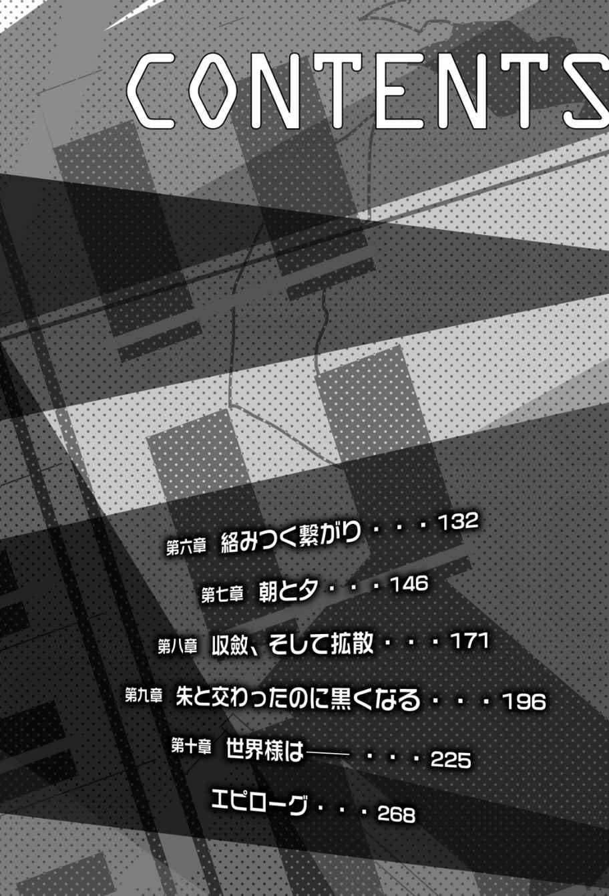

| アイサレワールド -I really，truly surrender to you.- 冬美原久真部の解決日誌1 アイサレワールド -I really,truly surrender to you.- 冬美原久真部の解決日誌 (HJ NOVELS) | |
| 望公太 | |
| (2015) | |

「世界様は――××××なんだよ」
彼 女 は俺 に教えてくれた。
去年の冬、冷え切った屋上のコンクリートの上で、俺は《世界の恋 人 》に出会った。
俺は彼女が大 嫌 いで、だから敵対して、そして敗北した。
ひとことで言うと、熊 のような女性だった。
そう、熊だ。
俺は、世界最強の生物は熊だと思う。
もちろん、ライオンと喧 嘩 したら負けるかもしれない。象に勝つことは不可能かもしれない。クジラとは勝負にすらならないかもしれない。
それでも、熊が最強だと思う。
強 靭 な爪 と顎 。威 圧 感 溢 れる巨 体 のくせに、走る速度は自動車並みで、ひとたび襲 われたら人間なんて簡単に壊 される。
そしてなにより――熊はかわいいのだ。
毎年、人が熊に襲われるという事件は多く発生しているのに、それでも熊は、いつだってかわいくグッズ展開され、人気を獲 得 している。
リラックマとかくまのプーさんとか。
そういうチャーミングとデンジャラスを併 せ持 つ生物は、熊の他 にはいない。
だから、熊が最強。
熊さながらの彼女に出会ってから、俺はそう思っている。
激 闘 の末に、俺は、彼女に完 膚 無 きまでに叩 きのめされた。
彼女に敗北したことで、これまでの世界観が全 て崩 壊 した。
あのときから、俺の世界が動き出したような、そんな気がする。
「死にたい人間は死ねばいい、なんて冷たいことを言うつもりはないけどね。それでも、死にたい人間を無理やり生かす権利なんて誰 にもないと思うよ。生きたい人間を無理やり殺す権利が誰にもないようにね」
くま子先 輩 は不敵な笑 みのまま呟 き「そして４三歩だ」と付け足した。
六月の下 旬 、放課後の部室。
常盤 高校の部活棟、四階の隅 に俺 達 の部室はある。八畳 ほどの小ぎれいな部屋だ。
部員三人は、いつも通りだらだらとしていた。
漫 画 を読んでいる俺と、その後ろで布 団 に入って寝 ている男と、くま子先輩。
くま子先輩は長テーブルの短辺（部長席）に座 り、頬 づえを突 いて、ノートパソコンをいじっている。
「それは......まあ、その通りかもしれないですね」
ページをめくりながら返答し「７四飛車です」と決めていた一手を指した。
指したと言っても、将 棋 盤 を使っているわけではない。くま子先輩はパソコンに、俺は漫画に意識を集中させながら「ならば、私は同銀だ」「......じゃあ８六香打で」と互 いに棋 譜 を読みあげていく。
目 隠 し将 棋 。将棋の遊び方のひとつで、高度な記 憶 力 が要求される。雑談しながら目隠し将棋ができる人間が、日本には何人いるだろうか。
「つまり、頭ごなしに自殺を否定するのはよくないということだよ。６四歩」
「同じく桂 馬 。じゃあ、くま子先輩は自殺を肯 定 するってことですか？」
「いや、そう両極 端 な話じゃないんだよ、究 理 くん。ただ私は、個人が悩 みに悩んだ末に辿 り着 いた答えが自殺だとしたら、それを他人が、たいした主義主張もなしにとやかく言うべきではないと思うのさ。５三銀、成」
「............６八金打。なるほど......。自殺した偉 人 も多いことですしね」
自殺は悪い、と言うのは簡単だ。しかしこの世界に絶望する人間がいることも事実。
この世界が嫌 いで、この世界に嫌われているような、生きることが苦痛でしかないような人間は――存在する。
「それで、結局、くま子先輩はどう考えているんですか？」
「んー、そうだね......。ま、他人に殺されるくらいなら、自分で死んだほうがマシだと思ってるよ」くま子先輩はまとめるようにそう言って、薄 く笑った。「さて。将棋の方も、そろそろクライマックスかな。１三飛車」
「......３四玉」
「４二桂馬、成。王手だよ、究理くん」
「......ありません。俺の負けです」
両手を上げて降参のポーズを取る。
「これで私の三戦三勝だね。強くなってるとは思うし、何回か危ないところがあったけど......まだまだ、かな？」
腰 まであるストレートの黒 髪 をかき上げて、得意げな笑みを浮 かべる。
俺は深ぁく嘆 息 し、苛 立 ちをなんとか抑 えながら言葉を吐 く。
「......やっぱり止めましょうよ。この、適当に棋譜を読み上げて目隠し将棋やってるフリをするの......」
「えー」と不服そうなくま子先輩。
さっきまで読み上げていた棋譜は全部適当だ。目隠し将棋なんて出来るはずがない。くま子先輩にいたっては、駒 の動かし方すら知らないのだ。
「いいじゃないか、エア将棋ごっこ。これをファミレスとか教室とかで実 践 すれば『うわ、あの人達 超 スゲェ！』と注目を浴びること間 違 いなしだ。かっこいいだろう？」
今日、部室に入るなりくま子先輩が「エア将棋をやろう」と言いだした。目隠し将棋という名前すら知らなかったらしい。ちなみに、勝敗は最初のジャンケンで決まる。つまり俺はくま子先輩にジャンケンで三連敗したということだ。
無 駄 に運が強いからな、この人。
「まずは、普 通 に将棋盤使ってやりましょうよ。駒の動かし方なら俺が教えてあげますから」
「嫌 だ。めんどくさい」
この女......。人の好意をなんだと思ってやがる。
「将棋はもう飽 きたから、次はエアデュエルをしよう。いくぜ城之内くん！」
「嫌です」
「私のターン、ドロー！ はい、エクゾディア！」
「絶対やると思った！」
「わははははっ！」
豪 快 で、屈 託 のない、心底楽しそうな笑い声。
くま子先輩。
本名、冬 美 原 久 真
俺のひとつ上の先輩で十八歳 。大層な美人ではあるのだが、なにかと問題の多い女性でもある。学校一の問題児であり、変人だ。
身長は百八十センチ弱。そのくせ、出るとこが出て締 まるとこが締まったナイスバディ。首から上は、かわいいよりも美しいと呼ぶべき大人び過ぎた顔立ちで、間違っても美少女とは呼べないような美人だ。目つきは鋭 いが、いつも楽しそうに笑っているため、怖 いとは滅 多 に思わない。......まあ、滅多には。
女性から、ありとあらゆるロリの要素を取り除けば、くま子先輩になるだろう。
そして――
くま子先輩は《世界の恋人》だ。
この世界と付き合っている――と自 称 している。
忘れもしない。
くま子先輩と初めて会った日のこと。
去年の冬、俺がこの高校に転校して来てから間もない頃 、屋上で、
「申し訳ない！ 究理くんとやら。残念ながら、私はきみと付き合うことはできない。なぜなら、私には恋人がいるからだ。私は『彼 』を心の底から愛しているんだ！」
くま子先輩は拳 を握 りしめて、熱く『彼』との愛を語った。
いや、俺の名 誉 のために言っておきたいのだが、くま子先輩は勝手に話し始めた。別に俺が告白したわけでもないのに、一人でぺらぺらと。実に楽しそうに。
「......いや、まあ、どうでもいいですけど......」
「どうでもいいわけあるかぁ！」
理 不 尽 に怒 鳴 られ、そのまま延々と『彼 氏 』の自 慢 を聞かされた。
「んで、その彼氏ってのは誰なんです......？ この高校の人ですか？」
うんざりした俺が尋 ねると、くま子先輩は、待ってましたと言わんばかりに満面の笑 みになり、両手を仰 々 しく広げて、
「この、世界様だ！」
と言い切った。
「............？」
そのときは頭がフリーズした。思考回路はショート寸前だった。
しかし受け入れなければ話が進まなそうだったので、俺は強 引 に話を合わせた。
「いつから......付き合ってるんですか？」
「二年前の八月十五日だ。長年のアプローチのすえ、ようやくオーケイをもらった」
「......それ、具体的にどんな風にオーケイをもらったんですか？」
「それは言えないな。二人の秘密なんだ」
「上 手 く誤 魔 化 されたような......。いや、そもそも『彼氏』って......。この世界って男なんですか？」
「わははは。究理くんは馬 鹿 だなぁ。世界様に男も女もあるわけないだろう？」
「............」イラッとした。
「ジェントルウーマンである私の恋人だから、便 宜 的 に『彼氏』となっているだけだよ。『彼』は性別なんか超 越 した存在なんだよ」
「そりゃ世界ですもんね......。じゃあ、『彼』のどういうところが好きなんですか？」
「いっぱいあるが、一つあげろと言われれば......、包容力があるところかな」
「あー、確かに。なんかめちゃめちゃありそうっすね、包容力」
そんな、わけのわからないやり取りを繰 り返 して、
「まあ、仲良くしようじゃないか、究理くん。きみ、確か転校生だろう？ よしよし、それなら私が友達になってあげよう。困ったことがあったらなんでも言ってくれ」
会話がひと段落ついたところで、俺に手を差 し伸 べ「よろしくね」と笑った。
俺達の出会いはそんなものだった。
その直後に、敵対して激闘して、敗北して和解して、今は一 緒 の部活に入っている。
最初は気に入らなかったし、嫌いだった。
でも、今は違 う。
少なくとも、ただのイタい女じゃないということだけはわかった。
くま子先輩は真 剣 にこの世界を愛している。
彼女は、人間の男程度に扱 える女性じゃないのかもしれない。
この世界くらいが、冬美原久真の『彼氏』にはちょうどいいのかもしれない。
「............なんてね」
読み終えた漫画を机の上に置き、伸びをしながら後ろを向くと、布団で寝ている剣 が目に入った。寝ているのではなく横になっているだけかもしれない。剣は基本的に布団の中にいる。一日の四分の三は布団の中で過ごしてるんじゃないだろうか。
「剣、将棋でもやんないか？」
ダメ元で声をかけると、
「......いいよ。７六歩」
剣が暗い声で答えた。けど目は閉じたまま、布団にもぐったままだ。
俺はスチール製の棚 から将棋盤を取り出し、急いで駒を並べる。指示通りに駒を動かし「３四歩」と自分の手を口に出し、盤 上 の駒を動かす。「......２二角成」という後ろからの声に従い、剣の分も駒を動かす。
これが俺と剣の将棋の指し方だ。俺には無理だが、剣は目隠し将棋くらい余 裕 で出来る。
鶴 城 剣。
俺と同じ二年七組で、整った顔立ちをしている小 柄 な美少年だ。ただし、その美 貌 を台無しにする、陰 鬱 な雰 囲 気 を纏 っている。近くにいるだけでやる気というやる気を奪 われそうだ。
剣とは去年から同じクラスで、三学期の初めに転校してきた俺の隣 に座っていたのが剣だった。友達なんていてもいなくてもどっちでもよかったのだが、さすがに一人もいないという状 況 はいろいろ問題が生じる（移動教室の情報が回ってこなくて一人で教室に残されるとか）。
どれ一人くらいは作っておくか、と思い、俺は恥 をしのんで隣の奴 に話しかけた。
最近やってるゲームとか、読んでる漫画とか、そういう雑談で盛り上がった後に、
『剣みたいな奴と友達になれてよかったよ』
俺が営業スマイルでにこやかに言うと、剣は神 妙 な顔つきになり、しばらくなにかを考えるような仕草をして、
『......そうか、これが友達か。生まれて初めてできたよ......うん。よろしく、究理とやら』
と、爆 弾 発言をした。
ビックリである。
なんでも、引きこもりがちだった剣が気まぐれに登校してきた日が、運悪く俺の転校日と重なってしまったらしい。そんな不登校ヤローの友達となってしまった俺は、クラスから見放され、教師からは剣の面 倒 を押 し付 けられてしまった。
「......６八銀。......詰 みだよ、究理。あと二十三手以内で僕 の勝ち......ふぁ」
呑 気 な欠伸 の交じった勝利宣言。どこをどうやったら後二十三手以内で詰むのか全くわからないが、剣がそう言うならそうなんだろう。いつも通り俺の完敗だった。
「少しは手加減しろよな」
「......そういうのは逆に難しいんだよ......。面倒くさいしね」
盤 面 の駒を崩 して振り返ると、剣と目が合った。生気が全く感じられない、洞 窟 のような瞳 。長い前 髪 が顔にかかっていて、暗い雰囲気を増加させている。
剣は、怠 惰 の化 身 のような男だ。
食事も呼吸も億 劫 そうにこなし、誰よりも活 き活きと眠 る。
眠くなったのか、剣は再び目を閉じた。
「あ、おい、寝るなよ。せっかく起きたんなら雑談しようぜ。レッツトーク」
「......寝させてよ......。起こされるのは嫌いなんだ。この世界に産まれ起こされたことだけでもう沢 山 だよ......」
よくわからないことを呟き、剣はとうとう頭まで布団をかぶってしまった。
「負けたのかい？ 情けないなぁ、究理くんは」
くま子先輩がにやにやとしながら言ってきた。
「いいんですよ、暇 つぶしですから」
自 嘲 気味に笑い、肩 をすくめた。そもそも、俺が剣に敵 うはずがない。
なにを隠 そう、鶴城剣は天才だ。なにができるかと聞かれれば、なんでもできるとしか言いようがない。将棋の強さなんて、剣の才能の一 端 の一端の一端だ。
先週あった一学期中間テストの結果は、なんと全教科三十点ジャスト。誤答は一つもなく、間違いは全て空 欄 。「......字を書くのが面倒くさい」と言って、赤点ギリギリ分しか問題を解かなかった。問題用紙には配点は書いてないのに......。教師の意図を読み切ったということなのだろうか。とんでもない奴だ。
くま子先輩はパソコンへと視線を戻 す。
おそらく、自分のサイトのチェックをしているのだろう。
「くま子先輩。ネットやるのもいいですけど、変なとこにアクセスしてウイルスとか貰 ってこないで下さいよ」
「何を言う。この私がそんなかっちょ悪いことをするはずがないだろう？」
「よく言いますよ......。こないだ明らかに怪 しいアダルトサイトにアクセスしてたくせに。剣がいなかったらどうなってたことか......」
「ちぇー、なんだよ、究理くんの馬鹿。そうやって過ぎたことをぐちぐちと、小 姑 みたいに。そんなことじゃ、《禁断の夏野菜》の名折れだよ？」
「......そのあだ名、好きじゃないんですよ。明らかにイジメですよね、それ」
宗 良 究理。
俺の名前だ。『究』と『理』という二つの漢字自体はやたらカッコイイくせに、この二つを足すとやたら情けなくなるから不思議である。
そもそも、《禁断の夏野菜》という蔑 称 のようなあだ名を頂 戴 してしまったのは、他ならぬくま子先輩のせいだ。
この部活、Ｈ２部の部員数はわずか三人。
部長 冬美原久真。副部長 宗良究理。部員 鶴城剣。
水素の研究をする部活でも、二人のヒーローが野球をする部活でもない。
正式な部名は――
『冬美原久真部』
............。
世界広しと言えど、自分の名前をそのまま部名にしてしまうような自己主張の強い人間は、くま子先輩だけだと思う。しかも活動内容は『冬美原久真と楽しく遊ぶこと』だ。
......すげーよね。
『私は、全ての部活から入部を禁止されているんだよ。わははは！』
なんでこの部活を作ったんですか、と尋ねたとき、くま子先輩は誇 らしげにそう言った。俺が転校してくる前に、いったい何をやらかしたんだか。
《一人で美女と野 獣 》なんて悪名が轟 いているくま子先輩と敵対してしまったため、『冬美原久真に喧嘩を売った転校生』として、俺も有名になってしまったのだ。
しかし《禁断の夏野菜》って......。いや、別に胡瓜 は嫌いじゃないけどさ。
なんでこんなことになってしまったんだろう、俺の高校生活......。
「《禁断の夏野菜》が嫌なら、ヘアスタイルにちなんでワカメちゃんでもいいけど」
「却下 です」
言いたい放題のくま子先輩をじとりと睨 んだ。俺の髪 がややワカメっぽいのは本当なので、余計に腹立たしい。
「ところで究理くん。最近暑くなってきたけど、その左手は大 丈 夫 なのかい？」
「このサポーターは通気性がいい奴だから大丈夫ですよ」
左手を掲 げた。
俺は、左手にいつも黒いサポーターを着けている。肘 から掌 まですっぽりと覆 う形状で、五指は抜 いてある。
「究理くんの数少ない個性だからね」
「ほっといて下さい」
「キャラづくりも大変だよね」
「そんな理由じゃねえよ！」
「わかってるって、その左手に地 獄 の鬼 が封 印 されてることは、誰にも言わないよ」
「『ぬ～べ～』でもない！」
俺のツッコミも虚 しく、くま子先輩はにやにやしていた。
まったく。全部わかってるくせに。
呆 れる俺を無視して、くま子先輩は視線を画面に戻した。
『アポトーシス』という、剣が作り、くま子先輩が管理しているサイト。ピンク色が主体となっているかわいらしいサイトだ。
とても、自殺サイトには見えない。
「............」
くま子先輩は趣 味 で自殺系サイトを運営している。最初は、なんて悪趣味な先輩なんだ、と思ったが、『多くの自殺志願者はね、誰にも話せないような悩みを抱 えているんだよ。そういうものを思う存分吐き出せる場所があってもいいじゃないか』と言っていた。
ニュースや新聞で『自殺系サイトで知り合った者同士が心中』という事件がよく取り上げられるせいで悪いイメージが強いが、それとは逆に、自殺系サイトに書き込むことによって心理的ストレスが軽減され、自殺を思いとどまった、という例もあるらしい。
くま子先輩はサイトをしっかりと管理しているから、問題はないと思う。
『私が大好きな世界様を、みんなに嫌って欲 しくないんだよ』
というのが、くま子先輩の行動理念。
世界を好きになれない人間の協力がしたいらしい。
「......おや？ 究理くん。ちょっとこの書き込みを見てくれないか？」
怪 訝 そうな表情のくま子先輩が指したのは、掲 示 板 の書き込みだった。
『日 下 部 夕 子 』
『死にたい。
学校でイジメられていて、毎日が辛 いです。
みんな大嫌い。
生きている意味がわかりません。
この世界は、私を拒 絶 している』
「......これが、どうかしたんですか？ こう言ったらなんですけど、普通の書き込みだと思いますよ」
自殺系サイトではよくある、悲痛な、この世界への呪 詛 。
「うーん。まあ、内容はそうなんだけどね......。ただ、この名前がね」
くま子先輩は口をへの字にして、腕 を組んだ。
「名前、ですか......。まあ、フルネームで書き込んでるのは珍 しいと思いますけど」
「ああ、違う違う。そうじゃなくてね――」
困ったように笑い、言葉を続けた。
「この女の子、もう死んでいるんだよ」
意味が、わからなかった。
「......どういう、ことですか？」
「きみがこの学校に転校してくる前、去年の九月くらいだったかな。東 高の女子が校舎の屋上から飛び降りて、死亡するという事件があった。遺書は見つからなかったそうだけど、その女子生徒がイジメられていたことから、自殺だと判断された」
東高とは、県立東高校のことだ。この、私立常盤高校から自転車で二十分くらいの距 離 にある。偏 差 値 はほんの少しだけこっちが上。
「その女子生徒の名前が......」
「そう、日下部夕子。私のサイトに書き込んでる『日下部夕子』と同 姓 同名だね」
死んだ人間の、さらなる自殺志願。
なんとも気味の悪い話だ。
「うーん。この『夕子』ちゃんは、一回死んだくらいじゃ物足りないってことかな。幽 霊 になってまでサイトに書き込むなんて、よっぽど世界様が嫌いだったみたいだね」
「馬鹿なこと言わないで下さいよ。こんなの、誰かのイタズラに決まってんでしょ？」
「そうとは限らないじゃないか。『夕子』ちゃんがあの世から書き込んでるという可能性だってある。もしかしたら、なにかこの世に未練があるのかもしれないよ」
平然と言うくま子先輩。本気なのかふざけているのか判断できない。
「......馬 鹿 馬 鹿 しいですよ。幽霊とかあの世とか、そういうのは非科学的です」
「おいおい、究理くん。それはずいぶんと傲 慢 な考えだね」
俺の意見を、くま子先輩は軽く笑って否定した。
「非科学的だということは、幽霊が存在しない理由にはならないだろう？ 非科学的なのが幽霊なんだからね。つまり、科学では解明できないからこそ、幽霊や超 能 力 、後は......占 いとか宗教とか、そういうオカルトな事 柄 に存在意義があるんだ。どちらが正しいとかじゃなくて、ジャンル――ただ視点が違うだけなんだよ」
まくしたてるような口調だった。くま子先輩はけっこうおしゃべりである。
「科学が非オカルト的、とも言えるね。だいたい、近年じゃあ心 霊 現象の多くは科学的に解明されているそうだけど、私はそんなもので納 得 する気は起きないよ」
「......どうしてですか？」
金 縛 りが自己暗示だとか、心霊スポットは電磁波が強い場所で、その強力な電磁波が脳に影 響 を与 えるとか、火の玉がプラズマだとか、いろいろと納得のいく説明が多い世の中だと思うけど......。
「信じられない、と言った方がいいかな。私は未 だに自分の体に電流が流れているとは思えないし、肺が酸素を二酸化炭素にしている自覚もない。地球が丸いかどうかも、自分で確かめたわけじゃないから、よくわからないよ。いくら教科書に書いてあるからって、科学にそこまで依 存 する気は起きないね」
そう言われてしまえば、返す言葉がなかった。
確かに俺達は、科学というものを盲 目 的 に信じ切っているのかもしれない。
本やテレビの情報をうのみにしているだけで、実際には見たことも聞いたこともないことを、当り前のように信じている。電流も酸素も、教えられなければ一生気付くこともなかったはずだ。例えば教科書に『人は脳ではなく心臓で物事を考える』と書いてあれば、なにも疑わずに信じたことだろう。
そう考えると、科学が、それ自体でひとつの宗教のようだ。科学的な、それっぽい説明をされただけで、人は理解を放 棄 して半 端 に納得してしまう。
本当はなにもわかっていないくせに。
「......で、結局くま子先輩は幽霊とか信じてるんですか？」
「私かい？ 私は、いてもなにもおかしくないと思ってるよ。いるかどうかはわからないけど、いてもなにもおかしくない」
「うわ......。それ、なんかずるいですよ」
曖 昧 に言葉を濁 して、誤魔化している感じがする。『今年は結 婚 の可能性はないですね。でも努力次 第 じゃわかりません』とかいう占い師 みたいに。
「いいんだよ。曖昧でいいんだ。そもそも人間自体が曖昧な存在なのさ。目盛の狂 った定規みたいなものだね。人によって長さがバラバラで、しかも誰 一 人 として正しい目盛を持つ者は存在しない。そんな定規で世界様のなにが測れる？ 結局、人間は絶対ではない。世界様だけが、絶対の存在なんだ」
まるで恋人の自慢でもするかのように、くま子先輩は語った。
「まあ、百歩譲 って幽霊はいるかもしれない、ってことでいいですけど......。それでも、俺はあの世だけは信じられないですよ。この世に霊 魂 が残るならまだしも、天国とか地獄とか、死んだ人間がみんなそこにいるなんて、ありえない......」
それに。
死んでまで自分が存在するなんて、想像したくもない。
死ですら――終われないなんて。
「ふうむ。私もあの世については強く語ることはできないかな。こればっかりは、死んでみないとわからないしね。でも、私は『あの世はある』と断言しておこう」
「どうして？」
「考えてごらんよ。万が一あの世があったら、生前『あの世はない』と豪 語 していた人間は、あの世でずいぶんと肩 身 の狭 い思いをするんだろうね。『あの世はある』と言っていた人間に、それみたことか、とドヤ顔で馬鹿にされるんだよ」
くま子先輩はくすくすと、悪 戯 を思いついた子供のように笑う。
「あの世がなかった場合は、問題ない。だって死んだら存在がなくなるんだから。つまり、あの世がある、と言っておいた方がお得なのさ」
「............」
なんか釈 然 としない。いいように丸めこまれた気がする。
「もし、あの世で究理くんと再会したら、大笑いしてやるよ。『ほぉらね、私の言った通りだろう』ってね。わはははは！」
気持ちのいい笑い声をＢＧＭに、俺はつい考えてしまう。
幽霊やあの世という、非科学的な世界について。
「ま、この書き込みは日下部夕子ちゃんの幽霊ではなく、他の誰かのイタズラと考えるのが、妥 当 だろうけどね」
「......散々オカルトを肯定しておいて、それですか？」
「確率の問題だよ。幽霊もあの世も否定はしないけど、これについては、どう考えても生きてる人間の悪趣味なイタズラと考える方が現実的だね。それに、本当に幽霊の仕 業 だったら私にはどうしようもない。それこそ『ぬ～べ～』先生の出番だ」
そりゃそうだけど......。つうか、最初に俺が言ったことじゃないか、それ。
「究理くんがずいぶんとクールにオカルトを否定するから、ついからかいたくなっただけさ」
悪びれもせずに、むしろ得意気なくま子先輩。
なんだかなあ。要は俺をいじめたかっただけなのかな。
「さて」
と、くま子先輩は画面に向き直る。
「大 胆 不 敵 でただ単に素 敵 、だいたい無敵なこの冬美原久真が、お相手をしてあげようじゃないか。ねえ、『日下部夕子』ちゃん？」
口 の端 を吊 り上 げて、妖 艶 に笑った。
俺が朝起きて初めにすることは、左手にサポーターを着けることだ。他人に見せるわけにはいかないし、自分でも見たくはない。
欠伸を噛 み殺 しながら洗面台に向かい、顔を洗い、歯を磨 く。
このマンションでの一人暮らしにもずいぶんと慣れた。厳密には父さんとの二人暮らしだけど、あの人は仕事人間だから、家には滅多に帰ってこない。
「......もう七時か」
急いで身 支 度 を整え、いつものように仏 壇 の前に正座し、手を合わせた。
仏壇には笑顔の女性がいた。強いウェーブのかかった黒髪と、温和そうな顔立ち。
俺の母さんだ。
五年前、俺が十二歳のときに、母さんは交通事故で死んだ。即 死 ではなかったけれど、運ばれた病院で治 療 中に亡 くなった。
俺と母さんと父さんの三人は、五年前まではこの町に住んでいた。
母さんの死と重なるように父さんの転勤が決まり、俺はこの町を離 れ、別の土地で中学三年間と少しの高校生活を過ごし、今年の一月にまた、この地に帰って来た。
俺は母さんが大好きだった。
父さんは子供に興味がない人間だから、俺は母さんに育てられた記 憶 しかない。
母さんはいつも笑っていて、優 しくて、温かくて、俺の全てを受け入れてくれた。
お菓 子 作りが得意で、よくケーキを作ってくれた。
虫が苦手で、家に入って来た虫は全て俺が退治していた。
癖 の強い髪の手入れに、いつも苦労していた。
でも、死んでしまった。
母さんが死んだ日から、
俺は――
ずきり――
左手が、痛んだ気がした。
「............」
立ち上がり、玄 関 へと向かう。靴 を履 き終えた後、玄関に置いてある鏡が目に入った。
母さんそっくりな自分の髪を見て、つい笑ってしまう。
「......やっぱりワカメっぽいかもなあ」
不老不死について考えよう。
老いない、死なない。これは素 晴 らしいことだ。
誰にだって大切な人間はいる。家族、恋人、友人と、別れたくない相手は大勢いるはずだ。人間関係で唯 一 避 けられない別れの形が死別である。こればっかりはどうしようもない。
だから俺は、はるか昔の錬 金 術 師 であろうと漫画の登場人物であろうと、不老不死を求めた者を馬鹿にしない。
しかし自分が不老不死になりたいかと聞かれれば――答えはノーだ。永遠にこの世界に存在し続けなければいけないなんて、考えただけでも恐 ろしい。
他人に長生きして欲しいとは思うが、自分が長生きしたいとは思わない。
だから、あの世なんて信じないし、望まない。
天国だろうと地獄だろうと、永遠に存在し続けるなんて拷 問 でしかない。
生き飽きた、とでも言うのかな、この感覚は。
「......ま、俺がこういうことを考えるのも、若気のいたりってやつなんだろうな。どうせ年取ったら『死にたくねえ』ってわめくだろうし。で、剣 はどう思う？」
昼休み。にぎやかな教室の隅で、俺は剣と弁当を食べていた。剣は机の上にぐだーっと両手を突き出して突っ伏している。相変わらず生気が一 切 感じられない。
ドラゴンボールの話をしていたはずが、いつのまにか不老不死の話になってしまった。俺の質問に対する剣の反応は、
「............え、なに？」
聞いてなかったらしい。まあこういう反応には慣れているから腹は立たない。会話を拒 否 されないだけ、今日はマシな方だろう。
「そこが剣のいいところ、なのかな......。ほれ、あーん」
卵焼きを箸 でつまみ、剣の口に運ぶ。「......あーん」剣も億劫そうに口を開き、食べる。机に伏 せたまま、目を閉じたまま、ちっともおいしくなさそうに。
「......んまい。もう一個......」
そうは見えない表情だったが、褒 められて悪い気はしない。
今度はタコさんウィンナーを掴 んで「あーん」「......あーん」と食べさせる。
剣は放っておくと餓 死 しそうな奴なので、俺 が食生活をサポートしている。学校がある日の昼食は、俺が多めに作った弁当を分けることによって成り立つのだ。「......箸を動かすのが面倒くさいから食べさせてよ......」と言うので、いつも俺が食べさせている。
「あーん。あ、そう言えば剣。お前、くま子先輩のサイト見たか？」
「......あーん。......うん。昨日家で......」
昨日の『日 下 部 夕 子 』の話は、剣は寝てたから聞いていない。剣の意見が気になった俺は、家に帰ってからサイトを見るように連 絡 した。
「サイトにあったあの自殺志願、お前はどう思う？」
周りの人間には聞こえないように、声を小さくして訊 いた。
「......どうもこうも、ただのイタズラでしょ？ 気にするほうがどうかしてるよ......」
それもそうか。
「んじゃ、お前は幽霊とか信じてないってことか？」
「......信じてないよ」
「それは、非科学的だから？」
「......うん。科学の方が僕の好みだから」
好みの問題。つまりはそういうことか。好きな方を選べばいいんだ。
ただ、現代社会では幽霊や超能力なんかを本気で信じている人間の方が少ない。だから、科学を信じていたほうが、大多数の、普通の人間でいられるのだろう。
俺がそう言うと剣は、
「......大事なのは共通認 識 だよ、究 理 」
と、つまらなそうに呟いた。
「......宗教だろうと、科学だろうと、人間が社会というコミュニティを形成するためには、共通の認識が必要なだけ......。それが事実である必要はない。地球が太陽の周りを回っていようと、太陽が地球の周りを回っていようと、どっちでもいいってこと......」
「共通の認識、か......」
「......学校の教科書なんかいい例だね。正しいことじゃなくて子供に教えるべきことが書いてある......。科学的に解明されてることでも、それが現在の日本社会に悪 影 響 を与えることだったら、隠されたりもしてるし......」
剣のことだから、ご自慢のネットスキルでそういう危 ういところにもアクセスしているのだろう。あるいは、剣が自分で研究、発見し、そのまま発表もせずに隠している新事実があるのかもしれない。
知能の化物である剣なら、十分にありえる。
「だとすると、俺 達 は社会にとってずいぶんと都合のいい人格に作られてんだな」
それはそれとして、今は『日下部夕子』の話だ。
自殺した人間の名前を騙 るとは、いったい何が目的なのか？
いくら考えてもわからない。とりあえず今日の放課後、くま子先 輩 に経過を訊いてみよう。
「ま、いざとなったら、お前にＩＰアドレスでも辿ってもらえれば、なんとかなるよな」
コンピュータ関連にも常識外れなスキルを持っている剣なら、あの書き込みの主を捜すぐらい簡単なはずだ。
しかし、剣は不満気に息を吐きだした。
「......嫌だよ。面倒くさい......」
放課後、俺と剣が部室のドアを開けると。
くま子先輩がエロ本を読んでいた。
「何やってんだ、あんたは！」
「わぁ！」びくりと肩を揺 らし、くま子先輩はエロ本を床 に落とした。「きゅ、究理くん、いきなり大声を出さないでくれよ。びっくりするじゃないか」
「だまれ。女子高生が堂々とエロ本を読むな」
「何を言うか！ そこにエロ本があれば、読む。これは常識だろう？」
言い切りやがった。『そこに山があるから』みたいに言いやがって。
アルピニストに謝 れ。このオープンスケベ。
「クールなきみらしくないなあ。そんなハトがエアガンくらったみたいな顔になって」
「それじゃ動物虐 待 です。ハトには豆 鉄 砲 ですから」
まあ、どっちにしても立派な動物虐待なんだけど。
そして、ことわざは大体動物を虐待するのである。猿 を木から落としたり、河童 を川に流したり、犬を棒に当てたり、二鳥に一石をぶん投げたり。
日本人って怖いねー。
「でも究理くん。ハトが豆鉄砲をくらったような顔って、ぶっちゃけ意味不明だよね」
「む。確かに......」
いったいどんな顔になるんだろう。ハトって、どう考えてもそんなに表情が変化しないだろうし。まず豆鉄砲ってなに？
「こんな顔かな。くるっぽー！」
「いやいや、きっとこんな顔です。クルッポー！」
「くっくるー」「クルックー」「ぽっぽー。くるー」「クルーポッ」
気持ち悪いくらいに仲がいい、先 輩 後 輩 だった。
変顔に飽きたらしく、くま子先輩が話を戻す。
「だいたい、究理くんがエロ本を忘れていくから悪いんだろう？」
「はあ？ いや......、俺のじゃないですよ。なんで俺が部室に持ってこなくちゃならないんですか。学校にだって持ってきたことないのに」
「なっ」心底驚 いたような顔をするくま子先輩。「エロ本を持ってこないって......きみは鞄 になにを入れて学校に来てるんだ？」
「教科書とノートと筆記用具だ！」
「まったく......。草食系だかなんだか知らないけど。最近の男の子はエロスに対する積極性に欠けるね。少しは世界様を見習いたまえ」
やれやれといった感じで、くま子先輩はため息をついた。
ああ、むかつく。
いつもいつも、なにかにつけて世界様と比 較 しやがって。つうか世界ってエロいのか？
「とにかく、それは俺のじゃないですよ」
「いいわけは見苦しいよ、究理くん。これを見てもまだそんなことが言えるのかい？」
そう言ってくま子先輩は三冊のエロ本を机の上に並べた。いっそ清 々 しいくらいに恥 じらいがない。
「これが巨乳特集の本で、これが背の高い女性特集。そして言葉責め特集だ......」
「それが、どうかしたんですか？」
「全部、私の特 徴 じゃないか！」
......ああ。言われてみれば確かに。くま子先輩は巨乳で長身でおしゃべりだ。
「究理くんは、常 日 頃 私の肉体を舐 めまわすように視姦しているからね」
「してねえよ！」たぶん。
「私のはちきれんばかりのダイナマイトボディに、欲情してしまってもなにもおかしくない。ほーらほら」
ぬお！ 自分で自分の乳を揉 むな！ そのポーズは反則だ！
なんていうか、大きいのに張りがあるんだよな。地球の重力を完全に無視している。この乳なら、ディオガ・グラビドンでも跳 ね返せるんじゃないだろうか。
「ほぅらね」
つい目を奪われていると、くま子先輩が勝ち誇ったような顔を向けてきた。
くそぉ。勝てる気がしねえ。
「......はあ」深く嘆 息 。なんかどっと疲 れた。「もう勘 弁 して下さい。本当の本当に、それは俺の本じゃないですから」
パイプ椅 子 に座 りつつ、必死に懇 願 したのだが、くま子先輩は納得いかない様子で、前髪をくるくるとねじる。
「そこまで言うのなら信じるけど......。でも、究理くん以外には考えられないからなぁ」
「どういうことですか？」
「今日部室に来たら、机の上にこの三冊が置いてあったんだよ。この部屋に来る人間なんて、私と究理くんと剣くんしかいないだろう？ 私は犯人じゃない。だったら消去法で究理くんだよ」
「待ってくださいよ、剣が――」
言葉の途 中 で、気がついた。
「――剣じゃないですよね」
「そうだよね」
二人でうんうんと納得した。
ちなみに噂 の剣は、いつの間にか愛用の布 団 に入って寝 ていた。この件に一 切 関 わる気がないらしい。まあ、元々剣がなにかに積極的に関わることなんてないんだけど。
このエロ本も剣の物であるはずがない。剣は草食系どころか絶食系だからな。
「やはり、犯人は究理くんだね」
「......だから、違いますって」
「容易に想像できるよ。早朝、究理くんが誰 もいないこのＨ２部の部室に来て、私専用の部長椅子に頬 ずりしながらエロ本を開いてハァハァしているところが」
「もう黙 れよっ！」
これなんてプレイだよ......。羞 恥 心 で顔から火が出そうだ。
悔 しがる俺を見て、くま子先輩は「わははは！」と、豪 快 な笑い声を上げた。
「でも、究理くんの物じゃないとしたら、いったい誰のだろうね？」
「知らんですよ......」
どっかの馬 鹿 のせいで、いい迷 惑 だ。
「エロ本を学校に持って来るような、思春期真っ盛りの男子は大勢いるだろうけど、わざわざこの部室で読むようなマニアックな変態は究理くんしかいないだろうし......」
もう疲れたので突っ込まない。そして、ふと思いつく。
「もしかして、これ、嫌 がらせなんじゃないですか？」
「うん？」
「俺達、Ｈ２部に恨 みを持った人間の犯行ってことですよ」
「わははは！ ないない。世界様を愛し、そして世界様に愛されて止 まないこの冬 美 原 久 真 が、みんなの人気者が、誰かに恨まれることなんてあるはずないじゃないか」
おおう、自己評価たっけー。
この人は自分が問題児である自覚がないのだろうか？
教師とか生徒会とか他校の不良とか、あんたを目の敵 にしてるだろうが。
しかしまあ、そんなことを言ってもしょうがないので、
「そうですね。でも、好きな人をいじめちゃうっていう心理もあるじゃないですか」
と言っておいた。大人の対応である。
「なるほど。つまり、これは私のファンによる犯行というわけだね。ふむ。このエッチな本は差し入れというわけか。それならばありがたく頂戴しよう」
くま子先輩は一人で愉 快 に勘 違 いした。ありえない話だけど、否定するのも面倒なので放置する。そのまま自分の鞄にエロ本三冊をしまう。......ああ、どさくさにまぎれて持って帰ろうと思っていたので、ちょっとショック。
「もしかしたら、昨日の書き込みも同一犯だったりして......」
『日下部夕子』――自殺した人間のさらなる自殺志願。
くま子先輩は「どうだろうねぇ」と曖昧に首を傾 げた。
「昨日、あれから何度か自 称 『日下部夕子』ちゃん宛 てに書き込んでみたけど、反応が全くない。どうにも要領を得ないね。タチの悪いイタズラだったら『復 讐 のために地獄から蘇 った』みたいな、幽霊気取りな発言が出るかと思っていたのに、そういう様子もない。本当に、日下部夕子ちゃん本人が生きていて、書き込んでいる感じがするよ」
くま子先輩はどこか悲しそうな、そしてどこか楽しそうな表情になる。
「本人って......知り合いだったんですか？」
「いや、会ったことはない。ただ、ニュースでいろいろとやっていたからね。写真も出てたから顔も覚えているよ。小柄で大人しそうな子だった」
「くま子先輩の対極ですね」
チョップを喰 らった。地味に痛い。
「父親不在の母子家庭、成績優 秀 、部活は帰宅部。あ、それと、これこれ」
くま子先輩は鞄から、新聞記事のコピーを取り出した。
その記事によると、日下部夕子が飛び降りたのは旧校舎の屋上から。東 高は十年くらい前に増築していて、新校舎と旧校舎があるのだ。
落下した場所は、その旧校舎の昇 降 口 付近。新校舎の教室からよく見える位置だったため、日下部夕子は、飛び降りてからすぐに発見された。教師や生徒が即 座 に１１９に連絡したが、救急車が到 着 するまでに息を引き取った。
「昨日ちょっと調べただけで、これくらいのことがわかった。これ以上となると、剣くんにでも頼 まないと無理だろうね」
くま子先輩が剣の方を見る。が、反応は一切ない。完全に寝ているらしい。
「つまり、ネットニュースや新聞記事によってくま子先輩の中にできた日下部夕子のイメージが、サイトに書き込んでいる『日下部夕子』と重なるってことですか？」
「そういうことさ。さすがは究理くん。頭の回転が速くて助かるよ」
「でも、くま子先輩が一日で作ったようなイメージでしょう？ 犯人も少し調べれば、簡単にそれっぽい書き込みができるんじゃないんですか？」
「それを言われると返す言葉もない。ま、女の勘 程度に思ってくれよ。私はなにかを感じるんだよ。あの書き込みにね」
ふうむ。くま子先輩の勘 は頼 りになるからな。
俺は少し真 面 目 に考えてみる。やはり、エロ本と書き込みは無関係なのだろうか。くま子先輩があのサイトの管理人であることはそんなに有名な話ではないが、かといって厳重に隠しているわけでもないから、調べられないことではない。
この二つの珍 事 件 が、くま子先輩に恨みを持つ人間のイタズラと考えるのは簡単だが、エロ本と自殺志願だと事件のランクが違 い過ぎる気がする。
とりあえず、様子を見るしかないだろう。俺だってそんなにヒマじゃないし。
「剣。俺、今日はバイトだから一人で帰ってくれよ」
「......送ってってくれないの？」
この世界が終わったかのような顔になる剣。
剣の送 り迎 えは、なぜか俺の仕事になっている。自転車の後ろに乗っけて登下校を共にしているのだ。
最近思うんだけど、俺、時給が貰えるくらいに剣の面 倒 みてるな。
「......僕 に、あのマンションまで一人で歩けというのか......。鬼、悪 魔 」
「お前の家、学校から徒歩十五分の距離にあるだろ。だいたい、俺がこの常盤 高校に来るまでは、一人で登下校してたんじゃないのか？」
「......人間はね、一度手に入れた文明の利器を手放すことができないんだよ......。インターネットしかり、スマートフォンしかり......」
俺は文明の利器かよ。褒められてんのかな？
「......頼むよ、究理。この通りだ」
「この通りとか言うなら、布団から出ろよ」
しかも俺に背中向けたまんまだし。
「......究理のばか......」
あ、すねちゃった。
「なんていうか......。究理くんって本当にＨ２部の人達 と仲いいわよね」
夕日で頬を染めつつ、篠 宮 は呆れたように苦 笑 して、眼 鏡 の奥 の目を細めた。歩くたびに、頭の後ろで束ねた髪が揺れている。
俺は部活を早めに切り上げ（たいした活動しているわけでもないんだけど）、自転車を押 しながら、同級生の女子と仲良くバイト先に向かっていた。
「そうかな？」
「うん。いろいろと有名だからね、Ｈ２部。この間の野球部との対決とか、ちょっと話題になってるもの」
「あれなあ」
先月の話だ。くま子先輩と野球部のキャプテンが揉めて「野球で決着をつけよう」という話になったのである。相手は九人でこっちは三人。くま子先輩がピッチャー、俺がキャッチャー、剣がライト......のポジションで棒立ちする役。
「あのまま続けてたら、絶対Ｈ２部が勝ってたわよね」
「勝ったら、勝ったで問題になってたかもしれないけどな」
くま子先輩が漫 画 にでも出てきそうな謎 の打法で、初回初球ホームラン。一点リード。その後は剛 速 球 で打者一 巡 をぴしゃりと抑 えた。しかし三回裏、何一つ働いていなかった剣が日射病で倒 れたので、こっちが降参を申し出た。
あのちっこい天才は、壊 滅 的 運動音 痴 プラス虚 弱 体質なのだ。
「前からいろいろとすごかったけど、今年になって究理くんと剣くんが仲間になってから、冬美原先輩も活 き活きしてる感じがするわよ」
「剣はともかく、俺なんかなんの役にも立ってないよ」
「謙 虚 なのね、究理くんって。それとも自 虐 的 なのかしら？」
ふふふ、と篠宮は悪戯っぽく笑った。
篠 宮 。
驚くことなかれ、これでフルネームだ。『篠』が苗 字 で『宮』が名前。
去年も今年も同じクラスで、そして去年も今年も委員長。眼鏡とポニーテールがチャームポイントの、適度に大人びた優等生だ。大人び過ぎてセーラー服がコスプレっぽく見えるくま子先輩とは大 違 い。
転校生の俺に、嫌な顔一つせずに勉強を教えてくれた素晴らしい女の子でもある。今から向かうバイトも篠宮に紹 介 してもらった。
俺の理想のタイプと言っていいだろう。くま子先輩や剣という変人の相手をすることで疲 弊 する俺の精神を癒 すのが、篠宮というわけだ。
「でも、究理くんがＨ２部に入ったのはまだ信じられないわ。あんなに冬美原先輩のこと毛 嫌 いしてたのに......。『あの女だけは絶対に殺す』とか、私に愚 痴 ってたし」
「......そんなこともありましたなあ」
ふと、あの激 闘 の日々を思い返す。
もう、ずいぶんと前のように感じる。
あのとき――屋上で冬美原先輩に会ったとき、俺は差 し伸 べられた手を思いっきり、ありったけの敵意を持って、弾 いたのだった。
「少年漫画の初期の敵ぐらい、あっさりと冬美原先輩の仲間になったわよね」
「......ぬう」
確かにあっという間だった。
ベジータというよりヤムチャ、海馬というより城之内くんのペースだったと思う。剣と組んで敵対したのだが、すんなりと吸収されてしまったのだ。
「......まあ、敵対なんて言っても、俺が一方的に敵視していただけだからな。くま子先輩にとっては全部遊びだったんだと思うぜ」
「それもそうね。究理くんだけがムキになってる感じだったわ。冬美原先輩はいつも通り飄 々 としてたし、相方の剣くんだって、ヌボーって眠 そうにしてるだけだったし」
反論できないのが悔しかった。
「くま子先輩は『飄々』っつうよりも、逆にして『ウヒョウヒョ』って感じだけど」
「あはは。なにそれ」手を口に当てて、女の子らしく笑う。「私はあんまり話したことないんだけど、やっぱり面 白 そうね、冬美原先輩って」
そうだな。俺もそう思うよ、篠宮。
あの世界の恋 人 は、本当に面白い。
俺のような人間には、ひどく魅 力 的 だ。
一度ハマったら――抜 け出 せない。
「まあ、遊ぶのもいいけど、勉強もちゃんとしなくちゃダメよ。学生の本分は勉強なんだから。究理くん、最近サボりが多いしね」
「大 丈 夫 だよ、ちゃんと出席日数は計算してるから」
「そういうことじゃないでしょ。ああ、もう......。剣くんの影響受け過ぎよ」
剣の天才性については篠宮も知っている。剣と組んでくま子先輩と戦ったときに、篠宮にもずいぶんと世話になった。
「もぉ、期末テストのときに困ってても助けてあげないんだから」
ぷい、と。少し頬をふくらませて、そっぽを向いた。
こんなことを言っててもどうせ助けてくれるのが、篠宮という心優しき少女なのだ。
「まったく」篠宮は皮肉っぽく言う。「剣くんほどじゃないにしてもさ、究理くんだって、なかなかの無気力人間よねー」
「んー、そうかもな」
曖昧な肯 定 で返すと、篠宮はダメな子を見るような目になった。
「もっと一 生 懸 命 生きなさいよ」
「......生きてるよ」
俺は篠宮から視線を外して、ぼんやりと空を眺 めた。
「本当に一生懸命生きてる。俺ほど一生懸命生きてる奴 はいないだろうな」
「どういうこと？ なにかのなぞなぞ？」
「だから、一生懸命生きてるんだよ。生きることに一生懸命って言ってもいいな。生きることで精いっぱいだから、他のこと頑 張 る余 裕 なんてない。集中して生きてないと、ふらっと死んじゃいそうだからさ」
自 嘲 気味にそう告げると、篠宮は見下げ果てたという顔になってしまった。
「やれやれだわ......」
もうこいつは手 遅 れだ、と思われたのかもしれない。ちょっと悲しい。見捨てないでくれよ篠宮。構って欲 しくて適当なこと言ってるだけなんだから。
しかし、一生懸命生きてる、か。
適当に言ったわりに、案外、俺という人間を表しているかもしれない。
今日はバイト二日目である。
学校から少し離れた、国道沿いにあるコンビニエンスストア。直営店ではなくフランチャイズで、雇 われ店長が自由きままに経営している。都会では滅 多 に見ない、店 舗 と自宅が一体になっているコンビニだ。
こないだは研修のビデオを見るだけだったから、店に出るのは今日が初だ。
「......ダセー」
スタッフルームの鏡を見て呟 いた。びっくりするぐらい縦じまの制服が似合わない。見慣れないせい、ということにしておこう。しかも夏季で制服が半 袖 だから、黒のサポーターが目立ってしまう。怒 られないといいんだけど。
「着 替 え終わったか、宗 良 ？」
椅子に座っている店長が、無表情のまま淡 々 と言った。「はい」と返す。
店長は二十代後半くらいの小 柄 な女性だ。茶色に染めたセミロングの髪 と、透 き通 るような白い肌 （この『透き通るような白い肌』って表現はよくあるけど、肌が透き通ったら筋肉が見えて赤いんじゃないだろうか）。西洋人形のような雰 囲 気 を持っている。無口というわけではないが、常に無表情で感情が全く読み取れない。
剣は終始鬱 々 と話すが、この人は終始淡々と話す。
「宗良はコンビニバイトの経験者らしいからな。期待しているぞ」
ぽん、と肩 に手を置かれるが、無表情のままなので期待してるようには見えなかった。
この人の顔には表情筋がついていないのか、と疑いたくなる。
「いや、でもこことは違う系列でしたし......」
一応謙虚に返したものの、この街に越 してくる前にもコンビニでバイトしていたから、正直自信はあった。コンビニなんてどこも大して変わらないだろう。
店長に連れられて店の方に出ると、篠宮がレジに立っていた。
優等生委員長がコンビニでバイトしてるというギャップ、なんか、いいな。
「じゃあ、篠。後は頼んだ」
俺を篠宮に預けると、店長はスタッフルームに戻 って行った。篠宮はここでは苗字で呼ばれているらしい。まあ、当然か。
「最初くらいは店長が教えてくれるのかと思ってたんだけど......忙 しいのか？」
尋 ねると、篠宮はなぜか笑 顔 を引きつらせた。
「店長は店長だから......」
「どういう意味？」
「......うちで働いてれば、わかるわよ。さ、仕事仕事」
疑問に思いつつも仕事に集中した。篠宮からレジや品出しと、様々な業務を教わる。
勤務中、もう一人従業員がいることに気がついた。
モデルにでもなれそうな美形かつ長身の男で、眩 しいほどの金 髪 の中に一 房 だけ赤いメッシュが入ってる。抜き身の刀のような、危うさと美しさを感じさせる容 貌 だった。
名札には『紅泉』と書いてあった。
コウセン？
特に問題もなく、その日のバイトは終 了 した。
「店長のこと、わかったでしょう？」
スタッフルームにて。着替えの終わった篠宮が、苦い顔で言った。
「......ああ」と頷 く。
店長は全く仕事ができないのだ。本当に全く。
『機械音痴だからレジできないし発注できないし、煙草 吸わないから銘 柄 覚えてないし、コンビニ弁当とか不健康そうで嫌 いだし、人前で笑うくらいなら死んだ方がマシだし』
とか言ってやがった。とんでもねえ店長もいたもんだ。
「でも、変な人だけどいい人だから」
天使のような笑顔でフォローする篠宮。まったくその通りだと思った。というか、最近、俺の周りにはそんな連中しかいない気がする。
「篠宮は、そのままでいてくれよな」
制服をロッカーにしまいながら、しみじみと呟いた。
「ん？ どういうこと？」
「篠宮は俺の心のオアシスってこと。お前と一 緒 にいると、すごく癒されるんだよ」
すると篠宮は、さっ、と頬を赤く染めて、
「もぉっ。そういう恥ずかしいこと、あんまり簡単に言わないの！」
と叫 んだ。そのまま数歩距 離 を取り「き、今日は帰るから！ また明日ね」と、勢いよくドアを開けて、走り去ってしまった。
うーん。
最近思うんだけど、篠宮はもしかしたら俺のことが好きなのかもしれない。
いや、もしかしてだ。本当にもしかして、だ。可能性の話！
自意識過 剰 なのはわかってるけど、勉強教えてくれたり、バイト紹介してくれたり、っていろいろと俺の面倒見てくれるし。それに去年くま子先輩と戦ったときだって、篠宮にはずいぶんと世話になった。
『友達のいない子の友達になってあげよう』という崇 高 な精神の持ち主なのはわかるが、よく考えると、篠宮が他の男子と仲良くしてるところはあまり見ない。
それに（これが一番の理由だが）最近、赤い顔で俺のことをじーっと見ている瞬 間 が多い気がする。
「......まさかなぁ」
我ながら気持ち悪い。自意識過剰にも程 がある。
でも、もしも篠宮が本当に俺のことが好きだったら、どうする？
くま子先輩のことは――どうする？
いやいや、待て待て。だから早計過ぎる。二人とも俺の彼 女 でもなんでもないって。
しかもくま子先輩には、この世界っていう立派な彼 氏 がいるんだし......。
そんなことを考えながら店の外に出ると、一人の男がいた。
月の光をスポットライトのように浴びながら、駐 車 場 の金 網 に背を預けている。口の端には煙草があった。
仕事中に見かけた『紅泉』という人だ。たぶんコウセンさん。
目が合ったので「あ、どうも。お疲れ様でした」と軽く頭を下げた。
コウセンさんの私服は無 駄 にオシャレだった。ワインレッドのシャツの上に黒のジャケットを羽織っている。全体的にダークな印象で、それが明るい金髪によく合っていた。
仕事中は愛 想 のいい感じだったのに、今はずいぶんと冷たい表情をしていた。公私を完 璧 に分ける人らしい。
「お前さぁ」
コウセンさんが口を開いた。これも仕事中とは全く違う、ぶっきらぼうな口調。
「ジャンプって読む？」
「............はい？」
「だから、ジャンプだよ。週刊少年ジャンプ」
いきなりなにを言いだすかと思えば。
「読みますよ。毎週買ってますし......」
そう言うと「よかった！」と満面の笑みになり、綺 麗 な歯を見せた。
「俺さ、ジャンプ読まない人間とは、プライベートじゃ極力話さないようにしてんだよ。時間の無駄だし、魂 が汚 れるからさ」
そこまで言うか。どんだけジャンプが好きなんだよ。
「これからよろしくな。わかんねえことがあったらなんでも訊いてくれよ。バイトの先輩として、人生の先輩として、なんでも教えてやっからよ」
心強いことを言ってくれるが、もし俺がジャンプを読まない人間だったら、いったいどうなっていたんだろう。
「むねよし、だっけか？」
「あー、よく間 違 われるんですけど、『むねよし』じゃなくて、『そうら』って読むんです。それで、あなたの名前は？」
「あれ。俺名札してたと思うけど、覚えてねえか？」
「いや、その読めなくて......。コウセンさん、ですか？」
『紅泉』の読み方が他に想像できない。篠宮に聞こうと思ってたんだけど忘れてた。
「ははっ。そっか。そりゃあ俺の苗字なんか読めるわけないよな。すっかり忘れてたわ」
そこでコウセンさんは、仕事中とは全く違う笑顔を見せた。
全身の血が凍 りつくような、氷点下の笑顔。
「紅 泉 蓮 。《紅 蓮 の泉》をひっくり返したって覚えれば、簡単に覚えられるんじゃねえか？」
「......くれなずみ、ですか？」
「ああ。くれないいずみ、じゃねえから気をつけろ。『いい』はいらない。俺には『いい』ところなんか存在しねえからな」
「......え？」
「なんてな。冗 談 だよ」
口調は軽かったが、その瞳 は恐ろしく冷たい。この世界そのものを見下すかのような、冷たい眼光が宿っていた。
紅泉さんは吸っていた煙草を携 帯 灰皿に押し付けて、新しい煙草を口に咥 える。銘柄は赤マル。個人的に、数ある煙草の中で赤マルが一番かっこいいと思う。
金網に背を預けて赤マルを吸う紅泉さんの立ち姿は、それだけでドラマの名シーンを飾 れそうな、実に絵になる光景だった。
「お前も吸うか？」
「いえ、未成年ですから」
「俺はお前くらいのときから吸ってたけどな。なんか、煙草って人間に似てるだろ？ だから好きなんだよ」
「人間に似てる？」
「百害あって一利なし、なところが」
「......まあ、地球に対しては、人間はそうかもしれませんね。地球を人体としたら、人間なんて、増 殖 が止まらないがん細 胞 みたいなもんですから」
「そういう意味じゃねえよ。『美しい地球』とかよく言うけど、地球を美しいと思うのは人間の美的感覚だ。温暖化や砂 漠 化 で、誰が困るかって人間が困るだけで、地球は困らない。エコなんてのは人間のエゴでしかない。もしかしたら、地球くんは青い自分に嫌 気 がさしてるかもしれないぜ」
「なるほど......そうですね。絶 滅 危 惧 種 の動物を保護してるのだって、そいつらがかわいそうだからじゃなくて、珍 しいから、ですもんね。全部人間の都合」
「そうそう。その裏で、野 良 犬 薬殺したり、殺 虫 剤 開発したりしてんだから、滑 稽 だよな」
「じゃあ、さっきの百害あって一利なし、っていうのは？」
「地球じゃなくて、世界に対してだよ」
言葉の意味がわからず、俺が沈 黙 していると、
「冗談だよ。気にすんな」
と軽く笑って、ふー、と煙 を吐 き出した。白 煙 が夜空を上り、満月にかかる。
赤みがかった月が、闇 の中で笑っていた。
「あいつにフラれたのも、こんな赤い月の夜だったなぁ」
紅泉さんは苦い過去でも思い出したのか、苦笑して頭をかいた。
こんなイケメンをフる女がいるとは、驚いたな。
「恋人、いたんですか？」
俺の問いを、軽く顎 を引いて肯定し、深く息を吐いて、
「ま、相手がこの世界様なんだから、しょうがねえか」
紅泉蓮は、そう言った。
世界の恋人――冬 美 原 久 真 について、以前剣 と話したことがある。
去年、俺 がくま子先輩と和解した、すぐ後のことだ。
その日、剣は珍しく饒 舌 だった。
「......冬美原先輩って面白い人だよね」
布団の中で、剣はうっすらと目を開き、端 整 な顔を歪 めて笑った。
場所は剣の部屋。高校の近くにあるマンションの一室だ。玄 関 ホールは大理石、オートロックと監 視 カメラ完備、白いレンガの貼 られた外 壁 。つまり、超 高 級 マンション。
剣は高一の二学期までに、その至高とも言える頭脳をフル活用して金を稼 いだ。
株をやったり、新しい発電方法を発表したり、数学界の難問を解いたり、小説を書いたり、有名アーティストの新曲を書いたり、と色々やって、稼いだ額は兆を超 える。
しかし『鶴 城 剣』の名前は、世間で全く有名になっていない。なぜなら、剣は数々の成果を全 て人に売 り渡 しているからだ。あらゆる偉 業 は他の人の手 柄 となっている。
『......僕には自己顕 示 欲 も名 誉 欲 も存在しないから』とのこと。
一生働かずに暮らせるだけの金を手に入れた剣は、両親に今までの養育費を全て返 却 。さらに一戸建ての家をプレゼントして――絶 縁 した。
その後、高級マンションの一室を百年契 約 で買い取り、そこを一生の住みかと決め、半引きこもりとなった。
煩 わしい人間関係を、全て放 棄 した。
俺が毎日迎えに来なければ、高校もすぐに辞 めていたと思う。
「ふうん」
布団の横に座っていた俺は、適当に相 槌 を打った。寝 室 と大きなベッドがあるのに、剣はリビングに布団を敷 いて寝ている。布団の方が寝 心 地 がいいらしい。
リビングの隅 には、複数のモニターと機材が乱雑に置いてある。剣のおもちゃであり――武器だ。気が向いたときだけ、剣はその武器で遊ぶ。ここにある程度の設備では、剣は能力を半分も発揮できないが、そもそも剣には本気を出す気がないのだから、なにも問題はない。
俺は心の中で驚いていた。剣が、他人を面白いと評価したことに対して。
「破 天 荒 なくま子先輩とヒッキーなお前じゃ、合わないかもしれないって思ってたんだけどな」
それでも変人同士、惹 かれ合 う物があったのだろうか？
「......僕、巨乳好きだから」
「ルックスかよ！」
「......究 理 は？」
「............」大好きです、巨乳。
「......ふっ」
剣に鼻で笑われた！ 普 通 の奴の五倍はショックだ！
「......冗談はさておき」
「冗談なのかよ」
「......うん。僕は貧乳派だから」
「そこが冗談なのかよ！」
「......という冗談もさておき」
「......お前ってちょいちょい小ネタを挟 むよな」
「......冬美原先 輩 は面白いよね」
「まあな......」
ようやく話が進みそうだ。
「......ああいう人を、天才っていうのかな......？」
「はあ？」
思わず変な声が出てしまった。でもそのくらい「はあ？」なことをこいつは言った。
「お前が言ったら嫌みにしか聞こえないぜ、剣」
天才の中の天才のくせに、なにを言いやがる。
「......僕は......特別なことをしてるわけじゃないよ。ただ、僕は普通の人間が一年かかることが一日でできて、百人の人間が束になんなきゃできないことが、一人でできるだけ」
剣が言うのだから、これは誇 張 も謙 遜 もなく、客観的な自己評価なのだろう。
「......冬美原先輩は......普通の人間が五十億年かかってもできないようなことができて、普通の人間が六十億人集まってもできないようなことができるんだよ......」
「それはつまり......例えるなら剣は科学者タイプの天才で、くま子先輩は芸術家タイプの天才ってところか？」
「......全然違うよ」
あらら。全否定されてしまった。
「......芸術なんか簡単だよ。詩や小説を書いたり、音楽を作曲したり......。そんなことなら、僕は簡単にできる。漫画とか絵画は、頭じゃなくて体で覚えるテクニックが多いから、できないけど......」
そういえば、剣はそういう方面の才能にも恵 まれ過ぎているのだった。
「......芸術なんてものは他人から素 晴 らしいと思われなければ意味がない。いかに素晴らしい作品であっても、他人から認められなければ駄 作 ――いや、他人から認められたものだけが芸術となる。だから、大多数の人間の心を揺 さぶりそうな作品を狙 って作ればいい......所 詮 は大衆文化......」
「なるほど。そりゃあその通りだ。ものの価値っていうのは、結局、その他大勢の凡 人 が決めることでしかない」
剣の言っていることは間違っていない、と俺は思った。
そして、それはなにも芸術に限った話じゃない。芸術も科学もスポーツも、何であろうと他人の評価が全てだ。歴史に名を残すような天才であっても、その人達を天才と呼ぶのは、凡人である大多数の人間でしかない。
天才と『呼ばれる』者は、言い方を変えてしまえば、凡人から理解されてしまう程度の天才でしかないのだ。
「......冬美原先輩は、世界の恋人とか自称してて、すごく面白いよね......」
言葉の調子から察するに、この『面白い』は『滑稽』という意味ではなく『趣 深 い』という意味のようだ。素 直 に、くま子先輩を称 賛 しているように感じる。
「世界の恋人......ね。全く誰に断って名乗ってんだろうね、あの人は」
「......いいんじゃない？ この世界と付き合ったらいけないなんて決まってないし。たぶん今まで世界と付き合った人なんていないから、早い者勝ちだよ。恋 敵 とかいなそうだしね......」
剣は笑っている。しかしその瞳は洞 窟 のように空っぽで、暗かった。
「......でもさあ、究理。世界って、なんだろうね？」
いきなり深い話になった。
「さあな。世界は世界だろ。地球とか宇宙とか、そういうの全部ひっくるめたもの。個人の対義語みたいなのが、世界なんじゃないのか？」
「......うん。まあ、そういう意見もあるだろうね。......でもね究理。世界は個人の対義語でもあるけど、個人の同義語でもあるんだよ。例えば、量子力学の不確定性原理で――」
「ストップストップ。わかりやすく頼む」
「......わかった。えっと......」
凡人な俺の申し出を、剣は嫌な顔ひとつせずに受け入れてくれた。
剣は人を見下さない。人を見下せるだけの能力を持っているのに、他人を蔑 むような発言、行動は全くしない。それが逆に、見下す価値もない、と見下されているように感じるのは、俺のひねくれた性格のせいだろうか。
布団の中で身をよじって、剣は体をこちらに向けた。ようやく、目が合った。
「......世界っていうのは、どうやっても個人が作りだす幻 影 でしかない。絶対的な普 遍 の世界――これを便 宜 的 に真の世界とでも呼ぼうか――その真の世界を......人間は個人の五感で感じ取り、知覚し、認 識 し、脳内に構成して、それを世界と呼ぶんだ。世界はただそこにあるものではなく、人間の五感が作り出すもの......」
剣は鬱々と、陰 気 な声で囁 き続ける。
「......時間も空間も含 めて世界は個人の脳内にしか存在しない。人間の数だけ世界があると言ってもいい。......絶対的な真の世界が存在しても、人間はそれを直接感じ取ることはできない......。どうしても、自分というフィルターを通してでしか世界を知覚できないんだよ。......五感、言語、信 仰 、感情、偏 見 、自意識、そういう多くのフィルターが、真の世界を曲解させ、僕らの頭に間違った、自分に都合のいい世界、あるいは都合の悪い世界を作り上げる」
真の世界は感じ取れない、
もしかしたら、そんなものは存在しないのかもしれない、
人間は自らの描 いた幻 想 ――偽 りの世界の中で生きていくしかない、
と、剣は付け足した。
「......つまり、世界なんてものは僕の頭の中にしかないのさ」
きっぱりと断言する口調だった。
まるで、それが世界の真理であるかのように。
俺には納 得 できない話だった。あるいは、納得したくない話だった。
「で、その考えは面白いけど、それがくま子先輩となんの関係があるんだよ？」
「......だから、世界をこよなく愛する冬美原先輩は、自分をこよなく愛している、と置 き換 えることもできるんじゃないかな、ってこと......」
「ああ、そういうことか」
それならわかりやすいし――面白い。
簡単なことだ。
世界を愛するなんて、自分が好きじゃなきゃできない。
自分を愛するなんて、世界が好きじゃなきゃできない。
「それはそうだろうな。くま子先輩は、自分大好きって感じだ」
「......彼女は世界の恋人であると同時に、自分の恋人でもあるんだよ。この世界の誰 よりも世界を愛して、この世界の誰よりも自分を愛してる。くま子先輩は極 端 に自己愛が強い人間なんだね。まあ、それが僕の見解......だぁねぇ......くぁ」
小さく欠伸 をして、言いたいことは言ったとばかりに、剣は目を閉じた。
俺は複雑な気持ちのまま、天 井 を仰 ぐ。
自己愛。
人間同士の恋 愛 だって、言ってしまえば自己愛のやりとりだ。自分を愛してほしいから相手を愛し、そして相手を愛している自分を愛する。
くま子先輩だって、なにもおかしいことをしてるわけじゃない。
本当に、世界が自分の恋人であるかのように、世界を愛しているんだ。
なるほど。確かに剣の分 析 は的を射ている。
でも、だからって俺は納得できない。
あの人は――その程度ではない、気がする。
「理解はできねえよなあ。どういう性 癖 してるんだか」
「......性の嗜 好 なんて他人からは理解されないものだよ」
目を閉じたまま、剣は囁く。
「......わかりやすいところで同性愛とかロリコンとか近親相 姦 とか。もっとすごいのだと物を愛しちゃったりとか......。Objectum-sexuality（対物性愛）って言うんだけど......。たとえばこの世界には、エッフェル塔 と結 婚 した女性なんかがいるんだよ」
「マジかよそれ......。そんな人がいるのか？」
「......マジだよ。その人はちゃんと法的に婚 約 して、ファミリーネームをエッフェルに変えちゃったし......。他には、ベルリンの壁 と結婚しちゃった女性もいる......」
いろんな人間がいるものだ、と俺は変に感心してしまった。
「......だから、冬美原先輩が世界と結婚しちゃってもいいんじゃないかな。ザ・ワールド久真になるんだね......。うん、時間が止められそうだ」
「おいおい、ずいぶんと適当だな。世界が、一人の女の物になろうっていうのに」
「......僕は、あんまりこの世界に興味がないからね。好きにしていいよ。......ああ、でも......そうなると、僕は自分に興味がないってことになっちゃうね。面白い......」
くすくすと笑う剣。人形のような、どこか人工的な笑 みだった。
「まあ、お前も大変だよな。自殺サイト作るの、頼まれてただろ？」
「......ん。まあ、面倒くさいけどね。約束は守るよ......」
でも自殺かぁ、と剣は小さく、言葉を転がすように言った。
「......僕は自殺なんて考えられないね。死ぬのが怖 い怖い」
「いいことだよ。でもお前みたいに無気力な奴って、なぁんかすぐに自殺しそうだけど？」
天才キャラとか陰 鬱 キャラとかって、すぐに自殺に走るイメージがある。
「......わかってないなぁ、究理は」呆 れたように嘆 息 する剣。「......じゃあ逆に、きみはなんで生きてるの？」
「改めて聞かれてもな......。なんとなく、じゃないか？」
「......だよね。生きる理由なんてそんなもの。つまりは惰 性 だよ。死にたくないから、だらだら生きるんだ......だらだらぐだぐだは僕の得意分野だよ......」
怠 惰 の化 身 、鶴城剣の得意分野。
それが――生きること。
「......漫 然 と無意味に空 虚 に生きることが、僕はこの上なく心 地 いい。なにもせず、なにも求めず。僕は今、そしていつだって、最高に幸せだ......」
「お前らしいよ。なんだかな......やっぱり、お前とくま子先輩は、似てない、のかな......？」
「......そんな難しく考えることじゃないよ......。ただ、冬美原先輩は『やりたいことをやってる』。僕は『やりたくないことは一 切 やらない』だけ」
「同じじゃねえか」
「......ニュアンスが違うんだよね。僕の場合やりたいことが極端に少ない、というかほとんどないことが問題なんだろうけど......」
「自覚があるなら直せよ」
「......やだよ。面倒くさい」
回想終了。
くま子先輩。
あなたは人間を愛するようなことはないと思っていたのに。
それは俺の勘 違 いだったんですか？
例外はあるんですか？
目の前の男は、その例外なんですか？
そんな風に、動 揺 している自分に驚 いた。どうしたって言うんだ。この人がくま子先輩の元 彼 だったところで、俺にはなにも関係ないはずなのに......。
「好きな物頼 んでいいぞ」
夜の十時過ぎ。紅 泉 さんに誘 われて、バイト先から徒歩十分の距離にあるファミレスにやって来た。四人掛 けの喫 煙 席 に、向かい合って座 っている。
「いいんですか？」
「当たり前だろ。自分の金なんだから好きなのを頼めよ」
「............はい」
空気的におごれよ、人生の先輩。
タダ飯じゃないなら来るんじゃなかった、と後 悔 しながらメニューに目を通す。
店員を呼んで注文した後に、
「お前、なんでこのバイト始めたの？」
ジッポーを取り出し、流 麗 な動作で煙草に火を点 けて、紅泉さんが言った。
「これと言って理由はないですよ。篠 宮 から話聞いて、やろうかなって思って」
「ああ、あいつの友達なんだ。いい子だよな、あいつ」
激しく肯定。こくん、と勢いよく頷いた。
「つーことは、お前が、あいつがよく話してた男か？」
「それは、わかりませんけど」
「生気が欠片 も存在しない美少年といつも一緒にいる、左手にサポーター着けてて頭がワカメっぽい転校生」
「......間違いなく俺ですね」
それにしても、篠宮は俺のことよく話してるのか。
やっぱり好かれてるのかなあ？
「間違いなく、あいつはお前のことが好きだな」
俺の心を見 透 かしたように、紅泉さんは言い切った。
「そう、なんですか？」
「ああ。俺が言うんだから間違いない」
自信満々だ。そうなのかなぁやっぱり......。うーん。
「付き合っちゃえば？」
「軽く言いますね......。篠宮のことは好きですけど......、なんていうか、そういうんじゃないんですよ」
世話にはなったし、優 しいし、かわいいとは思うけど――、
「他に好きな奴でもいんのか？」
「............」
まさしく、そこなんだろう。
「......友 達 なんですよ、篠宮は」
「へえ......。なんつうか青春だねえ。さすがは高校生。懐 かしいなあ」
「紅泉さんは、大学生ですか？」
「いんや。去年、あの女にフラれたショックで辞めちまった」
笑うところなんだろうか。同情するところなんだろうか。
「『私は、世界様と付き合うことになった』とか言われたらなぁ......。なんかもう、グレるしかないよな」
ごめんなさい。くま子先輩に代わってごめんなさい。あの人、悪気はないんです。
「そういうわけで、あのコンビニでバイトしてんの」
「だったら、生活とか大変なんじゃないですか？」
それにしては、生活に苦労しているようには見えない。服とか靴 とか時計とかすごく高そうだ。親が金持ちなのか？
「俺、時給二千五百円だから」
「高っ！」
「妥 当 な評価だろ。あの店、俺がいなかったらとっくに潰れてんぜ。あのアホ店長はいっさい仕事出来ないからな。発注とか棚 替 えとか全部俺がやってんだよ」
納得。店長が今日なにをしていたかというと、スタッフルームでボケーっとしているだけだった。マネキンだってもっと動くだろ、ってくらいに不動だった。
「日曜の深夜に一刻も早くジャンプを読みたいから始めたバイトだったんだけど、まさかこんなことになるとはな」
そんな理由なんかい。
と、そこで料理が運ばれてきた。俺のオムライスと紅泉さんのカルボナーラ。オムライスは母さんの得意料理で、俺の好物だ。
ジャンプ談義に花を咲 かせながら、食事を片付ける。
食後のコーヒーを楽しんでいるときに、紅泉さんが真 面 目 な口調で言った。
「んじゃ、そろそろ本題に入るか」
「......本題？」
「そう。俺がお前を飯に誘った理由」
親 睦 会 じゃなかったということか。
もしかして、俺がくま子先輩の知り合いだってことバレてる？ 篠宮から話を聞いてるとなれば、ありえない話じゃないけど。
紅泉さんは柔 らかく微 笑 んだ。仕事中の笑顔から、元気さと爽 やかさを取って、優しさと包 容 力 を加えたような笑顔。
「お前は神を信じるか？」
「............」
おっと。
おっとぉ！
これはもしや、怪 しいお誘いなんじゃないだろうか。危険な予感がびんびんする。警 戒 警戒。やばいやばい。ただでさえ閉じ気味の心の扉 をもっと閉じろ！
「さ、さあ、どうでしょうねぇ......」
「いる。神は存在する」
うわあ、言い切った。
「ただまあ、みんなが信じるような神はいねえな。悪い人間に天 罰 を下したり、いい人間に恩 恵 をもたらしたりっていう、人間にとって都合のいい神は存在しない。祈 ったり願ったりは馬 鹿 のすることだ。ったく。俺 達 が豚 の願いに耳を傾 けず、虫の命 乞 いに耳を貸さないように、神は人間なんか罰 しないし救わない」
乱暴な口調だったが、その声は優しく、透き通っていた。
なんというか、心に染 みる声だ。
「神は見てるだけだ。人間を見守り見捨てず見限らない。でも見てるだけ。善悪なんか人間が決めることでしかないんだよ。神は人間の善悪なんか理解できない。平等なんだよ。恐 ろしく平等だ。善人だろうと悪人だろうと、熱心な信者だろうと無神論者だろうと、聖人だろうと殺 人 鬼 だろうと、等しく愛して等しく憎 み、そして等しく興味がない」
全てに平等。
それは、なんて不平等なことなんだろう。
「神はただルールを作り、人に、動物に、植物に、無機物に、全てにそれを順守させる」
「ルール......ですか。じゃあ、それには『人を殺したらいけない』とかは、入ってないってことですか？」
「それは社会のルールだろ？ 世界のルールじゃない」
「どう違 うんですか？」
「簡単だよ。世界のルールは絶対に破れないが、社会のルールは簡単に破れる」
「ああ、なるほど。人間は、他人を殺せても、空は飛べないってことですね」
そういうことだ、と言って、紅泉さんはコーヒーを飲み干した。
「神は人間を助けない」強く断定する声。「だが、神は存在する。そして、あの世も存在する。人間は死んでもいなくならない」
それは嫌 な話だ。俺のような人間には特に。
あの世でまで、『生』きていかなきゃならないのか。
「......あの世っていうのは、天国とか地 獄 って話ですか？」
「天国だけだよ。地獄なんてものは、あの世には存在しない。人間は、死んだらみんな楽園に行くんだ」
「それは......なんか斬 新 な考えですね。地獄は存在しないってことですか？」
「いんや、地獄は存在するよ」
紅泉さんは仰 々 しく手を広げて、悪 魔 のように優しく、微笑んだ。
「この世界が、地獄そのものなんだよ」
どくん。
心臓が跳 ね上 がった。
背筋に冷たい汗 が流れるのがわかった。恐ろしく不快な汗が。
「この世界に誕生することを生まれ『堕 』ちると言い、死ぬことを『昇』天すると言うだろ？ 人間はみんな、元は天使だったんだ。天国でなにかのミスをやらかして神の怒 りを買った天使が、地獄に堕とされ、堕 天 使 としてこの世界を生きる。それが人間だ。つまり、人生は罰ゲームみたいなもんなんだよ」
人間は堕天使。
人生は罰ゲーム。
「だから生きることは辛 いんだ。楽しくなくて当たり前なんだ」
口 の端 で煙草を揺らしながら、紅泉さんは、人の心をむさぼるように語り続ける。
見定め見透かし見 極 めるような視線で、俺の心を見 据 える。
「辛かったら死ねばいいんだよ。みんなみんな死ねばいい。そうしたら、罰ゲームが終わって天国に帰ることができるんだからな」
突 拍 子 もない、素 っ頓 狂 な話だった。
ただ、馬鹿にする気は起きなかった。普通の人間がこんな話をしたら、俺は大笑いするだろう。でも、今はむしろ聞き入っている。
紅泉さんのキャラクターのせいだ。この人は、なにかを持っている。
油断したら呑 み込 まれそうな、なにかを。
「俺は......あの世は信じないです。死んだらいなくなりたいから。天国に行きたいとか、幸せになりたいとか、そんな図 々 しく考えられるほど、俺は自分が好きじゃない......」
だから、本音で、嘘 偽 りなく答えた。
「そうかよ。まあ、お前はそういう風に答えるだろうと思ってたけどな。お前はあの世とか神とか、そういうのを全否定して生きている」
「......はい」ふと、くま子先輩の話を思い出した。「でも、あの世はあるかもしれないって言っておきますよ。ないって断言してたら、紅泉さんとあの世で会ったときに気まずいんで」
その瞬間、紅泉さんの笑 顔 が、ぴたりと固まった。
「......あいつが、同じようなこと言っていた」わかりやすく、声が震 えていた。「お前、もしかして、あの女を知ってんのか？」
しまった、感づかれた。
と思ったが、よく考えたら隠 す理由がなかったので、正直に答えることにした。
「たぶん、紅泉さんの元彼女は俺の知り合いです。同じ部活に入ってます、けど......」
紅泉さんはぶるぶると肩 を震わせた。麻 薬 の禁断症 状 のような、病的な震え方だった。
「あの、女......」
その口が、裂 けるように弧 を描く。
「............くかかかか！ かーっはっはっはははっははっははははははははは！」
いきなり、思いっきり、哄 笑 した。ぞっとするような狂笑。
本能的な恐 怖 を感じて、俺は息を呑んだ。
「なんだよ、なんだよ！ ははは！」
心底楽しそうに、声をあげて笑う紅泉さん。さっきまでの宗教的な笑みでも、バイト用の笑みでもない、明るくおおらかな笑みだ。
「先に言ってくれよ！ お前、あいつの後 輩 か。はははっ！ 人生って楽しいなぁ、おい！」
ばしばしっ、と馴 れ馴 れしく俺の肩を叩 く。
「......いや、その、名前聞いてませんでしたし......。確証があったわけでもないですから」
世界の恋 人 なんて、あの人しかいないと思うけど。
「そうそう名前だよ。あの女、名前なんつうの？」
知らねえのかよ。本当に付き合ってたのか？
「冬美原久真、ですよ」
教えてあげると「そうか。変な名前だな」と頷 いた。マジで知らなかったらしい。
「ったく。あいつの知り合いだってわかってたら、勧 誘 なんかしなかったのによ」
「か、勧誘？」
やっぱり、宗教なのか。
「ああ、俺が作ったインチキ悪徳宗教の勧誘だよ」
インチキって、悪徳って......。自分で言っちゃったよ。
「紅穹会っていう宗教団体なんだけど、知ってるか？」
聞き覚えがなかった。「いえ」と首を振る。
「ざぁんねん。ま、まだまだ小せえ宗教団体だし、しょうがねえか」
「あの......じゃあ、さっきまでの話って全部嘘 なんですか......？」
神は人間を助けないとか、人生は罰ゲームとか、この世が地獄であの世が天国とか。
「当たり前だ馬鹿。神？ いるわけねえよ。天国？ 地獄？ あの世？ あるわけねえよ。あんなの俺が三分で考えた宗教の内容だよ」
嘲 笑 するような口調で、前言を大撤 回 された。
うわー、がっかりだ。信じてはいなかったけど、そういう考えも面 白 いなあ、ぐらいには思ってたのに......。
「まあ、そんなアホみてえな誇 大 妄 想 でも、信じる馬鹿は大勢いるってこと。結構儲 かるんだぜぇ、宗教って」
「......悪い人ですね」
「別にいいだろ？ 占 いと一 緒 だよ。適当なこと言って人を騙 して金もらってんだからな。お布 施 は税金取られねえしよ」
それもそうか。俺は占いや宗教は信じてないけど、思想の自由があるんだから、他人がなにを信じようと、とやかく言うべきじゃない。
まあ創始者がインチキって認めてるのは、どうかと思うけど。
「くま......えっと冬美原先輩は、このこと知ってるんですか？」
「ああ。あいつには、最初っから勧 誘 抜 きで近づいたけどな。駅前で見かけてナンパした」
軽いなあ、おい。
「あの女、俺と身長が全く一緒だったんだよ。それで目線が地面と、こう、水平にぴったりと合って――ああ、こいつしかいねえと思ったわけだ」
よくわからない基準だった。
「まあ、お前の勧誘もダメ元だったけどなぁ」紅泉さんは、わずかに顔を近づけて来た。「結局、詐 欺 には相手の希望が必要なんだよ。俺はダメ人間に希望を与 えて騙すんだけど......。お前はそういうの全否定してる」
「............」
「自分が大っ嫌 いって眼 をしてるよ。不気味な瞳だ。お前、自分が幸せになりたいとか、微 塵 も思ってないだろ？ 自己嫌 悪 じゃ生ぬるいな。それはもはや自己憎 悪 の領域だ」
自己嫌悪ではなく自己憎悪。
「死んだ魚みたいな眼だ」
「......俺の友達に、もっとそういう眼をした奴 がいますよ」剣のことである。
「じゃあ、死んだ魚食って死んだ猫 みたいな眼だ」
「いや、よくわかんなくなったんですけど......」
「しょうがねえ。死んだ魚くわえた猫を裸足 で追いかけた主婦みたいな眼でどうだ？」
「わーい、それなら俺にぴったり――ってなるかぁっ！ 俺のどこをどう見たらサザエさんになるんだよ！」
「おー、ナイスノリ突っ込み。悪かったよ、ただの冗談だよ」
実に楽しそうに笑い、紅泉さんは金色の髪 をかきあげた。なんだか上 機 嫌 である。
「つまり、お前みたいな奴は珍しいってことだよ。普通『自分が嫌い』なんて言う奴は、自分が嫌いっつってカッコつけてる自分が好きなんだけど、お前はそういう奴らとは違うな」
「......見透かしたようなこと言いますね」
「このくらいできなきゃ教主なんかできねえよ。人間観察と人心掌 握 。他人の心の隙 間 にいかに付け込むかが、悪徳宗教の鍵 だ」
紅泉さんは悪びれもせず、堂々と言い放った。不思議と、苛 立 つようなことはなかった。なんだか嫌いにはなれないキャラクターだ。
まあ、俺は根本的に誰かを嫌うということが苦手なんだけど。
どんな人間でも、自分よりはマシだと思ってしまう。
他人を好きになることは簡単だ。
自分を好きになるより、ずっと。
「なあ、あの女元気でやってる？」
「元気過ぎるくらいですよ。こっちはいい迷 惑 です」
「まだ、世界様と付き合ってんの？」
「ラブラブですね」
「そうか、残念だな」そうは見えない、楽しそうな表情だった。「世界様と別れてんなら、もう一回アタックしてみようかと思ったのに」
「......どこがいいんですか？ あんなおかしな人の」
「お前ならわかるんじゃねえのか？ 仲いいんだろう、あの女と」
「......ひっぱり回されてるだけですよ」と言って、俺は視線を外した。
くま子先輩の魅 力 というのは、普通の人間にはわからないと思う。
剣が言うところの、常人には理解されない天才。
魅力を理解できる側に問題がある気がする。
たとえるなら、俺は街灯に群がる蛾 だ。どうしようもなくあの人に惹かれている。
綺 麗 で、妖 しくて、まぶしくて、近づかずにはいられない。
たとえ、それが、紅 蓮 の、業 火 でも――
「特定の人間から逃 げ出 したくなったら、人間はどこに行けばいいと思う？」
不意に、紅泉さんはそんなことを言った。俺は戸 惑 いながらも、言葉を探す。
「......それは、相手の場所によりますよ。二度と会いたくないなら、ブラジルにでも永住すればいいんじゃないですか？」
「つまり、地球の反対側、ブラジル辺りが、一番遠くってことか？」
「そりゃそうでしょう。日本の裏側なんですから。宇宙まで行っていいって言うなら、また話は変わって来るのかもしれませんけど」
「間 違 ってるな」
ばっさりと、俺の言葉を否定した。
「隣だよ 。その人間の隣が――一番遠くだ。地球は丸い、世界も丸い。一番近くにいる人間が、一周回って一番遠くにいるんだ」
一番近くが、一番遠い。
「どうしても勝てない、見ているだけで劣 等 感 に苦しめられる、だけど負けを認めたくない――そういうときは、その人間の近しい人間になればいい。そこが一番安全なエリアだ」
「............」
なんなんだこの男は？
どうしてこうも、ずかずかと心の奥 に踏 みこんでくる。人が引いたラインを無視して、強 姦 でもするかのように心を凌 辱 してきやがる。
唐 突 に、くま子先輩の顔が、頭の中で水 泡 のように浮かび上がった。
この男とあの人は全然違うのに、どうしても連想してしまった。
この、なにかがズレているような、不安定な感覚が――似ている。
価値観じゃなくて、人生観、死生観......いや......そんなことじゃない。
「冬美原久真冬美原久真冬美原久真――こんな名前だったのか、あいつ。懐かしいなぁ。一年くらい前の話だってのに、紀元前くらい昔に感じるよ。だが、今になってあいつの話が出てくるとはなぁ......」
紅泉さんは俺から視線を外し、窓の外を眺 めた。
口元を愉 快 そうに歪めながら、夜空に浮かぶ満月を見据える。
「久しぶりに会いてえな」
翌日は快晴だった。早朝の涼 しげな空気を裂くように、自転車を走らせる。
いつものように剣 の住む高級マンションに向かった。オートロックを突 破 し（剣からカードキーの予備を預かっている）、エレベーターに乗り込んで、十二階で降りる。
しかし剣は不在だった。あいつが一人で学校に行くとは。珍 しい日もあったものだ。妙 な寂 しさを感じながら、俺 は一人で登校した。
昨日のエロ本事件のことが気になったので、学校に着いてからすぐに部室に向かった。もしかしたらまたなにか起きてるかもしれない、という不安があったのだ。
部室のドアを開くと、布 団 で寝 ている剣が目に入った。
「おっす。珍しいな、お前が一人で学校来るなんて」
「......昨日、帰ってないから」
「泊 まるなよ！」
風 呂 は？ 着 替 えは？ 飯は？
「......面 倒 くさいから」
「お前、その一言で全 てが片付くと思うなよ......」
「......心配しなくても、今日は帰るよ。さすがに、二日もお風呂に入らないのはまずい」
「体 臭 は気になるんだな。他人の評価は気にしないのがお前じゃなかったのか？」
「......僕 が臭 いと思われるのは構わないけど......それで他人が不快な思いをするのはよくないよ。他人に迷惑をかけるのはよくない......」
こいつにも、いろいろとルールがあるらしい。
でも学校に泊まるのはまずいだろ。仕方がない。今度からはバイトがある日でもちゃんと家に送ることにしよう。
ざっと室内を見回すが、特におかしなところはなかった。ほっと胸をなでおろす。
「剣。お前、今日はどの授業に出席するんだ？」
「......全部出るよ。最近サボり過ぎたから、そろそろヤバイ......」
天才のくせに出席日数がギリギリな奴だった。剣は天才であることを隠しているわけではないが、一 切 誇 っていない。この高校でそのことを知ってるのは、俺とくま子先輩と篠 宮 くらいだろう。能ある鷹 のくせに爪 を隠しまくっているのだ。
「じゃあ、俺がその布団使っていいか？」
「......いいけど、なにするの？」
「昼 寝 だよ」
昨日紅 泉 さんと夜 遅 く、というか朝早くまでファミレスで語り合ったから、完全に寝 不 足 だ。二時間ぐらい寝て、三時間目から授業に出るとしよう。
剣を見送ってから布団に入ると、すぐに意識が途 切 れた。
ねえお母さん。見て見て、今日の算数のテスト、百点だったんだよ。
まあすごい。お母さんは数字が苦手でね、算数なんかちんぷんかんぷんだったのに。
えへへ。
究 理 はいったい誰に似たのかしらね。お父さんかな？
......お父さんじゃないよ。
あらあら。究理はお父さんが嫌いなの？
......だって怖いし。ぼくの話なんか、ちっとも聞いてくれないし。
お父さんは私達のために一 生 懸 命 働いているのよ。だから、そんなこと言っちゃダメ。
......はぁい。
お父さんも、本当は究理のことが大好きなんだから。
じゃあ母さんは？
もちろん。私も究理が大好きよ。
じゃあ――、
なぁに？
じゃあ――なんで――なんで――なんで――なんで――
なんで死んじゃったんだよ、母さん。
嫌な夢だった。いや、母さんに会えたんだから、いい夢か。
乗 り越 える必要なんかない。いつまでも引きずればいい。
忘れるものか。
ああ――気分が悪い。しかし寝 過 ぎたな。今何時だろ。
布団から出ようとして――もにゅ。
「......もにゅ？」
なにか、柔らかいものが顔に当たった。なんだこれ。もにゅもにゅ。
「あんっ。究理くん......そんな、激、しい......」
くま子先 輩 の乳だった。
俺の隣に寝ていた。
「わっしょぉおいっ！」布団から飛び起きる。「なにしてんだあんたはっ！」
「究理くんがあんまり気持ちよさそうに寝てるから、つい」
「つい、じゃねえよ！ セクハラだぁ浮 気 だぁ！ 世界様にチクりますよ！」
「大 丈 夫 だよ。世界様は寛 容 だからね」
な、なんて適当なんだ。
もっとしっかりしろよ世界様！ 亭 主 関 白 になれ！
「って、なんで下着なんだよ！」
ランジェリーという言葉がぴったりのアダルティな下着が、完 璧 なスタイルを誇 るくま子先輩の裸 体 を見事に彩 っていた。なんだここは？ 天国か？
しかも黒！
魅 惑 の黒！
ああ、黒！
「脱 がなきゃ、制服がしわしわになっちゃうじゃないか」
「急に真面目なこと言わないでください！」
「しかし究理くん。なんだかんだ言って体は正直だよね」にんまりと、いやらしい笑みを浮かべる。「けっこう、いいモノを持ってるじゃないか」
「俺の体になにをしたんだ！」
寝てる間に大人の階段を上ってしまったのか？
なんも覚えてないぞ！
「この、暴れん棒将軍め」
「その誤字は最低だ！」
暴 れん坊 ですよね。暴れん坊ですよね！
「わははは！ やっぱり究理くんはかわいいなぁ。セクハラしがいがあるよ」
ぐしゃぐしゃと頭を撫 でられた。くそ。完全に舐 められている。
「こないだ、剣くんにも同じことをしたんだけど」
「俺の剣になにしやがる！」やや問題発言である。
「いやー、でも剣くんはまったくの無反応だった。ちょっと女としての自信を失くしてしまったよ......」しょぼんとするくま子先輩。「『......あ、おはようございます』とか言われて、二 度 寝 されちゃったんだ......」
さすがは剣だ。絶食系男子。性欲より睡 眠 欲 を優先する男。
「はぁ、まあいいや。それで、今何時ですか？」
「昼休みだよ」答えながら、くま子先輩は制服を着直していく。「昼食を食べようと思って部室に来たら、究理くんが寝てたから、一緒に寝たのさ」
ということは、俺は四時間ぐらい寝てたのか......。本当に寝過ぎだな。
辺りを見回すが、特に異常はない。
「なんも、起きてないみたいですね」
「ああ、私のファンによる差し入れのことかい？」
全然違うけど、まあそれでいいや。
「んー、そうだね。今日はなにもないみたいだ」
「じゃあ、サイトの『日 下 部 夕 子 』の方は？」
「さっき携 帯 で見たけど、新しい書き込みはなかったよ」
「そうですか......」
とりあえず、今日はなにも起きてないらしい。これは、安心していいのだろうか。
「そんなことより究理くん。バイトはどうだったんだい？ 篠宮ちゃんと同じ、東 高の近くにあるコンビニだったよね。よし、今度剣くんと一緒に遊びに行ってあげるよ」
そう言われて、思い出した。昨日会った、あの妙な男のことを。
「こっちに越してくる前にもコンビニでバイトしてたから、なんとかなりそうですよ」と前置きをして「それで、くま子先輩」と本題に入る。
「紅泉蓮 って男、知ってますよね」
「え？ だれそれ？」
きょとんと首を傾 げられた。
あっれー。おかしいな。俺、紅泉さんに騙されたのか？
疑問に思いつつも、とりあえず、昨日あったことを全部話した。すると、
「ああ、あの変な宗教やってる金 髪 赤メッシュの男のことか。うん。彼 は私の元彼だよ。へえ、そうか。彼の名前は紅泉蓮っていうんだー。暮れなずむ、みたいな苗 字 だね」
納 得 の笑顔になるくま子先輩。
いや、お互 いに名前を知らないカップルってどうよ？
「くま子先輩も、人間の男に恋 をするんですね」
何気に失礼な尋ね方だったかもしれないが、くま子先輩は気にした様子もなく、照れくさそうに頬 をかいた。
「......一年くらい前、世界様と喧 嘩 をしたときに、駅前であの男から『お前、ジャンプ読む？』と声をかけられてね」
どんなナンパ方法だ。
それと世界様と喧嘩って、なにをどうしたんだ。
「あのときは私も自 暴 自 棄 だったからね。そのまま彼と付き合って......でもすぐに世界様と仲直りして、彼とはおさらばしちゃった。付き合ってた期間は一週間くらいだったかな。キスどころか、手もつながずに別れちゃったよ」
「............そうですか」
どうしてか、ほっとしている自分がいた。
「なかなかデンジャラスな男だったよ。もちろん世界様には劣 るけどね」
「デンジャラスって......。まあ、悪徳宗教の教主やってるとか、とんでもないですよね」
ため息混じりに言うと、くま子先輩は含 みのある笑みを浮かべた。
「確かに彼自身は自分の宗教をインチキだと認めているし、金 儲 けのためにやってるのも本当だ。しかし厄 介 なことに、それで救われてる人間がいるんだから困り物だよ」
「救われるんですか？ 昨日ちょっとだけ話を聞きましたけど......、そんな楽しそうな感じじゃなかったですよ」
「究理くんは最後まで話を聞かなかったからさ。彼の宗教は『この世は地獄なんだから、辛くて当たり前。そう考えれば些 細 なことでも幸福になれる』とか『死んだ人間はみんな天国に行く。だから死ぬことは怖 くない。あなたの大切な人も天国で笑ってる』とか、上手ぁく傷ついた人間を慰 めるように出来てるのさ。まあ一番は彼の圧 倒 的 なカリスマ――支配力がモノを言うところなんだけどねぇ」
「......いい人なんだか悪い人なんだか、わからないですね」
「彼は自分を悪人と称 していたけどね」
確かに、あの男は悪であることに誇りを持っているような、そんな雰 囲 気 だった。
瞳 が汚 泥 の如 く濁 っていて、なにを考えているか全くわからない。
いくつもの笑顔を仮面のように張りかえて、こっちに素 顔 を見せない。
天使の笑顔も悪魔の笑顔も、使いこなしている。
「彼ほど甘 い男は、なかなかいないだろうね」
「甘い、ですか？」
「ああ。彼は甘ぁいよ。砂糖と蜂 蜜 で作った団子をチョコフォンデュにした後に練乳をチューブ一本かけたように甘い。一発で糖 尿 病 を起こす、病的な――中毒的な甘さだ」
聞いているだけで気持ち悪くなるような甘さだった。
まあ確かに、甘いマスクを持つ男ではあったけど。
「それでくま子先輩、話は変わるんですけど」
「ん？ なんだい？」
「エロ本の方ならもう犯人わかってるんですけど――」
アポトーシス。
それはプログラムされた細 胞 死 。多 細 胞 生物の細 胞 には、ある程度成長したら自ら死 滅 するように、死のプログラムが組み込まれている。
『オタマジャクシの尻尾 がなくなることが、わかりやすい例だね』
少し前に、くま子先輩は言っていた。
『アポトーシスは――細胞の自殺さ』
自殺。細胞の自殺。アポトーシス。
『人間だって世界様を構成する細胞みたいなものだよ。生物、無生物、地球、宇宙、時間、空間――あらゆるものが、世界様を形作る細胞だね。だから――』
一 縷 の迷いもなく、くま子先輩は言い切る。
『人の死は、全てアポトーシスであると言える。自殺も他殺も病死も寿 命 も全て、プログラミングされた細胞死なのさ。だから――あらゆる死には意味がある。人間の死は、世界様を新たなるステージに押し上げるんだよ』
全ての生には意味があり、全ての死にも意味がある。
それが、くま子先輩の死生観。
だから、彼 女 は、自分のサイトを『アポトーシス』と名付けた。
全てに意味があるように、と。
「......ほんと、らしいよな」
昼休みが終わった五時間目、俺は生物の授業に出ていた。
教師が細胞の発生についてなにやら黒板に書いているので、くま子先輩の話をなんとなく思い出した。しかし疑問だ。どうして高校の授業では、細胞が発生する過程は事細かに習うのに、細胞が死滅する過程についてはあまり深くやらないのだろう。ネガティブな子供が育たないようにってことなのか？
横を見ると、剣が机に突 っ伏 して爆 睡 していた。天使の寝 顔 ......と言いたいところだが、ぴくりとも動かないから、死んでるようにしか見えない。教 師 陣 は剣に関してはノータッチだ。触 らぬ剣にたたりなし、だ。
前を向くと篠宮が目に入った。授業をきちんと聞き、熱心にノートを取っている。優等生の鑑 だ。あのノートに、テスト前にはお世話になるのだろう。
そのとき、篠宮と目が合った。
「「......」」
篠宮が顔を赤くして俺から目をそらした。なんか、気まずい。
ん？ 今気付いたが、もしかして篠宮も紅泉さんの宗教にハマってたりするのか？
だとしたらちょっと心配だ。俺の心のオアシスである篠宮を、あんなわけのわからない男の好きにはさせたくない。
よし。今日の放課後、篠宮に訊 いてみよう。
どうしてエロ本を部室に置いたのか、ってことのついでに。
部室でくま子先輩と話したこと。
「篠宮ちゃんが犯人？ 本当かい」
「はい。あの三冊のエロ本を部室に置いたのは、間違いなく篠宮です」
「そいつは意外だなぁ。あの優等生の篠宮ちゃんがねぇ」
「薄 々 感づいてはいたんですけどね。紅泉さんの話が決定的でした」
「彼の？」
「はい。なんでも、あのエロ本は、紅泉さんが篠宮に譲 った物だそうです。レシートも見せてもらって、それで、タイトルが三つとも一 致 しました」
「なるほどね。まあ、偶 然 てことはないだろうね。篠宮ちゃんが貰 ったエッチな本三冊が、この部室に置いてあった三冊と一致するなんてことはありえない。でも動機はなにかな？ たまたまこの部屋でハァハァして、それで忘れて行ったってことはないだろう」
「それは、篠宮が俺のことを好きだからですよ」
「......へえ」
「つまり、俺と一緒にいるくま子先輩が気に入らなかったってことですよ」
考えてみれば簡単なことだ。普 通 の女子なら、部室にエロ本が置いてあったら、その持ち主を軽 蔑 する。まして、それが自分の特 徴 を捉 えたエロ本だったら？
部活仲間が自分のことをそんな目で見ていると知れば、気持ち悪くなるに違いない。
しかし幸いなことに（あるいは残念なことに）、くま子先輩は変態だった。エロ本を差し入れだとポジティブに勘 違 いするほどに。......はぁ。
「なるほどね。愛が招いた悲劇、いや、悲劇というか奇劇かな。ずいぶんと篠宮ちゃんらしくない、頭の悪そうな方法を選んだものだね」
「愛は人を盲 目 にするんですよ」
「でも、『日下部夕子』ちゃんの方は、どうなんだい？」
「それは今日の放課後聞いてみます。この部室に連れて来て」
俺は覚 悟 を決め、力強く言う。
「自分に惚 れた女を不幸にしたくはないですから。ちゃんと、解決してみせます」
そして、今。
「ごめんなさい......」
パイプ椅 子 に座 った篠宮が、顔を伏 せながら、弱々しい声で謝罪した。
部室に呼ばれたことで全てを察したらしく、問いただすまでもなく、全てを白状してくれた。
「あの......私、ごめんなさい......。ほんと、嫌な思いをさせて......」
「いや、いいんだよ。篠宮。誰 もそんな嫌な思いしてないから......」
ただ、確 認 がしたかった。
『日下部夕子』も篠宮の仕 業 なのかどうか。
そして、本当に俺のことが好きなのかどうか。
「篠宮。なんでこんなことをしたんだよ？」
だから、わかっていることを訊く。
篠宮にちゃんと告白してもらって、ちゃんとフってあげたいから。
「あの、私......冬 美 原 先輩のことを狙 って......その、エッチな本を置いたの......。冬美原先輩が嫌な思いをして......究理くんのことを、嫌いになればいいと思って......」
今にも泣き出しそうな顔で言う篠宮。くま子先輩は神 妙 に話を聞いている。俺と同じように複雑な気分のはずだ。
篠宮に好きになってもらえたことはすごく嬉 しい。だけど、篠宮に対する恋 愛 感情は、やはり俺の中にはない。
だから、ここではっきりとさせるべきだろう。だらだらと、ラノベやギャルゲーの主人公のように曖 昧 にするべきじゃない。
「その、私......。今まで、ずっと隠してたんだけど......実は――」
篠宮がいきなり立ちあがって、俺に詰 めよった。
眼 鏡 の奥の潤 んだ瞳で、まっすぐ見つめてくる。
覚悟を決めよう。俺は、篠宮とは付き合えない。
「私、実は腐女子なのよ！」
「ごめん篠宮。お前の気持ちは嬉しいけど――は？」
今、なんて言ったこいつ？
ふじょし？
ぽかんとする俺とくま子先輩を無視して、篠宮が感情をまき散らす。
「腐女子なのよ！ もう、腐ってるの！ ムッツリスケベなの！ 回復不可能なぐらいに腐り切ってるのよ！ ボーイズラブが大好きなの！ 男の子と男の子が仲良くしてるとすっごい興奮しちゃう！ 変態なのよぉ！」
涙目で力説。俺は、ぽかーん。
「やっちゃだめだってわかってても妄 想 しまくっちゃうのよ。もう四六時中妄想しかしてないんだから。私一 人 称 の小説とかあったら、理解不能っていうか理解腐脳よ、一行に一回ハァハァって出てくるから！」
なんか知らないけど熱くなっている。そして放心状態の俺の前で、机を強く叩いた。
「だいたい、究理くんがいけないのよっ！」
「......は？」
なんで？ 今の話のどこが俺と関係あるんだ？
「あなたと剣くんが仲良すぎるのよ！ 萌 え萌えだわ！ 私の前でどんだけイチャイチャしたら気が済むの？ 朝と夕は二人乗りで登下校！ お弁当は『あーん』で食べさせ合う！ こないだなんか剣くんのことお姫 様 だっこしてたじゃない！ なんなのよ！」
怒 られちゃった。なんて理 不 尽 な世の中だ。
「最悪よ！ あなた達 のせいで、現実の男では、クラスメイトでは妄想したりするのは止めようっていう私の最後の一線が、完っ璧に崩 壊 したわ。もう最近じゃあなた達のことしか考えられないもの！」
俺と剣は、そういう目で見られていたのか......。うわぁ。道理で、顔を赤らめて視線をそらす機会が多いはずだ。
「あなただって本当は剣くんのことが好きなんでしょ？ 友情の一線なんかとっくに越えてるんでしょ？ 見てればわかるんだから！ そうじゃなきゃあんなに仲良くしてるはずがないわ。この布団とか、そのために持ち込んだんでしょ？」
「いや......それは」剣が寝るためだけに持ってきた、と言いたかったのに、篠宮は俺の言葉を遮 って怒 鳴 り続ける。
「だから、私は冬美原先輩に嫌 がらせしたのよ！ 冬美原先輩があなた達から離 れていけば、きっと究理くんと剣くんは禁断の一線を越えるはずだわ！」
そ、そんな理由だったのかよ......。しょうもなっ。
どうしよう、急展開に頭が回らない。
「私が広めた異名のように、究理くんの股 間 の《禁断の夏野菜》が、剣くんに――」
「お前が付けたのかよっ！ しかもそんな由来だったのか！」
最悪だ！ なんて卑 猥 なあだ名なんだ！
ああ、俺の高校生活！
「あ、あ......ごめ、なさい......」
俺の怒 声 で我を取 り戻 したらしい篠宮は、急にぼろぼろと泣き始めた。
え、俺が悪いの？
「気持ち悪いよね、私......。友達なのに、こんな妄想しちゃって。ごめん、本当にごめん......。もう話しかけたりしないから、許して......。冬美原先輩も、本当にすいませんでした......それじゃ」
言うや否 や、篠宮は部室から飛び出した。
大 粒 の涙が、瞳からこぼれていた。
「............」
いや、どーぅしよ？
完全に予想外の事態だ。まさか篠宮が腐女子だったとは......、未 だに信じられない。
なにより俺がイタすぎる。
とんだ勘違い男だ。紅泉さんも適当なこと言いやがって......。
「『篠宮が俺のことを好きだからですよ』......誰だったかなぁ。こんなこと言ったの？」
くま子先輩がサディスティックに笑い、言葉のナイフを俺に突き刺す。
だあ！ なんて恥 ずかしいことを言ってたんだ、俺は！
「『愛は人を盲目にするんですよ』......へえ。深いなあ」
死ぬ！ 羞 恥 心 で死ぬ！
「『自分に惚れた女を不幸にしたくはないですから』......」
あががががが。
「......究理、キモい」
俺の心を傷つける絶 妙 のタイミングで放たれた、剣の一言がとどめだった。
そういや、お前もいたよね。
「......う、う、うわぁーん！」
いたたまれなくなって部室から逃げ出した。
後ろから「わははは！」と快活な笑い声が聞こえた。
「じゃ、篠宮ちゃんのフォロー頼 んだよ」
篠宮は、部室棟の裏にある非常階段に座っていた。滅 多 に人の通らない空間で、泣くにはもってこいの場所だと思う。
「隣、空いてますか、お嬢 さん？」
返答を待たずに隣に座った。篠宮は眼鏡をはずして、赤い目をこすっている。不 謹 慎 だけど、少しかわいいと思ってしまった。
「俺も、ちょっと泣きたい気分なんで、一緒に泣かせてください」
これは照 れ隠 しでもなんでもなくただの本音。勘違いしちゃった自分が恥ずかしくて仕方がない。......おお、本当にちょっと涙が出てきた。
「ごめんね......」
ぼそりと、篠宮がかすれた声で呟 いた。
「気持ち悪いでしょ、私。軽蔑するよね......」
「いいや」俺は即 答 した。「気持ち悪くなんてないし、軽蔑したりもしない」
え？ と篠宮は振り向く。
「こっちこそ、ごめんな。さっき、驚 いたりして」
「そんな......。なんでよ？ どうしてそんな優 しいことを言うの？ 私、あなた達に嫌がらせしたのよ？」
「それは大丈夫だ。誰も被 害 なんて受けてない。むしろくま子先輩は喜んでたし」
「でも、私腐女子なんだよ。男と男で妄想しちゃうんだよ？」
「別に、いいんじゃねえの。男だってクラスの女で妄想したりすることがあるんだから、それと一緒だよ。高校生なら普通だ」
「え......じゃあ、究理くんも私で妄想したりするの？」
篠宮が真顔で訊いてきた。しない、と断言しようとして、迷う。
あれ。この場合、どっちがいいんだ？
これ究極の二択 じゃね？
俺が苦 悩 していると、篠宮が答えを待たずに話を進めた。
「それでも......やっぱり男同士っていうのは変なのよ。頭の中だけで考えてるなら、許されると思うけど......私は、二人の仲を発展させようとして行動に移しちゃったから......」
自分の胸に手を当て、本当に申し訳なさそうに、篠宮は続ける。
「友達なのに......こんなこと考えちゃって、ごめん」
「いいって。そんなに嫌じゃなかったし」
これは気 遣 いではなく本音だ。なぜか、そんなに嫌な気はしなかった。
「じゃあ、やっぱり......本当は剣くんと――」
「違 う」
そこはきっちりと否定しておかねば。怒られた篠宮は、しゅんと小さくなる。
「篠宮が腐女子ってわかったときは、まさかって驚いたけど、話聞けば、ああそうなのか、って納得したよ。今どき、腐女子ってそんなに珍しいもんでもないだろ？」
「......そうだけど、でも、究理くんは私に妄想されたんだよ。もうぐっちゃぐっちゃの大変なことになってるよ。それでもいいの？」
......どんな妄想してやがるんだ、こいつ。
「お尻 が――」
「いやごめん黙 って」
眉 間 を押さえながら、必死で心を落ち着かせる。
「......それは諦 めるっていうか、しょうがないっていうか......。ちょっとは不快だけど、そこまでは気になんない、かな？」
「......なんで？ なんで、そこまで寛容なの？」
信じられないという顔つきで、篠宮は俺の顔を覗 き込 んだ。
「くま子先輩のおかげ、かな？」
「冬美原先輩、の？」
「あの人はこの世界を愛しちゃって、この世界と付き合ってるんだよ。とんでもない性 癖 だろ？ 変態だよ、変態。くま子先輩で耐 性 ができてたんだろうな。あの人に比べたら篠宮なんか全然普通だろ？ 腐女子なんてさ」
「それは......でも、冬美原先輩......世界と付き合ってるなんて、冗 談 でしょう？」
ああ、そうか。
そりゃ、普通は理解できないよね。意味がわかんないよね、世界の恋 人 とか。
でも――
「本気なんだよ、くま子先輩は。あの人は、本気で世界と付き合ってるんだ」
「そう、なの？」
「ああ」
くま子先輩は真 剣 に世界様を愛している。
しかし、それでも篠宮は、納得いかないような顔をしていた。
「結局さ、性癖なんてのは人それぞれなんだから、犯罪でもやらない限りそれを非難するのは間違ってると思うぜ」
「......優しいんだね」
篠宮はぎゅっと膝 を抱 き、顔をそこに押し付けて、両目を隠した。
「優しいわけじゃないって。相手が篠宮だからだよ。他の奴 が俺と剣で妄想してたら、そりゃ気持ち悪いし、すげー不 愉 快 だよ。でも、俺は篠宮のことは知ってるから。いい奴だってことがわかってるから、そんなに嫌じゃない」
もちろん嫌じゃないだけで、嬉しくは全くないけど。
「つまりは打算だよ。こんくらいのことで、篠宮と決別するのが嫌なだけ。これからも篠宮には世話になると思うからさ。バイトとか、勉強とかな」
顔を膝で隠したまま、篠宮は俺の話を聞いていた。そして、ぼそりと呟く。
「......じゃあ、究理くんも話して......」
「は？ 何を？」
「人に言えないような性癖。私ばっかズルイ......」
「............」
なんだこの展開は。篠宮の奴、甘やかしたら調子に乗りやがった。
もっと厳しく怒ったほうがよかったのか？
「......ねえ」じぃ、と篠宮が俺を見つめる。
いやいや。どんな羞 恥 プレイだよ。同級生（異性）に性癖をバラすって。
しかし篠宮は俺のことを睨 んでくる。
「......巨乳が好きです」
仕方なく、目をそらしながら呟いた。ああ恥ずかしい。
「普通過ぎるわ。もっとマニアックなのはないの？」
調子乗り過ぎだ。さっきまで泣いてたくせに！
「えっと......あと、赤ちゃんプレイにすごく興味がある。オムツとか穿 いてみたい」
ドン引きされた。
篠宮は青ざめた顔で、音もなく俺から距 離 をとった。
「引くなよ！ お前が言えって言ったんだろ！」
「さすがにキツいわよ！ キモい！ 変態！ オムツってなによ、オムツって。交 換 されたいわけっ？ 漏 らしたいわけっ？」
「うるせえ馬 鹿 ！ 腐れ女 子 ！ お前の方がキモい！」
放送禁止用語が飛 び交 うほどに、ぎゃあぎゃあと罵 倒 し合った。
しばらくして、ふっ、と。どちらともなく笑う。
「ありがとう。究理くん」
篠宮は立ちあがって、眼鏡をかける。
いつもの篠宮の晴れやかな笑 顔 が、そこにはあった。
「もう一回、冬美原先輩にちゃんと謝 りに行くわ。なんだか、ぐだぐだのまま飛び出して来ちゃったから」
「そっか」
別にいらないと思うけど、本人の気が済むなら、それがいいだろう。
「さーて。究理くんからの承 諾 ももらったし、これからは剣×究理でたっぷり妄想しようっと」
「......ほどほどに頼む」
もしかしたら、俺は大変なことをしたのかもしれない。
と、そこで、俺は大事なことを思い出した。
「篠宮。くま子先輩のサイトに、書き込みしたのは、お前か？」
『日下部夕子』は篠宮なのかどうか、だ。
「なにそれ？ 冬美原先輩、ブログでもやってるの？」
きょとんとした様子で、篠宮は小首を傾げた。となると、やっぱりあっちは別に犯人がいるということなのか。
「なにかあったの？」
「いや、たいしたことじゃないんだけどさ。くま子先輩、趣 味 で自殺系サイト運営してるんだけど、そこに死んだ人間の名前で書き込みがあったんだよ」
俺はこのとき、なにも考えずに話していた。
「『日下部夕子』って子から――」
瞬 間 、篠宮の表情が凍 った。
目が見開かれ、眼鏡がずり落ちそうになった。
「ど、どうした、篠宮？」
「友達......なの。夕子とは友達......だったの」
篠 宮 を連れて部室に戻り、日 下 部 夕 子 という女生徒に関する話を聞いた。
ちなみに、篠宮がエロ本事件の犯人だったことや腐女子だったことに関しては、くま子先輩は寛 大 に許し、剣はなにも感じていないようだった。
「その......」
窓から差す西日を浴びて、椅子に座った篠宮が、俯 きながら言葉を紡 いでいく。
篠宮と日下部夕子は、中学時代の友達だったらしい。もう一人、橘 千 香 という女子と三人で一 緒 にいることが多かったそうだ。高校進学時、篠宮はこの常盤 高校、他の二人は東 高校、と別れた。それでも友情は変わらなかったらしく、頻 繁 にメールを交わし、月に一度くらいは遊びに行く仲だった。
しかし去年の九月――高校一年の秋に、日下部夕子は旧校舎の屋上から飛び降りた。
「それで......私、夕子が......あんなことになってから、初めて聞いたんだけど、夕子と千香が同じクラスで、それで一緒になってイジメられてたんだって......。私、全然気づいてあげられなくて......」
篠宮は悲痛な表情で呟く。友達を救えなかったことを、本気で悔 やんでいるようだ。
日下部夕子の死をきっかけに、やはりというべきか、もう一人の橘に対するイジメはぴたりと収まったらしい。橘も最初は落ち込んでいたが、今では普通に東高に通っているそうだ。
「じゃあ、篠宮ちゃん」部長椅子に座ったまま、くま子先輩が尋ねた。「夕子ちゃんの好きな色は、紫 で合っているかい？」
「え？ は、はい」
「手芸が得意で、ハンカチに刺 繍 を入れたりしていた」
「はい！ な......なんで、知ってるんですか？」
篠宮は驚いた顔になり、身を乗り出した。くま子先輩は苦 笑 しながら返す。
「私のサイトに書き込んであったことだよ。こればっかりは確認の取りようがないと思っていたんだけどね。つまり、この『夕子』ちゃんの情報はでたらめじゃないということか」
言いながら、くま子先輩はパソコンのディスプレイをこちらに向けた。
『ひまわりの刺繍を入れたハンカチが、ハサミでずたずたにされた。
上 手 くできたから、気に入ってたのに......』
『筆箱がなくなったと思ったら、ゴミ箱から見つかった。
墨 汁 をかけられたみたいで、紫 色 が台無しだった。
好きだった紫色が、嫌 いになりそうだ』
『誰も助けてくれない......。
死んだら、もう辛 い思いをしなくて済むのかな？』
『日下部夕子』の書き込みの一部。
彼女（男かもしれないけど）の書き込みは、相談というよりも日記のような感じだった。こちらの書き込みには一 切 反応せずに、ただ自分の体験や思いが書いてある。
「手芸が趣味とは、しゅげえなぁ」
そのくま子先輩の一言で、ぴしり、と空気が凍り、時が止まった。
暗い雰囲気を変えようとしたのかもしれないけど......酷 過ぎるだろ。
だらだらと、体中から嫌な汗 が出てきた。
「ご、ごほん」
少し顔を赤くしたくま子先輩が、急に真 面 目 な顔となる。なかったことにする気らしい。
「これではっきりしたね。この書き込みはただのイタズラじゃない。日下部夕子ちゃん本人、もしくはそれに近い人間でなければ知らないことが多く書いてある」
「......誰が、こんなこと」
篠宮が唇 を噛 みしめた。こんな、友人を冒 涜 するような行 為 が許せないのだろう。俺 だって気分が悪い。
「一緒にイジメられていたという千香ちゃんか、夕子ちゃんの母親あたりが、一応有力候補かな。広くとらえればきりがないけど......どうだい篠宮ちゃん？ 最近、きみの周りで様子が変わった人っているかな？」
「えっと......。私は、夕子のお母さんとは接点がなくて、東高の友達も千香しかいないから、くわしくはわからないんですけど......。ただ、その千香の方が......」
「様子が、おかしくなったのかい？」
「いえ。なんていうか、元気になったんです」
元気になった？
「どういうことだよ、篠宮？」
「千香は、夕子が死んでから、ずっと落ち込んでたの。自分なら止められたんじゃないかってずっと後 悔 してて。それが二週間ぐらい前から、急に元気になって......。元気になったっていうよりも、元に戻ったって感じなんだけど」
それは今回の件と関係あるのか、ないのか。
「でも......誰だか知らないけど、夕子の名前を騙 るなんて許せない......」
篠宮が帰った後の部室には、俺とくま子先 輩 と、寝 ていて空気と化している剣が残った。
「......１０５１......１０５２......１０５３......」
くま子先輩が考えをまとめている間、俺は腕立て伏せをしていた。片手腕立てだ。右手一本で体を支え、全身の筋肉が脈打つのを感じながら、肘 の屈 伸 を繰 り返 す。
俺が体を鍛 え始めたのは、去年の冬、くま子先輩に敗北してからだ。剣をお姫様だっこして階段を昇 っているのも、肉体鍛 錬 の一 環 である。
もちろん、くま子先輩には喧嘩とか腕 力 とか、そういう方面で負けたわけじゃない。
もっと根源的なところで、俺は敗北したんだ。
「１０６２......１０６３......ふぅぅっ」
「......ねえ、究 理 くん」
くま子先輩が、やや気落ちした声で言う。
「なんでカウントが千からなの？」
「いや、なんとなく......。その方が気合い入るんで」
言うまでもないけど、片手腕立て千回とかできるはずがない。つい、見 栄 を張ってしまった。くま子先輩の『目 隠 し将 棋 ごっこ』を責める資格は俺にはないのかもしれない。
「つうか......そんなこと突っ込むなら、くま子先輩も逆立ち止めて下さいよ」
俺は振り返らずに言ってやった。そう。くま子先輩は今、逆立ちしている。壁 にも寄りかからずに、ビシっと見事な倒 立 を決めている。
「頭に血が上ったら、いい感じに思考が発展するかもって思ってね」
すげー考えだな。デカレンジャーのグリーンじゃないんだから。
「......まあ、どんな考え方してもいいんですけど......。でも、スカートで逆立ちするのは止めてください」
ぶっちゃけ、俺が腕立て伏せを始めたのは、くま子先輩がパンツ全開で逆立ちを始めたせいだ。煩 悩 を打破するために、ただ床 だけを見て、腕立てに心血を注いでいるのである。
さあ頑 張 ろうぜ、俺の筋肉。ふん！ ふん！
「大 丈 夫 だよ。今日は見せパン穿いてるから」
「なぁんだ。それなら早く言って下さいよ――ぐあっ！」
くま子先輩の方を向いて、仰 天 した。
見事なパンツがそこにあった。パンツを何々色の逆三角形と描 写 することは多いが、今、俺の目の前にあるのは、正しい向きの二等辺三角形だった。
底辺×高さ÷２＋女 体 ＝男のロマンだった。
プリーツスカートはへそが見えるくらいまでに、ぺろーんとめくれ上がっていて、チラではなく、モロだった。今日は紫。相変わらず下着がアダルティでエロティカルだ。
「それのどこが見せパンなんだよ！」
「え？ 見せパンって見せたいパンティの略じゃないの？」
頭が痛くなってきた。この人は、羞恥心や常識を質 屋 に売ってしまったんじゃないだろうか。即 刻 買い戻しを要求したい。
なにより、パンツというのはチラリズムに真 髄 があるということを理解しているのか。
目に毒な光景だったので、俺はベルトでスカートをめくれないようにしてやった。
「うーん......どうしようかなぁ」
唸 りながら、くま子先輩は逆立ちしたまま腕立て伏せを始めてしまった。とんでもない筋力である。片手腕立てが百回できたからって調子に乗っていた自分が恥ずかしい。
「くま子先輩ってなんか格 闘 技 やってましたっけ？」
「いや、なんにも。習い事はカラオケ教室だけだ」
「なら、どうしてそんなに強いんですか？」
俺だって、それなりに喧嘩慣れしているつもりだったのに、くま子先輩に手も足も出ず、足下にも及 ばなかった。
「ほら。私って戦いの最中に成長するから。ピンチになると眠 っていた力が目覚めるし、仲間の応 援 をそのまま力に変 換 できるし、ドロー！ って叫 べば都合のいいカード引けるし、九回裏ツーアウト満 塁 で打席が回って来るし」
なにその主人公設定。羨 ましいなあ。
「んで、さっきから逆立ちまでして、なにを考えてるんですか？」
「もちろん、『日下部夕子』ちゃんのことだよ――ほっ」
くま子先輩は、とうとう片手一本で逆立ちし始めた。マジですげー。
「今回はどーも、私好みの展開じゃないんだよね......。悪者やっつけてどーん！ みたいな、わかりやすーい勧 善 懲 悪 じゃない。誰かが困ってるわけでもないし、それに、話もなんかセンチメンタルだ」
なにをどうしたらいいかわからない、溢 れんばかりのやる気をどこに向けたらいいかわからない、ってところか。
「『怪 盗 キッド』が『らんま１／２』を『タッチ』するように事件を解決したいのに......」
「混ざってます混ざってます。小学館が大変な勢いで混ざってます」
快 刀 乱 麻 を断 つように、である。
「それならもう放っておきましょうよ。篠宮に迷 惑 をかけるのも嫌ですし、俺 達 がなにか実害を受けたわけでもない。書き込みなんかシカトしてればいいんですよ」
『日下部夕子』の書き込みは、ただの悪 戯 ではないと思うが、それにしたって、俺達がなにかをする必要はない。面倒事はごめんだ。
しかし、くま子先輩が俺の言うことなんて聞くはずがなかった。
「いーやーだー」
「子供みたいなこと言わないで下さいよ」
「高校生なんだから、私は立派な子供さ」
くま子先輩は逆立ちを止めて椅子に座り、すらりと長い脚 を組んだ。
「ここで逃 げたら女が廃 る」
むしろ男らしいセリフだと思う。
「私は知的好 奇 心 が旺 盛 だから、気になってしょうがないんだ。状 況 をわからないままに固定しておくのが苦手なんだよ」
「だからって......。状況がいつも面 白 い結末に繋 がるわけでもないでしょう？ やめときましょうよ。サイトなんか、適当にアクセス禁止にすればいいじゃないですか」
すると、くま子先輩は「ふふふ」と不敵に笑った。
「もうこのやり取りもお約束だよね。私がなんかやろうって言って、それに究理くんが反対する、っていうやり取り」
「くま子先輩が、変なことばっかりやりたがるからでしょう？」
「それでも、究理くんはいつだって最後は折れてくれる」
「............」
「究理くんがいるから私は安心してふざけていられるんだよ。いざとなったら、きみがなんとかしてくれるだろう？」
「......そりゃ、リアクションに困るセリフですね」
ふざけんな、が半分。頼 られてるな、が半分。
俺は嘆 息 し、舌打ちし、そして苦笑した。
くま子先輩の言う通り、出会ってから半年近く、毎回、なんだかんだで彼女に振り回されている。いつだって最初は反対するけど、最後はいいなりになってしまう。
もちろん、俺は本気で止めた方がいいと思って反対している。厄介事は嫌いだ。
だけど。
なにもしないでいるくま子先輩は、見ていたくない。
わがままで、あるがままなのが、くま子先輩なんだ。
「ま、いいですよ。今回は、俺もちょっとは気になってますからね」
「うん。いい子だ」
肩 をすくめる俺に、にこりと微 笑 みかける。それが子供をあやすような笑顔だったことが、少しだけ悔 しかった。
「感謝するよ究理くん。私好みじゃないけど、これは放っておけない」そこでくま子先輩は、遠くを見るように目を細めた。「少し、気になることもあるんだ......」
「気になること？」
「あー、いや。なんでもない。私の杞 憂 だったら、それに越 したことはないんだ。気にしないでくれ」
気にはなったが、これ以上聞いても教えてくれそうにない雰 囲 気 だったので、渋 々 諦 めた。さっき逆立ちしてまで考えていたのは、その『気になること』なのだろうか。
「とにかく、無 茶 だけはしないで下さいよ」
「そんなに心配しなくても大丈夫だよ。究理くんは優しいんだから、もぉ」
「周りの心配してんですよ。あなたの心配は一ミリもしとらんです。自分が周りに及ぼす影 響 ってものを、胸に手を当てて考えてみてください」
「むう、わかったよ」
くま子先輩は立ち上がり、俺の方に歩いて来た。
なにをするのかと思えば――胸を揉 まれた。
「ぎゃあ！ な、なにすんですか！」
「きみが胸に手を当てろって言ったんだろう？」
「自分のですよ！ 俺の胸に手を当ててどうするんですか！ うわ、ちょ、ちょっと！ 止めて、揉まないでぇ！」
「うーん。なかなかいい胸筋だね。手 触 りがいい」
「鍛えてますから――じゃなくて！」
いつの間にか俺の後ろに回り込み、もみもみと、無 遠 慮 に胸を揉んできやがる。
なんだろうこの変な感覚は。気持ち悪いんだけど、気持ちいいような。何が気持ち悪いって、若 干 気持ちいいと思ってしまう自分が気持ち悪い......。
「ああ、もう、うわ！ ひぃダメダメ！ 服の中に手を突っ込まないで下さい！ マジで止めて下さい！ 触 るのは自分の胸です！」
「ふう。注文の多い料理店だなあ、究理くんは」
「いやいや！ なんでブラん中に手を突っ込んでんですか！ 服の上からで十分です！」
息も絶え絶えに突っ込むと、くま子先輩はようやく願い通りに、服の上から胸を揉んでくれた。よかった。一安心だ。
「それで究理くん。なんで私は自分の胸を揉まなきゃならないんだ？」
「............」
なんでだっけ？
翌日の昼休み。騒 がしい教室の中で。
「あーん」「......あーん」
剣といつものように昼食を摂 りながら、俺は明日のことを考えていた。
『日下部夕子』の正体を暴 くことになった俺達は、明日、土曜日に、篠宮に頼んで一緒にイジメられていたという橘千香に会うことになった。
「気は進まないんだけど、やるしかねえよなぁ」
箸 でトマトを掴 み、剣の口に運ぶ。友達として当然の行為だ。ＢＬではなく友情だ。
「剣、コーヒー牛乳飲むか？」
「......うん。ちょうだい」
自分が飲んでいたコーヒー牛乳を剣に飲ませる。間接キッスだとか、そんなことは気にしない。ちなみに俺はブラック派だが、剣は苦いのが嫌いなので、仕方なくコーヒー牛乳を選んでいる。友達として当然の気遣いだ。
「剣。口の周り汚 れてるぞ」
「......ん、拭 いてー」
剣がこっちに口を向けて来るので、ティッシュで拭いてやる。
「あ、Ｙシャツのボタンかけ違えてるぞ。お前、パソコンとかは音速で叩 くくせに、変なとこで不器用だよな」
「......んー。直して、究理」
胸 元 に手を伸 ばし、ボタンをかけ直した。顔がすごく近いけど、そんなことは関係ない。なぜなら、俺達は友達だからだ。
「絶対おかしいわよ、あなた達......」
そんな俺達を見ながら、篠宮はすごく幸せそうな顔をしていた。顔が真っ赤に上気していて、息が荒 い。テンションフォルテッシモだ。
「おかしくねえよ。友達なんだから、困ってたら助けてやらんと」
「そんな仲良しな友達同士は見たことないわよ......。ねえ本当は、やっぱり......」
「違う」
まったく、篠宮には困ったものだ。
昨日のカミングアウトでどこかふっきれたようで、今日は俺と剣の昼飯に混ざってきて、一人でハァハァしている。まあ、さして迷惑でもないから構わないんだけど......。
ただ、もしかしたら俺と剣の付き合い方は間 違 っているのかもしれない。剣は俺が初めての友達らしいし、俺も友達ができたのなんてずいぶんと久しぶりだから、加減がいまいちわかんないんだよなぁ。
「そういえば篠宮」剣の頭を撫 でながら篠宮の方を向く。「明日。よろしく頼むな」
「千香のことね。うん、大 丈 夫 よ」
でも、と篠宮の眉 が下がる。
「それって......、やっぱり千香のことを疑ってるってことなの？」
やはり友達を疑われたら気分が悪いか。俺はこういうのが嫌だから、くま子先輩に一応の反対を申し出たんだけど――まあいい。覆 水 盆 に返らずだ。
「疑ってるって言えばそうなるけどな......。まあ、とりあえず話を聞いてみないことには何とも言えない。それに、もしその橘が犯人だったとしても、くま子先輩は怒ったりなんかしないよ。あの人は、ただ知りたいだけみたいだから」
「それもそうね。私も気になるし、微 力 ながら協力するわ」
冷静で丁 寧 な口調。良識に溢れた態度。
こういう大人びた篠宮が、俺は好きだったのに......。
「や～ん。剣くんのほっぺぷにぷに～」
もはやかつてのクールビューティが影 も形もねえ。俺は鉛 のような溜 息 をついた。
剣もされるがままになってないでちょっとは反 抗 しろよ。確かに剣のほっぺはぷにぷになんだけどさあ。
「それで、千香に会うのは三人ともなの？」
「いや、剣は行かない......よな？」
そういえば聞いてなかったので、今聞いた。剣は案の定「......行かないよ」と呟いた。
「というわけで、俺とくま子先輩の二人だ」
「わかったわ。やっぱり、剣くんはあいかわらずなのね」
篠宮が「あーん」「......あーん」と剣にブロッコリーを食べさせた。
なんか、俺の役目を取られて、悔しいような悲しいような、
「嫉 妬 ？」
「ちちち違わい！」
なぜここで噛む、俺よ。
篠宮がぐふふ、といやらしく笑う。なんか腹立つ。
「ねえ、剣くんは究理くんのこと、どう思ってるの？」
きらきら瞳 を輝 かせる篠宮に、剣はだるそうに答える。
「......僕 は究理のことが大好きだよ。世界で一番究理が好き......。僕には究理しかいない。究理じゃなきゃダメなの......」
あは～ん、と篠宮が至福の笑 みを浮 かべた。そのまま椅 子 から転げ落ちそうになるので、反射的に支えてやる。
「私、もう死んでもいい......」
腕 の中で、そんなことを呟く篠宮。
俺の心のオアシスは、どこに行ってしまったのだろう。
「............」
それはさておき、さっきの剣の言葉。
俺のことが好きだとか、世界で一番だとか。
それは、たぶん本当のことなんだろう。
でもそれは、俺が剣のオンリーワンであるという、ただそれだけのこと。人間関係を放 棄 している剣には、俺以外に大切な人間がいない。
そして、その俺の価値ですらまったくと言っていいほど高くない。
『......僕はきみの友達だけど、きみなんかいてもいなくてもどっちだっていい。きみが死んでも悲しくもなんともない。きみが困っていても、面倒くさいから助けない。そんな僕でも、きみは友達でいてくれるのかい？』
以前、こんなことを言われたことがある。剣は、そういう奴なんだ。
勘 違 いされたままだと篠宮がますます調子に乗りそうな気がするので、篠宮が廊 下 に出た際に追いかけて、俺と剣の関係をきちんと伝えた。すると、
「え......それって友達って言うのかしら？」
と不思議そうに返された。
「んー、まあ、お互 いが友達って言ってるんだから、そうなんじゃね？ 剣は俺のことなんか、便利な道具ぐらいにしか思ってないだろうけど」
「じゃあ、なんで究理くんは、剣くんと友達でいられるの？」
改めて訊 かれると、答えに詰 まった。
転校初日になんとなく話しかけてから、毎日のように一緒にいる。俺は、剣みたいに空気を読まない人間は、苦手なはずだったのに。
「......強 いて言えば、嘘 をつかないから、かな......」
「嘘をつかない？」
「剣は、絶対嘘をつかないんだよ。冗談とかは言うけどな。いいことのように思うかもしんないけど、実際、嘘をつかないっていうのはとんでもないことだぜ。自分と他人を守り、この社会で生きていくためには、嘘が絶対に必要なんだ」
嘘とは、偽 ること。
偽るとは、人の為 。
人を傷つける為に、人を助ける為に、人は偽る。
「だから――一緒にいて気が楽なのかもな」
「......そうね」
篠宮は目を伏 せ、どこか寂 しそうな表情になる。
「あなた達って、やっぱりお似合いなのかもしれない。究理くんも剣くんも、人の話なんか全然聞かないで、自己完結してるタイプだもの。『他人は自分とは違う生き物だ』って、どこか割り切ってる」
その言葉が妙 に心に刺 さって、俺は目を逸 らした。
篠宮は間違ってない。ただ、それでも俺と剣では意味が違う。
結果が同じでも、過程が違う。
「......俺は弱くて、剣は強いんだよ」
真逆なんだ。
「剣って、心閉ざしてるように見えるだろ？ でも、違う。あれで全開なんだよ。あいつには心の壁なんか存在しない。誰 に対しても心開いてるんだ。あまりに強 靭 な心だから、壁なんて必要としていない」
「じゃあ、自分は心の壁が強固だって言いたいのかしら？ まあ確かに、究理くんってそういうタイプかもね。あんまり、他人と深く交わろうとしてないから」
少し悲しげに微笑んで、篠宮は教室のドアに、とん、と背を預けた。
「究理くんは、剣くんの天才性よりも、『揺 るがなさ』に憧 れてるのね。迷いも後悔もなく、孤 独 に自分の世界を生きていく彼 で、自分の欠落を補ってる」
俺はなにも言わなかった。反論しようとも思わなかった。
「でも、少しはわかるわよ、あなたの気持ち」
篠宮は、静かに目を閉じた。
「みんな、そんなに強くないもの......」
そう呟 いた後、暗くなった空気を変えようとしてか「うーん」と明るく伸びをする。
「冬 美 原 先輩というラスボスを倒 すために、二人の間に無二の友情が芽生えたとか、そういうわけじゃないのね......」
「......だから、前も言ったけど、剣は俺に付き合ってくま子先輩と敵対してただけだよ。暇 つぶしぐらいに考えてたんだろ」
途 端 に残念そうな顔になる篠宮。
そんな、戦いの中で友情を深めていくという、少年漫 画 の王道のような展開があってたまるか。ジャンプのような展開が。
あ、ジャンプで思い出した。
「篠宮、紅 泉 さんのことだけど......」
「だ、だめよ、究理くん！ 浮 気 なんか絶対だめ！ あなたには剣くんがいるじゃない！」
「お前がなにを考えているかは容易に想像が付くから大声で言おう。お前は腐 ってる！」
しかし篠宮は、こればかりは譲 れないと、熱く語る。
「私の中で、究理くんと剣くんのカップリングは絶対だから。他の人なんてありえない。いくら紅泉さんがイケメンだからって、気移りしちゃだめえ！」
なんでこんなに熱いんだ......。
「......まあ、心配いらねえよ。紅泉さんって、なんか口だけの男みたいな感じがするから、ぶっちゃけあんま好きじゃないし......」
「く、口だけの男！」ぼっ、と篠宮の顔が瞬 時 に紅潮する。「な、な、なんて、エッチなこと言ってるのよ、究理くん！ もぉ！」
「はあ？ おいおい、いきなりどうした、篠宮」
口だけの男のなにが............はっ！ そういうことか！ その、えーっと、車で例えるとフェラーリ的な意味合いか！ オーラルコミュニケーションか！
うわあ！ なんて卑 猥 な単語なんだ『口だけの男』！
なによりも篠宮の発想力が怖 い！ 異常過ぎる！ 腐ってやがる！
篠宮のせいで、もう一生『口だけの男』という単語が使えなくなってしまった！
「剣×究理はね、お互いに男友達がいないってところがすごくいいのよ。だから、絶対他の男と仲良くしちゃだめよ......まあ、ちょっとくらいなら紅泉さんも......ああでも......」
非生産的な妄 想 に沈 む篠宮に対し、俺は若干心の距離を置きたくなってきたので、この場を離 れようと二、三歩後退して、ふと気づいた。
「ん？ おい、ちょっと待てよ篠宮。お前、剣×究理って言ったか？」
「ええ」
「......そういうのって、先に名前を言った方が、攻 めなんだよな」
「そうよ」
「......え。じゃあ、俺.................................受けなの？」
「もちろん」
なに当たり前のことを言ってるの、という表情だった。
「うそやん......」
のしかかる絶望に耐 えられなくなり、俺はその場で膝をついた。
俺が受けなの？ 剣に攻められちゃうの？ 剣は見た感じショタだし、どう考えても俺が攻めだと思ってたから、安心してたのに......いや、なにが安心なのかよくわからんけど。
「ツンデレ受けの究理くんを、剣くんがダルそうに鬼 畜 攻 めするに決まってるじゃない」
決まってるのかぁ......。なんか凹 むなぁ。うわぁ......。
「そ、そんなに落ち込まなくても......。ほら、あなた達ってリバースありだから」
「なに！ 本当か！」
「うん。誘 い受けの剣くんと、へたれ攻めな究理くんもいいかも」
「攻めていいのか！ やったぁ！」
篠宮の保母さんのように優 しい視線を受けて、俺はガッツポーズで喜ぶ。
やったぜ。攻めていいんだ！ ありがとう篠宮！
ひゃっほう！ いっえーい！ 剣の美 尻 は俺のもんだ！
あははははははははははは.....................急激に我を取 り戻 した。
なにやってんだろ、俺......。
よし。何事もなかったかのように無 理 矢 理 話を戻そう。
「えーっと、なんだっけ。あ、そうだ。紅泉さんの話だよ。お前、あの人と仲いいの？」
「うん。よく一緒に仕事するから、それなりには」
「ってことは、篠宮もジャンプ読むんだな」ちょっとイメージと違 う気がするけど。
「ジャンプを読まない腐女子なんていないわよ」
なんか極論だった。つーかただの偏 見 な気がするけど。
「じゃあ篠宮。紅泉さんから、変な勧 誘 受けたりしなかったか？」
「？ なんのこと？」
「......いや、知らないならいいや」
手 当 たり次 第 に勧誘するというわけでもないのか。
幸 薄 そうな奴 を狙 ってる（それなら不本意ながら俺も当てはまるので）ってところかな。
宗教ねぇ......。
三つ子の魂 百まで、という救いようのない言葉がある。
そんなわけない、と声を荒らげて否定したくなるような言葉だが、俺は、この言葉は結構的を射ていると思う。三歳 までとは言わなくても、幼少期の経験が将来に影響を及ぼすことは十分にあり得る。
いい例で、小さい頃 に消防士に命を救われたから消防士になりたい、とか。
悪い例で、親から虐 待 されていたから、犯罪に手を染めてしまった、とか。
つまりは受け取り方の問題。感受性の問題だ。
一つの不幸を体験したとき、人間の反応は二種類ある。
自分が不幸にあったから、ならば他人も不幸になれ、と願う人間。
自分が不幸にあったから、せめて他人は幸せになれ、と願う人間。
どちらが素 晴 らしい人間であるかは言うまでもなく、そしてどちらの人間が多いかも言うまでもない。
「......母さんがどっちだったかも、言うまでもない」
俺は、いつものように仏 壇 の前で手を合わせ、瞑 目 していた。
もしも人格形成に幼少期の体験が大きく影響するのなら、俺の人格は母さんの影響しか受けていないだろう。
恥 ずかしながら、俺は小学生くらいまで自分が天才だと思っていた。周りより少し勉強と運動ができるだけで、ずいぶんと有 頂 天 になっていたと思う。剣 のような本物に会った今では、恥ずかしくてしょうがない勘違いだ。
くだらない会話、つまらない遊び、レベルの低い自 慢 ――クラスメイトが何を考えているかちっとも理解できなかった。教師はみんな「どうしてみんなと一緒にできないの？」と呆 れたように説教するばかり。
なんでみんなと一緒じゃなきゃならない？
なんで友達と仲良くしなければならない？
そんなことばかり考えてる生意気な子供だった。自分だけが特別だと勘違いしていた。
ただ――母さんだけが、俺を認めてくれた。母さんだけが、俺の理解者だった。
母さんが褒 めてくれる。それだけで、俺は救われていた。
この世界を愛せた。愛してい――た。
左手――
「......さて。そろそろ着 替 えますかな」
目を開き、仏壇の前から立ち上がる。
トーストを食べて、着替えをし、髪 形 を鏡の前でチェックしている内に、あっという間に時間になった。
午前十一時。くま子先輩は時間通りに俺の家にやって来た。
「おはよう、究 理 くん。今日はいい天気だね」
くま子先輩は、ミニスカートにキャミソールという色っぽい恰 好 だった。肌 の露 出 が多すぎて、ちょっと青少年の教育にはよろしくない。それなのに普 段 のセーラー服に比べるとまともに見えるから不思議だ。あのセーラー服は別な意味でエロい。
「ずいぶんと気合い入ってますね。デートってわけでもないのに」
「私は毎日がデートなんだよ。世界様とのラブラブデートさ。だからこう見えてオシャレには気を配ってるんだ。世界様にはいつだってビューティフルな私を見て欲 しいからね」
くま子先輩は誇 らしげに胸を張った。
らしいっすね、と俺は苦笑した。
「それに、気合いが入ってるのは究理くんも一緒じゃないのかい？」じぃっと俺の体全体を眺 めるくま子先輩。「きみの私服っていうのは初めて見たけど......意外とオシャレなんだね。びっくりしたよ」
俺の服装は薄 手 のシャツに黒のジーンズ。そして左手を隠 すのはいつもの黒いサポーターではなく、黒地にコバルトブルーのラインが入ったアームウォーマー。
「俺の場合、いかに左手を隠すかが全 てですから。このアームウォーマーつけるなら、それなりにしとかないとカッコつかないんですよ」
冬なら長 袖 が着られるからいいんだけど、夏は暑くてしょうがない。通気性がよく、大して温かくないアームウォーマー（要は不良品）を探すのにずいぶんと苦労したものだ。
「なるほど。うん。似合ってると思うよ。かっこいいかっこいい」
「そりゃどうも」
「世界様ほどじゃあないけどね」
余計なひと言を付け足すな。
篠 宮 と橘 とは、駅前の喫 茶 店 で待ち合わせている。俺の家から徒歩で二十分くらい。
夏の始まりを感じる天気の中、住宅街をくま子先輩と並んで歩く。周りからはカップルのように見えるのかもしれない。だとしたら俺の方が背が低いので、なんとなく情けない。
「こうして並んで街を歩いていると、なんだかＲＰＧのキャラになった気分だね」
歩く速度を緩 めずに、くま子先輩が言った。明らかに俺の方が足が短いので、気をつけないと置いていかれそうだ。
「ゲーマーの発想ですね」
「どんどん仲間が増えていくというのもゲームっぽいじゃないか。きっと今回の事件が解決したら、篠宮ちゃんが仲間になるはずだよ」
それは、ちょっとありえるかも。
「ゲームで例えるなら、くま子先輩は勇者ですか？」
正義感が強いところとか、考えなしで行動力があるところとか、ぴったりだ。
「いや、私は踊 り子 だね。全国の青少年に夢と希望とエロスを与 えるお色気要員だよ。ロリはなくてもポロリはあるよ」
......変態め。
「究理くんが、なにも装備しなかったら全 裸 になんないかなぁ、って妄想するキャラだよ」
「俺はそんな変態じゃない！」
せいぜい意味もなくパーティの先頭にするくらいだ。みんなやってるよね？
「必 殺 技 は投げキッスかな」
「えらく乙 女 チックですね」まったく似合わないけど。
「ディープキッスから相手の舌を 搦 め捕 り、そのまま力任せにぶん投げる大 技 だ」
「おっかねえよ！ なんだその投げキッスは！」
「この必殺技は、乙女として大事な物を失わなければならない、禁断の秘 奥 義 なのだよ」
乙女としてというか、人として大事な物をなくしそうだ。
「それで、私が踊り子なら剣くんはなんだろうね？ 魔 法 使 い、いや僧 侶 かな？」
「あいつはチートですよ。ゲームバランスを無視した、バグみたいな奴です」
「わはは。それは言い得て妙かもしれない。確かに、剣くんは二週目クリアボーナスで装備とレベルを引 き継 いだようなキャラクターだからね」
「剣があんな、自 堕 落 を体現したような性格で本当によかったですよ......」
もし、剣に目的があったら、それが悪い方向だったら――
考えただけでぞっとする。この情報に支配された社会。あの知能の怪 物 なら、その気になれば、なんだってできるし、なんだって壊 せる。
「私が踊り子で、剣くんがチートなら、究理くんは――」
なにかな？ ここで「きみが勇者だよ」とか言われたら相当うれしいんだけど......。
「宿屋の主人かな」
「がっかりだ！」
なんだよ宿屋の主人って！ 戦 闘 能力皆 無 じゃねえか。モブの中のモブだよ。
「大丈夫だよ。なんかすごい設定背 負 った宿屋の主人だから」
「いらねえよ！ どうせ娘 が魔 物 に殺されたとかだろ！」
叫びながら思ったが、よくありそうな設定のくせに、なにげに重い話だった。
ゲームって怖いねー。
「宿屋で体力が回復できるから、私達は安心してレベル上げができるのさ」
「ぬ......」
そう言われるとちょっと嬉 しい。前も同じようなこと言われたし。
つうか、踊り子とチートと宿屋の主人って......。
とんでもねえパーティだな。
「......とても世界を救えそうにないですよ」
呆れながら言うと、くま子先輩は眉 根 をよせ、唇 を尖 らせた。
なにやら不服そうである。
「その『世界様を救う』とか、逆に『世界様を滅 ぼす』とか、ＲＰＧやファンタジー小説じゃあよく聞くセリフだけどね、あれは間違っていると思わないかい？」
「なにがですか？ ずいぶんと若い奴らに世界の命運が懸 かってるんだなぁ、とは思いますけど、それはゲームなんだからしょうがないでしょう？」
「そうじゃなくて、だ。そのフィクションの悪役がなにをするかと言えば、人間に害をなす行 為 をしているだけなんだよ。人間を滅ぼすことはあっても、世界様を滅ぼすことなんて一度もない。主人公側にしたって、なにをするかと言えば人間を救ってるだけさ。世界様を救う、世界様を滅ぼす......。たいした誇 張 表現だ。ぜひとも撤 回 して欲しいね」
「世界様の恋 人 としては、譲れないってとこですか......」
俺 は肩をすくめた。
「でも、たまに宇宙とか惑 星 規模で戦う壮 大 なお話もあるじゃないですか」
「それも同じことさ。地球を滅ぼそうとも宇宙を滅ぼそうとも、世界は滅びない。この宇宙はビッグバンで始まったとか、わずかな重力の変異から始まったとか、そういう考えは全て間違っているよ。世界様はその、ずーっと前から存在している――いや『前』という表現が、そもそもおかしな話か。時間なんて世界様の一部に過ぎない」
くま子先 輩 は、優 雅 に笑っていた。
夏の日差しが照らす屋外にいるというのに、俺はまるで、どこかの密室に二人で閉じ込められたかのような、不思議な圧 迫 感 を抱 いていた。
「つまり、世界様を平和にするなんてことは、だれにもできない。なぜなら世界様はずーっと平和だからだ。世界様が平和じゃない時代なんてあった試 しがない。人間がどうこうっていうのは、世界様にしてみれば、たいした問題じゃないんだよ」
『彼 氏 』の話をするとき、くま子先輩はやけに神秘的になる。
幽 霊 のように掴みどころがないのに、なぜか存在感がある。
妖 しい瞳に、引きずり込まれそうになってしまう。
「世界様は絶対......ですか......」
そう言うと、くま子先輩は満足そうに顎 を引いた。
「世界様は救うことも滅ぼすこともできない、永久に平和な存在なのだよ」
「............」
これは定義の問題だと思う。
世界をどのように定義するか。
世界＝人間社会としても、世界＝宇宙としても、それは個人の自由だろう。
くま子先輩にとって、世界はそういうものであるということ。
剣に言わせると、世界とは個人の頭の中にしか存在しない。
「......だったら、その世界様の恋人でいるのは大変ですね」
「まあね。だから、常にいい女であるように努力を欠かせないわけだよ」
にっこりとほほ笑むくま子先輩。
それは、思わず見 惚 れてしまいそうな、魅 力 的 な笑 顔 だった。
「あ、そうだ。篠宮ちゃんを忘れてた。もし彼 女 が仲間に加わるんなら、いったいどういうキャラクターだろうね？」
「ゾンビじゃないですか。腐ってますから、あいつ」
「篠宮ちゃんの評価が低すぎないかい！」
ここ最近、俺の中で株価が大暴落してる篠宮であった。
喫茶店に到 着 すると、篠宮と橘はすでに席に着いていた。
橘はボーイッシュな女の子だった。ジーパンに明るい色のＴシャツ。茶色に染めたショートカット。目つきが少しきつい。きっと陸上部に入っているだろうと、勝手な想像をした。手首にカラフルなリストバンドを着けている。
篠宮は水色の大人しめなワンピース。篠宮らしいな、と思えるファッションだ。
「はじめまして。宮の友達で、東 高二年の橘千 香 です」
「とりあえずどうも。俺は篠宮の友達の宗 良 究理。そしてこの女性が――俺の入っている部活の顧 問 の先生です」
くま子先輩と篠宮がぎょっと目を見開き、俺の方を向いた。
「どうも」
橘は普 通 に頭を下げる。俺の嘘には気付いてないようだ。
さすが、老け顔！
......グーで殴 られた。脳天に拳 が降って来た。
「はじめまして、千香ちゃん。ぴっちぴちの現 役 女子高生、みんなのアイドル冬 美 原 久 真 だ。ここの馬 鹿 と篠宮ちゃんの先輩だから」
にににっこり、と引きつった笑みを浮かべるくま子先輩。
橘は「あ、はは」と苦 笑 していた。
うむ。計算通りだ。
死んだ友人という話題では、どうしても暗い雰囲気になってしまう。だから俺は、わざわざ自分の体を張って、空気を和 やかにしたのだ。......でも、痛い。
「うちの高校では《麗 しの聖母》と呼ばれている。まあ、みんなのお姉さん的存在だよ。困ったときに頼れる冬美原さん、ともっぱらの噂 だね」
嘘つくなよ。なんだよ《麗しの聖母》って。だれもそんなこと言ってねえよ。《一人で美女と野 獣 》って本当のことを言えよ。それに、困ったときって、あんたが困らせることの方が多いだろうが――って部室だったら突っ込むんだけど、今は自重する。
微 妙 な空気の中、橘に、くま子先輩のサイトに『日 下 部 夕 子 』の書き込みがあるということを伝え、くわしい話を聞かせてくれるように頼 んだ。
俺の捨て身のボケが功を奏したのか、それとも自分の中で整理がついているからなのか、橘はイジメられていたときの話を、ずいぶんと饒 舌 に語ってくれた。
もう終わったことだと言わんばかりに。
高校に入学してから、橘千香と日下部夕子はクラスでイジメられるようになったらしい。シカトや陰 口 に始まり、それは次第にエスカレートしていった。
「なんでイジメられ始めたのかなんて、わかんないんですけどね」
イジメとはそういうものだろう。明確な理由なんてあるはずがないし、理由があったとしてもたいして明確じゃない。
心ないイジメは、二人の少女の心をどんどん蝕 んでいった。ノートや教科書に落書きされるたびに心を汚され、私物がなくなるたびに心をなくしたような気持ちになった。
「一番辛 かったのは、今まで友達だった子が、加害者に回ったことです。そのことが一番辛かった......。本当、助けて欲しかった......」
言葉の割りに、橘の表情には悲痛さがなかった。篠宮が、最近元気になったと言っていたが、それは本当のようだ。少なくとも、友人の死を引きずっているような様子はない。
半年以上も経 っているのだから、薄 情 とは言えないだろう。
「それで、夕子が死んでから、私へのイジメは無くなりました。まあイジメがなくなったからってクラスに溶け込めるわけじゃないから、孤 立 してますけど、なんとか学校に通ってます。そうしなきゃ、夕子に悪いし。それに――」
橘はわずかに目を伏せ、自 嘲 っぽく笑った。
「私、もしかしたら夕子は私のために死んだのかもしれない、って思ってるんですよ。地 獄 のような毎日から、私一人だけでも助けようとして、飛び降りたのかもって......。実際、夕子が死んでから、ぴたりとイジメはなくなったから......」
楽観的過ぎる、と思った。人間が、そんな理由で死ぬはずがない。
日下部夕子はこの世界に絶望して死んだ。ただそれだけだ。
でも、それをわざわざ口に出して否定するほど、俺は冷 酷 な人間じゃない。橘にも自覚はあったらしく「まあ、ありえないですけどね」と付け足した。
「それでも、私は夕子の分まで生きていこうと思いました」
立派なことだ。
「じゃあ、千香ちゃん」くま子先輩が口を開いた。「きみは、夕子ちゃんが、本当にイジメが原因で自殺したと言うわけだね」
「......え？」
橘が小首を傾 げた。俺と篠宮も同じような反応をしてしまう。
「......今さら、なにを言ってるんですか、くま子先輩」
「警察が自殺と判断しただけで、夕子ちゃんの遺書があったわけじゃないからね。そのことに関してどう思うか。最も身近にいた友人として、千香ちゃんの意見が聞きたいんだよ」
くま子先輩が橘に視線を戻す。
「で、千香ちゃんの意見は、自殺で間違いなし、というわけだね」
「......は、はい。夕子は靴 を脱 いで飛び降りていたし、それに警察も自殺って判断したから」
「そうか。ふむ。疑う余地はない、というわけか」
「ちょっと待ってください」俺は口を挟 む。「どういうことですか？ 日下部夕子が誰かに殺されたかもしれないって、そう言いたいんですか？」
そうしたら、今までの前提が全て崩 れることになる。
「気が早いよ。あくまで可能性の話さ。警察が判断したのなら、その通りなんだと思うよ。揉 み合 った形 跡 とか一服盛られたとか、そういうことに警察が気付かないはずがない。推理小説なんかじゃ、警察はずいぶんと無能集団に描 写 されることが多いけどね、現実の日本警察は優 秀 なんだよ」
だったら、なんでわざわざ篠宮達 を不安がらせるようなことを言ったんだ。
「ただ確 認 したかっただけさ。他意はないよ。もし千香ちゃんが『自殺ではなく他殺だと思う』というのなら、こっちとしてもやり方が変わってくるだろう？」
言い分はわかるが、心臓に悪い。篠宮も少し暗い表情になってしまった。
それでも、橘だけは動じなかった。ずいぶんと落ち込んでいたという篠宮の話が嘘だと思えるほどに、平然としている。
なんでだ？
こっちは相手が傷つくのも覚 悟 の上で、踏み込んだ話を聞いているというのに。
「じゃあ、橘さん」俺はもう一歩踏み込んだ質問をする。「この書き込みは誰の仕 業 だと思う？」
「......わからないよ。クラスの人達なら、夕子のこと知っててもおかしくないと思うけど」
普通の反応だ。おかしなところはなにもない。
「じゃあ、きみは夕子ちゃんの幽霊が書き込んだとは思わないわけだね」
またこの人は......。いつだって自分のペースを崩さないんだから。
橘は苦笑しながら首を振った。
「幽霊がいるかどうかはわからないですけど、夕子が幽霊になるはずなんてないですよ。夕子は今、天国にいて、幸せに暮らしてるんです」
そして橘は、とろけるような笑顔を見せた。
「あの人に教えてもらったんです。死んだ人間はみんな天国に行くって。この世界という地獄から解放されて、天使として生きて行く。私達は、みんな堕 天 使 なんです。だから、夕子は今、幸せなはずです」
俺はこれといって特定の宗教を信 仰 していない。あの世の存在も信じていない（毎朝母さんに手を合わせるのは、別の話だ。このへんが日本人らしさだと思う）。
だからキリスト教に詳 しいわけではないが、キリスト教にとって自殺が重罪だということぐらいは知っている。
自殺した人間を否定しない宗教なんてあるはずがない、とついこの間まで思っていた。
あの男に会うまで。
『あー、もしもし。なんだよ？ シフトの交 換 か？』
紅 泉 さんの気だるそうな声が電話口から聞こえてきた。
喫茶店で篠 宮 達に別れを告げた後、俺とくま子先輩は近くの公園に来ていた。
篠宮は紅泉さんが宗教家であることを知らない。だから橘 が天国だの堕天使だのと言ったときは不思議そうな顔をしていた。このまま隠しておいた方がいいだろう。
公園のベンチに座 り、くま子先輩が隣 にいることは内 緒 にしたまま、話を進めた。
『橘千 香 って名前の東 高の女子ねえ......ああ、思い出した。あのショートカットの女だろ。ああ。そいつは確かに、俺の信者だよ。紅穹会に入ったのは二週間くらい前だったかな』
隠すこともなく、紅泉さんは肯 定 した。やっぱりか、と俺は頭を抱 える。
「あの、橘は、幹部の人に勧誘されたって言ってたんですけど......。紅泉さんは教主なんですよね。じゃあ勧誘したのは誰なんですか？」
『いや。勧誘したのは俺だ。カモに近づくときは幹部のフリしてんだよ。お前んときだって、お前があの女の後 輩 じゃなかったら、俺が教主だなんてバラすつもりはなかったぜ』
「なんで、そんな面 倒 くさいことを？」
『教主がこんな若造だったら説得力ねえだろ？ 信者へのメッセージはだいたいメールとかだから、俺が一人で何役もやってんだよ』
呆れを通 り越 して感心した。本当に、しっかりと悪徳宗教をやっているようだ。
『んで、その女がどうかしたのか？』
「いえ、なんでもないです。それじゃあ、また」
一方的に電話を切った。やり切れない気持ちのまま、くま子先輩の方を向く。
「......これが、くま子先輩の『気になること』ですか？」
「そういうことだね......」
らしくない、歯切れの悪い返しだった。
けど納 得 した。橘が元気を取り戻した理由は、これだったわけだ。
紅泉さんが、絶望の淵 にいた橘を救い上げた。
「紅穹会ってどのくらい金が掛 かるかわかりますか？」
「あまり高くはなかったはずだよ。ノルマがあるわけじゃなくて、払 いたいだけ払えばいい、という信者の自由を認めていた。一年前の話だから、今は変わってるかもしれないけどね」
「それなら、橘がなにかトラブルに巻き込まれるってことは......」
「ない、と思うよ。彼なら、そういうことにならないように上 手 くやってのけるさ」
歌うように語るくま子先輩。紅泉さんに対して、憤 りや嫌 悪 という感情はないようだ。きっと俺と同じように、困ったことになった、ぐらいに考えているんだろう。
「どうしたら......いいんでしょうね？」
ベンチに体重を預け、俺は天を仰 いだ。
わからない。
橘に、あなたの信仰は間 違 っている、と伝えるべきなのか？
「きみの考えていることはわかるよ、究 理 くん。でも、千香ちゃんに彼がインチキだってことを伝えても、彼女は信じないだろうね。信仰とはそういうものだ。新興宗教、特に最近のカルトなんかじゃ、周りの意見に耳を貸さないように、と指導している」
「......ですよねぇ」
真実を突 き付 ける必要なんかない。虚 構 の中で橘が幸せになっているなら、それはいいことだ。無理に現実に引き戻すことなんてただの自 慰 行 為 。善意を装 った自己満足でしかない。
「けど......、インチキ悪徳宗教にハマってるのは、なんかなぁ......」
「そこ、なんだよねぇ」
くま子先輩はなんとも苦々しい笑 みになり、両手を頭の後ろに回した。
「彼の宗教は、インチキなんかじゃないのかもしれないよ。そもそも、どの宗教が本物でどの宗教が偽 物 かなんて、誰にも判断できない。仏教やキリスト教だって、信じていない人間には意味がないのさ。イワシの頭も信心からと言うだろう？ 開祖である彼が認めていなくとも、その宗教はもはや意味のある存在になっているのかもしれないよ」
「......なんか、占 いと似てますね。どれもこれも嘘くさい」
『占いは学問』と、以前剣 から聞いたことがある。特別な才能が必要なわけではなく、きちんと勉強すれば誰にだってできるもの。弁護士や気象予報士と同じような、営利目的の立派な職業である。
彼らは未来を見通しているわけではなく、例えるなら医者のように、自分が学んだことを、患 者 の症 状 に当てはめているだけだ。
天才でも神の子でもなく、ごく普通の社会人。
客を楽しませるエンターテイナーだ。
宗教と占いは全く違うものだけど、インチキの判断が難しいという点では、同じだ。極論を言えば、全ての占いが霊 感 商法だとも言えてしまう。
「きみは占いとか信じてなさそうだもんね。夢がないなあ。そんなことじゃあ女の子に嫌 われちゃうよ」
「余計なお世話です。それに、俺はどっちかっていうと、占いじゃなくて占い師 の人間性を信じてないんですよ」
「うん？」
「もし仮に、本当に未来を見通す力を持った占い師がいたとしても、その人が善人であるかどうかは別の話でしょう？ 間違ったこと言って、他人が不幸になることを楽しむような人間かもしれない。赤の他人のアドバイスなんて、聞く気がおきませんね」
他人を幸せにできる人間は、同時に、他人を不幸にできるということ。
それに。
もしも、本物の超 能 力 を持ち、なおかつ善意に溢 れる占い師がいたとしても、俺は話を聞きたいとは思わない。どうして？ 指 摘 されるのが怖いからだ。あなたは間違っています、と。そんなわかりきっていることを、改めて指摘されるのが。
「たとえば......『これこれこうすればこの人は超 幸 せになる。だけど、完 璧 に幸せになったらもう私のところには来なくなる。だから、ちょっとずつにしよう』なんて悪どい三段論法を立てていても、なにもおかしくないですよ」
「わははは。それは『歯医者さんが、完璧な治 療 をしたらもう患者が来なくなるから、わざと手を抜 いている』みたいな、都市伝説レベルの話さ。難しく考え過ぎだよ、究理くん」
もっともな意見だった。
皮肉っていた自分が恥ずかしくなり、俺は話を戻すことにした。
「で、紅泉さんのことですけど。やっぱり、開祖が偽物として作り上げたんなら、その宗教はどう頑 張 っても偽物にしかならないんじゃないですか？ 終わり良ければ全て良し、ならぬ、始まり悪ければ全て悪し」
「おいおい、究理くん。今度はずいぶんと簡単に人を信用するんだね」
「......？」
「彼がきみに、そして私に、嘘 をついている可能性もあるじゃないか。本当は、彼自身が誰よりも自分の宗教を信仰しているのかもしれない」
『嘘だ』と嘘をついたということか。なるほど。そのことは頭になかった。
紅泉蓮 を、信用できない男だと――信用していた。
「あの男の言うことは何一つ真に受けない方がいい。彼は意味のある嘘も意味のない嘘も五月雨 のようにつき、どうでもいいことを必死に隠しているかと思えば、口が裂 けても言ってはいけないようなことをボロっとこぼしたりもする。自分のキャラクターを意図的に操作しているのさ。他人の目に自分がどう映るかを、完全に把 握 している」
紅泉蓮。存在がフィクションのような男だ。
俺が知っている紅泉さんもまた、彼の創作でしかないのだろうか。
「簡単に言うと、テキトーなことばっか言ってる男だ」
「......い、一気に情けなくなった......」
俺は軽く溜 息 をついた。まあこれは考えてもしょうがないことだろう。
紅泉さんがどういう人間なのかはわからないが、橘千香という少女にとって、これがデリケートな問題であることには間違いない。
「あのリストバンドも、気になるところですしね」
「ん？ 千香ちゃんのリストバンドがどうかしたのかい？」
「たぶんあれ、リストカットの痕 を隠してるんですよ」
くま子先輩はわずかに眉 を上げ、それから眼 を細めた。
「......それは、気付かなかったね。見えたのかい？」
「いいえ。ただ、リストバンドを見たらリストカットを疑えってのは、セオリーでしょう？」
「......それは、ずいぶんと穿 ったセオリーだと思うよ」
くま子先輩はがくりと肩 を落とした。あれ、間違ってるのかな？
「それに、究理くんは勘 違 いしているのかもしれないけど、リストカットとは自殺目的の行為じゃないんだよ」
「え、そうなんですか？」
「うん。もちろん自殺のために手首を切る人間もいるけど、大多数はむしろその逆、生きるために手首を切っている。流れる血液、はっきりとした痛み、それらによって生の実感を得る。不健康なストレス解消法というわけさ。褒められた行為じゃないけどね」
さすがは自殺サイトの運営者。その辺の知識は豊富だ。
「でも、追 い詰 められている人間の行為であることには変わりないでしょう？」
世界も自分も愛せない人間の、ささやかな復 讐 。
「まあね。千香ちゃんのリストバンドの下がどうなってるかはわからないけど、不幸のどん底にいた彼女を、彼 の宗教が救ったのは確かだ」
「......どうするんですか、くま子先輩」
俺はすがるような思いで尋 ねた。
「どうもしないよ」
くま子先輩は力なく笑い、背もたれに体重を預けた。ぎしり、とベンチが軋 む。
「篠宮ちゃんから『友達が怪 しい宗教にハマってるから助けてくれ』とでも頼まれたら、手を貸すけど、今回の目的は『日 下 部 夕 子 』ちゃんを救うことだ。動機は私の好 奇 心 、報 酬 は私の自己満足。だから、千香ちゃんの信仰に対してどうこう言うつもりはないよ」
「......それも、そうですね――っと」
心の中のわだかまりを振り払うように、勢いよくベンチから立ちあがった。
「これからどうします。カラオケでも行きますか？」
くま子先輩は俺の質問には答えず、瞑目していた。そして悠 然 と立ちあがり、俺に並ぶ。
開かれた目には、幻 想 的 な光が宿っていた。
「ちょっと行きたいところがあるんだ」
公園から歩いて三十分、俺 達 は県立東高校に到着した。
くま子先輩の行きたいところとは、東高だった。正確には、東高、旧校舎の屋上。
旧校舎は四階建ての建物で、隣にある新校舎と比べるとずいぶんと古びている。ネズミやゴキブリが巣でも作っていそうだ。今では使っている部屋は一つもない、と橘が言っていた。
警備員がいるわけでもなく、敷 地 内 には簡単に忍び込むことができた。
忍 者 のように素 早 く校庭を横断し、旧校舎へと向かう。
新聞記事に書いてあった通り、旧校舎の昇 降 口 の辺りは、新校舎の窓から丸見えだった。校舎に侵 入 する際、見つかるのでは、と多少胆 を冷やしたが、幸いなことにこちらを見てくる人 影 はなかった。あ、今日土曜日だった。
靴を脱ぐかどうか一 瞬 迷ったが、目の前の廊 下 に多数の靴 跡 が見えたため、土足のまま進むことを決めた。落書きしてある壁 には落書きしやすい、みたいな思考だ。
埃 の溜 まった階段を昇 っている途 中 、
「私はね、自殺というものに強く惹 かれるんだ」
くま子先輩が唐 突 に、不 穏 なことを口走った。
「自殺サイト運営してるくらいですからね。なんとなくそんな気はしてましたけど」
「違うよ、究理くん」
くま子先輩の声 音 は、いつになく真 剣 だった。
「じゃあきみはそもそも私がなんで自殺サイトなんかやってると思う？」
「確か......自殺志願者が思いのたけをぶちまける場所を作りたいからって」
「それもある。でも、一番の理由は私が自殺というものに、自ら命を絶つという行為に興味があるからなんだ」
いつものふざけた様子はない。
くま子先輩は歩みを止め、長い髪 を揺 らして振り返り、俺と正面から向かい合った。
「私もね、自殺志願者なんだよ」
「......な」
自殺志願者？ くま子先輩が？
「自殺志願というよりは、他殺願い下げ、とでも言うべきなのかな？ 私は、自分が自分以外のなにかに殺されることが、許せないんだよ」
「......そんなの、誰 だってそうですよ。自分が殺されることを許せる人なんかいません」
「でもね究理くん。人は生きていたら、必ずなにかに殺されるんだ。包丁で刺 される、銃 で撃 たれる、こんな殺意のこもった行為はもちろんのこと、他にも病気だったり事故だったりと。それに寿 命 だって自分が決めることじゃない。つまりは他殺だ。天 寿 を全 うした人間だって――殺されている」
それはつまり、神に殺されているとでもいうのか。
あるいは、それこそ――世界様に殺されるとでも。
「......暴論ですよ。そんなこと言ったら、自殺だって環 境 や社会に殺されてるようなものじゃないですか」
「恐 怖 や逃 避 からの自殺は、そうだろうね。でも、もしも――本当に心から、自ら死を望んで死ねるとしたら、それほど幸福なことはないと思わないかい？」
「............」
「......さっきは許せないなんて言ったけどね、本当は怖 いんだよ......」
くま子先輩は、わずかに震 えていた。長い睫毛 が、瞳 の上で不安定に揺れる。「私は自分以外の『なにか』に殺されることが、怖くて怖くて仕方がない。そんな、まるで世界様に拒 絶 されているような状 況 に、私は耐 えられない。いくらアポトーシスだと思っても、やはり死ぬことは怖い。だからなにかに殺される前に、いっそ自ら死んでしまおうか、と思うときが、たまにあるんだよ......」
それは、くま子先輩が初めて見せる弱々しい姿だった。強くて美しい彼女が、今だけはずいぶんと頼 りなく目に映った。
俺は魂を抜かれたかのように、その場に立 ち尽 くしていた。
くま子先輩の言いたいことは、理解できた。
ただ――
「俺とは、逆ですね」
しばらく間をおいてから、俺はようやく口を開くことができた。
「逆、かい？」
「はい」
くま子先輩の話を聞いて、ようやくわかった。
こんなにもこの世界が嫌いな俺が、自己嫌悪で収まらない自己憎 悪 を抱える俺が、なぜ今の今まで生きて来られたのか。
母さんがいないこの世界で、なぜ生きて来られたのか。
「俺は、なにかに殺されたいんです。包丁でも事故でも病気でも寿命でも、なんだっていい。俺は自分以外のなにかに殺されたい」
正面から、くま子先輩の澄 みきった双 眸 を見つめる。
「俺達生物は、生まれたくって生まれてくるわけじゃない。他人の――親の勝手で生まれてくる。だから、死ぬときだって他人に干 渉 されたい」
母親から――生まれてくるのだから。
くま子先輩は沈 黙 していたが、しばらくして「わははは！」と笑った。
「なるほど。こいつは真逆もいいところだね。私は他人によって始まった人生だからこそ、自ら幕を引きたいと思うよ」
他人によって始まった人生をどう閉じるか？
自殺or他殺？
どっちが正しいかなんて、だれにもわからない――いや、むしろ問題自体が間違っているような問いだ。死に方なんて、生物が考えるべきではない。
ああ、そうか。
だから生物の授業では、アポトーシスについて詳しく勉強しないんだな。
「ふふ。鏡のように左右対 称 な考え方だ」にやりと笑うくま子先輩。本当に楽しそうだ。「じゃあ、究理くん......」
ぬるりと、幽霊のように不気味な動きで、くま子先輩が俺との距 離 を詰めた。両の手を伸 ばし、包み込むように俺の首に指を這 わせる。冷たい手だった。
「ここできみを殺し、その後で私が屋上から飛び降りれば、私達二人の願いが叶 うね」
「......ぅっ」
力のこもった手が、俺の首を絞 めつける。細い指が、肉に食い込んでいく。
どくん、どくん、どくん。
頸 動 脈 が圧迫されている。血液が循 環 しているらしい。ああ――生きてる。
心臓が次 第 に高鳴り、ゆっくりと、体中に恐怖を伝 播 する。
にぃ、っとくま子先輩は犬歯を見せて笑っていた。
「......そう、ですね」
俺の喉 からは、かすれたような音が出る。
「あなたに殺されるなら――それも悪くない」
「わっはははははは！」
くま子先輩は高笑いをして、ぱっと俺の首から手を離 した。
「やっぱり、きみは面 白 いねえ、究理くん！」
「......お褒 めにあずかり光栄です」
首をさすりながら、皮肉を漏 らした。あー、死ぬかと思った。
「わははは！ なるほどなるほど。究理くんは自殺志願者ならぬ他殺志願者というわけか、いやはや、愉 快 極 まるよ」
他殺志願者か。間違ってはない、かな。
「じゃあそんな究理くんに向けて、愛 しの先輩から、少年漫 画 によく登場するライバルキャラのようなセリフを一言」
こほん、と咳 払 いを一つして、
「きみを殺すのはこの私だ。私に殺されるまで、だれにも殺されるんじゃないぞ！」
くま子先輩は心底楽しそうに、そう叫 んだ。
やっとこさ屋上に着いた。立ち入り禁止の札と、掛かっていた鍵 を無視（くま子先輩が破 壊 ）して、開きの悪い扉 を力ずくで開く。薄 汚 いコンクリートの床 と、赤い空が目に入った。
ちょうど日が暮れるところで、夕日が街を紅に染めて行く。
暮れなずむ、とは、こういう景色のことを言うのだろう。
あの人の名前のように、紅 蓮 の泉がひっくり返ったような景色だった。
「綺 麗 だねぇ」
黄昏 色の光で頬 を染めながら、くま子先輩は感 嘆 の息を漏らした。
「さっきはあんなこと言ったけど、私には飛び降り自殺というものは無理そうだ。こんな綺麗な景色を見せられては、死ぬ気なんか失 せに失せてしまうよ」
それはくま子先輩だからだろう。
人によっては、血を塗りたくったような、おどろおどろしい景色に見えるはずだ。
「本当に世界様は美しいな。ますます好きになってしまうよ」
艶っぽい唇からは、はふぅ、と甘 い吐息が漏れる。
確かに、綺麗だとは俺も思う。
嫉 妬 してしまうくらいには。
「それでくま子先輩。結局、屋上に来てなにがしたかったんですか？」
「特に理由はないよ。ただ夕子ちゃんが最後に見た光景を見てみようと思ってね」
「......思いつきってわけですか」
らしいと言えばらしい。行動力と計画性が反比例する女、冬 美 原 久 真 だ。
くま子先輩はその豊かなバストを張りながら「んーっ」と伸びをした。
うろうろと、二人で辺りを散策し始める。
「もしかしたら、なにか手がかりがあるかもしれないと思ったけど、やっぱり半年も前のことじゃあ、なにも残っていないか......」
くま子先輩はドア付近を調べ、俺は鉄柵の辺りを見て回る。一メートル余りの、低い柵だった。飛び降り自殺があったんだから、もっと高くすればいいのに。学校はなにをやっているんだか。......あ。ここは立ち入り禁止で、くま子先輩が色々と破壊したんだった。
鉄柵からわずかに身を乗り出して、下を覗 きこむ。日下部夕子は、旧校舎の昇降口付近に落下したらしいから、ちょうどここが、飛び降りる前に立っていた場所だろう。
そう考えると――ゾクリとした。
恐怖と好奇心で速まる鼓動を、呼吸を繰り返して、整える。
靴と遺書が並んでいる、飛び降り自殺らしい映像が頭をよぎった。
「遺書でも見つかったら、いいんですけどね」
普通、自殺志願者は遺書を残したがると思うけど。日下部夕子はいったいなにを考えながら死んだのだろうか。この世界には、もはや未練などなかったのか？
「自殺は、悲しいよね」
不意にくま子先輩が、独り言のように呟 いた。
「日下部夕子ちゃんはきっと、心から死にたかったわけじゃないと思う。それなのに、どうして死んじゃったんだろうなぁ......」
「......さあ。でもくま子先輩、こないだと言ってること変わってませんか？ 死にたい人間を止める権利なんてない、とか言ってたのに」
「もちろん、今でもそう思ってるよ。だけど、死にたくないと言うのなら、それに越したことはない。これは個人的な感想だ」
くま子先輩は視線を足元に落とした。
「生きることは、義務ではなく権利であるべきだ。だって......。生きることが義務だなんて、そんなのは悲しいじゃないか。生きてもいい。死んでもいい。その二択 で前者を選べたら、これほど素 敵 なことはない」
「そうですね......」
表面上の肯定をしながら、俺は内心で呟く。
それは強者の意見ですよ、くま子先輩。
生きることを義務付けなければ、死んでしまう人間が大勢いる。
テレビやニュース、親や学校の教育で、命の尊さを強力な暗示のように、何度も何度も脳に刷り込まなければ、人間は簡単に、自分や他人を殺してしまう。
「夕子ちゃんは、イジメが原因か......。私は経験がないからわからないな。イジメというのはどれくらい辛いものなんだろう？ 究理くんはイジメられたことはあるかい？」
くま子先輩は何気なく訊 いて来た。よくそういう質問が平然とできる。
「......ないですよ。中学んときに、俺一人対クラス全員で喧 嘩 したことならありますけど」
「それはイジメだろう」
「違 います。喧嘩したんです」ここはなんとなく譲 れない。「俺 が勝ったんだからイジメじゃありません。むしろ俺一人がクラスをイジメてたんです」
「ふーん。いったい、なにをどうしたらそうなるんだい？」
「自分がやられたことをクラス全員にやり返しただけですよ。机に落書きされたら、全員に同じこと書いてやって、体操着捨てられたら、全員の体操着を捨ててやりました」
なんの自 慢 にもならない話だと、自分で思う。
「んで、そんなことしてたら、ある日クラス全員と戦うことになって、死闘の末に俺は全員を倒しましたとさ」
「わははは！ ずいぶんとやんちゃだったんだねえ」
「若気の至りです。女子には手を出しませんでしたけど」
母さんが死んでから、転校した先の中学での話だ。ぶすっと仏頂面をしたままクラスメイトをシカトしていたから、喧嘩を売られて当然。
級友を打ちのめした俺を迎 えたのは、圧 倒 的 な疎外。教師からも腫れもののように扱われた。自業自得だから恨 みごとを言うつもりもない。
クラスで孤立したところで、辛くも寂しくもなかったが――ただ、虚しかった。
登校して、一度も口を開かず、誰とも目を合わせず、時間が来たら下校する。そんな日々を繰り返していると、世界から見捨てられたような虚無感があった。
あのときの俺には社交性、というか波風を立てないスキルがなかったのだ。
最近は空気を読むことを覚えた。
楽しくなくても、笑うことくらいはできる。
「理由なきイジメも多いんだろうけど、きみや剣くんはイジメられるべくしてイジメられたのかもしれないね」
「剣もイジメられてたんですか？」初耳だった。
「きみが転校してくる前の話さ。そのころは、まだ剣くんと仲良くなかったから噂で聞いた話だけどね。まあ彼の場合、イジメられない方が不思議だろう？」
「あー、そうですね......」
「ま、剣くんはそんなことを気にする人間じゃないからね。なにをされても平気の平左。結局剣くんを放置するってことでイジメは終わったよ。反応がなければ、イジメててもつまらないんだろうね」
剣らしい。
どんなことされても、ぼーっと眠 そうにしているあいつが、容易に想像できる。
「しかし、きみ達も役に立たないなぁ。これじゃあ、夕子ちゃんのイジメの苦しみがさっぱりわからないじゃないか」
「......あなたにそれを言う資格はないでしょ？」嘆 息 しながら、不満を漏らす。「そもそもくま子先 輩 がわけのわからないことをやろうって言いだしたから付き合ってるのに......」
『日下部夕子』捜し。
正直、徒労に終わる気しかしない。
「なんだいなんだい、その言い方は。凹 んじゃうなぁ」
ぷー、と頬をふくらますくま子先輩。いや、かわいくない。峰 不 二 子 みたいなスタイルしてるんだから、そんなかわいらしい仕草をするな。色仕掛けの方が数倍合ってるぞ。
「......はぁ」
「うわぁ、なんだその溜息は。本当は究理くんだって、私とデートが出来てラッキーとか思ってたんだろ？ 全く素 直 じゃないなぁ。やれやれ。私のセクシーな私服を見て前かがみになってたくせに」
「なってねえよ！」
ツッコミも虚 しく、辺りを歩きながら「わはは」と大笑いするくま子先輩。
「そう怒 らないでくれよ。チャーミングな嘘じゃ――きゃあん！」
え？
なんか、とんでもなくかわいらしい悲鳴が聞こえたような......。
「いやーんっ！」
くま子先輩が抱 きついて来た。な、なんだ、この展開は！
「ね、ね、ね」
「ね？」
「ネズミが出た。怖いよぉ......」
くま子先輩が俺の胸に顔を押し付けて、背中に手を回し、ぎゅぅっと抱きしめてきた。
ぷるぷると、小動物のように震えている。
「......ネズミが怖いんですか？」
こくこくっ、とくま子先輩は涙目で頷 いた。やべぇ。なんだこのかわいい生物は。普 段 の男勝りなくま子先輩とのギャップがたまらない。
「小さい頃 に、ドラえもんを見てからトラウマなんだ。まさか、あの小さい生物に、ロボットの耳を食いちぎるほどの残虐性があるとは思わなかった......。耳を食いちぎられた黄色いドラえもんの叫び声は、今でも鮮明に思い出せる......。うぅぅ......」
ずいぶんとマニアックなトラウマの作り方だった。からかってやろうかと思ったが、本人が真剣に怖がっているので止めておこう。
「......ねえ、き、究理くん......一生のお願いだから、ネズミがいなくなるまで......このままでいさせてくれないかな......」
なんてかわいいことを言うんだ！ 背の高いくま子先輩が、腕 の中で小さくなって震えている。うわぁ、めっちゃドキドキしてきた。
さっきまでくま子先輩がいた位置を見ると、確かに小さなネズミがうろちょろしていた。古い校舎だから、しょうがないことだろう。
ネズミはすぐにどこかに行ってしまった。
「いなくなりましたよ」
教えてあげると、くま子先輩は素早く俺から離れ、背筋を伸ばして直立した。何事もなかったかのように、毅 然 として腕を組む。
「どうして人間にはまぶたがついているかわかるかい？ 究理くん」
「......はい？」
「それはね、世界様が眩 しいほどに美しいからだよ」
なんで急に名言ぽいことを言いだしたんだ？ もしかして誤 魔 化 しているつもりだろうか。だとしたら下手過ぎるぞ。
「人間にまぶたがついてるのは、見たくない物を見ないためですよ。剣だったら、安眠のため、とか言いそうですね」
冷やかすつもりもなかったので、適当に話を合わせながら、視線を校庭に向けた。
と。
校門のところから、誰かが歩いて来ているのが見えた。二人で咄 嗟 に身をかがめる。
三十代くらいの女性だ。セミロングの黒 髪 に、黒い服。手には花束を持っていて、ゆっくりと、この旧校舎に近づいて来る。
昇降口のそばに、女性は花束を置いた。少しやせた顔つきで、化粧は薄 く、手足が細い。彼女は両手を合わせ、目を閉じて祈り始める。
屋上から降りてきた俺とくま子先輩に気が付くと「どちら様？」と尋ねてきた。
「俺達は、日下部夕子さんの友達です」
咄嗟に嘘をついた。そっちの方が都合がいい気がしたのだ。
くま子先輩が、よくそう上手く嘘がつけるね、という視線を向けてきた。機転が利くと褒めて欲 しいところだったのに。
「そう。夕子のお友達......」
女性は物憂げに眉を下げた。
「私は、夕子の母親よ。日下部朝 乃 っていうの」
この人が、日下部夕子の母親。
母子家庭――女手一つで育てた娘 が、イジメによって自殺。
娘の死は、この女性にどんな絶望をもたらしたんだろうか。
「あなた達も、夕子に会いに来たの？」
「ええ、まあ。朝乃さんは、よく来るんですか」
「そうでもないわ。ここに来たのは久しぶりよ。普段は、お墓の方に行ってるもの。でも最近はそっちも少なくなって来たかも......」
朝乃さんは苦 笑 して、視線を空へと流した。
「時間の流れっていうのは残酷ね。娘が死んだときはどうしようもないほど落ち込んだのに、半年も経つと、なんだか悲しみが薄れていくの。そのうち、ここにも来なくなるんじゃないかしら」
それは、きっといいことなのだろう。
忘却は人間の防衛手段だ。辛 いことも悲しいことも忘れて、曖 昧 に生きていけばいい。
でも、俺は――忘れない。
「朝乃さん」
くま子先輩が問う。
「再婚された方とは、今も一 緒 に暮らしてるんですか？」
翌日、日曜日はバイトだった。昼勤務である。
「いいですか。ここを押して、次にバーコードをスキャン。最後に確 認 ボタンを押すんです」
「そうか。よくわかった。ありがとう、宗 良 」
店長は、淡 々 と、人形のような表情で礼を述べた。
しっかし、なんでバイト三回目の俺が、店長にレジを教えてんだろ......。
「おい、宗良。なんか、レジがビービー騒いでいるぞ！」
「ああ。それはクリアを押せば――」
「あわわわっ！」
「パニックにならないで下さい！」
「打つべしっ！」
「レジを殴るな！」
無表情パンチを繰り出した店長に、全力で突っ込んだ。
ああ！ 画面が黒くなった。もしかして壊れたのか。どうしよう？ なにやってんだよこの馬 鹿 店長は......。レジっていくらするんだろ。
「ワン、ツーっ！」
「だから殴るなよ！」
「見ろ。直ったぞ」
「お前も直るなよ、レジ！」
レジに突っ込んでしまった。だいぶ頭がおかしくなってきているな。
やっぱりこのアホ店長のお守りは大変だ。裏で大人しくしてもらった方がいい。まさか、ここまで仕事できない、というか常識がないとは思わなかった。
というわけで、店長の珍プレー集。
「すいません、箸 が入ってなかったんですけど」
「最近エコにハマってるんだ。お前も協力してくれ」
「これ、百円玉十枚に替 えてもらっていいですか？」
「うん？ 紙を金属にできるはずがないだろう。私は錬 金 術 師 じゃない」
「あのー、目薬ってありますか」
「ああ、私のでいいならあるぞ。今持って来る」
「すいません、これっていくらですか？」
「なにを言っている？ それはケーキだ。鮭の卵じゃない」
「切手ください」
「切ってください？ その封筒をか？ わかった。ちょきん」
「こ、これください......」
「はいはい......ん？ おーい、誰かぁ！ このエロ本、バーコードが読み取れないんだけど、どうしたらいいんだ！ おーい！ この男の買ったエロ本のバーコードがぁ！」
と、まあこんな感じ。特に最後の高校生はかわいそうだった。泣きながら走り去っていったからなあ。
「なんで、コンビニの店長やろうと思ったんですか？」
明らかに、この人に合っていないと思う。
「雇 われ店長っていうのは、いきなり店長になれると聞いたからだ。最初から上級職なんて、これほど楽な仕事はない」
馬鹿だこの人。店長が最高の位だと思ってやがる。いや、俺も小学生くらいまではそう思ってたけどさ。店長の上にもマネージャーとか本部の人とか、いろいろいるんですよ。
そのとき、一人の客がレジにやって来た。化粧が濃く、顔がキツイ女の人。
「ちょっと！ ホットコーヒーとアイス一緒の袋に入ってたんだけど！ アイスが溶 けちゃったじゃないの！」
店長がさっきレジをやった女性だ。しまった。俺が目を離したせいだ。
「大 丈 夫 だ。そのアイスはちょっと溶けてる方がおいしいんだ」
反省の色がまるでない店長に、客は顔を茹でダコのようにして怒鳴る。
「馬鹿じゃないの！ 店長呼びなさいよ」
「私が店長だ」
「はあ？ あんたみたいな女が店長なの？」
「イエス アイ アム」
「ふざけないでよ！ なんなのよその態度は！ 私は客よ！」
「そうか。私は店長だ」
人形のように、なんの感情の動きも見せずに、店長は突っ立っていた。
駄目だ。この人は社会人失格だ。
俺がなんとかしなきゃ、さてどうする、と考えている間に、
「申し訳ございません、お客様！」
どこからともなく紅 泉 さん登場。完璧な角度で頭を下げる。
「すぐにお取り換えいたします。あ、コーヒーも冷めてしまったでしょう？ そちらも新しい物と換えさせていただきますね」
てきぱきと、心から反省しているような顔と共に、完璧なクレーム対応をやってのける。
「こちら、新商品となっておりますので、よろしかったら、どうぞ」
「そ、そう？ なんか悪いわね」
「いえ。大変申し訳ございませんでした。今後はこういったことがないように気を付けますので、どうか、またおこし下さいませ」
申し訳なさそうな顔と爽やかな笑 顔 を使いこなし、見事にお客様を納 得 させてしまった。惚れ惚れする手際のよさだ。
客がいなくなった途端、べぇーっと舌を出し、
「あー、香水臭ぇなあのババァ。お高くとまってやぁな感じ」
と吐き捨てた。なんという百面相。
俺は呆 れながら、店長の方を向いた。
「駄目じゃないですか。あんな対応したら、そりゃお客様も怒 りますよ」
「そうなのか？ 私が悪いのか？」
きょとんと不思議そうに首を傾げる店長。そこへ紅泉さんが近づいて来た。
「いいえ。店長はなんも悪くないですよ。悪いのはあの女。悪質なクレーマーっすね」
いや、アイスとホットコーヒー一緒に入れたんだから、当然のクレームだろ。
「店長は好き勝手やって、好き勝手休んで下さい。面 倒 くさいことは全部俺と」がし、と肩を組まれた。「こいつでやっておきますから」
「そうか。やっぱり紅泉は頼りになるな。じゃあ、私は奥 でジャンプでも読んでるよ」
そう言い残し、店長はスタッフルームへと消えて行った。
「......こんなんでいいんですか紅泉さん？ 店長がどんどんダメ人間になっていきますよ」
嘆息しつつ、俺は組まれた腕から逃れる。
「別にいいだろ。店長、あのままの方が見てておもしれえじゃん」
冗 談 っぽく言って、紅泉さんは笑う。
「ちゃんと、怒るとこ怒んないとだめですよ」
「無理無理。俺、苦手なんだよ。怒ったり叱ったりっていう、他人に厳しく当たるのが」
「へえ。優 しいんですね」
「そうじゃねえよ。優しい奴 ってのは、他人を怒れる人間のことだ。俺はそんなことは絶対にしない。ただ――甘やかすだけだ」
紅泉蓮 は甘いだけ。
くま子先輩もそう言っていた。本人にも自覚があるようだが、直す気はないらしい。
厄 介 なこと、なのだろう。
「紅泉さんのせいで、店長はあんな人間になってしまったんですね」
「どうかな。店長は出会ったときから、あんなんだったよ。俺がダメにしたわけじゃねえな。俺は、ただ甘やかして、成長させなかっただけだ」
甘やかすことによって成長が止まる、ということか。
「ああ、そうだ。お前さぁ」
急に、紅泉さんが粘着質な声を出した。
「俺の仲間にならねえか？」
「......宗教の話ですか？」
「そ」
「なに言ってんですか。インチキとわかってる宗教を信じられるわけないでしょう」
「別に信じる必要はねえよ。俺だって教主やってるけど信じてねえしな。お前にやって欲しいのは布教活動だよ。信者を集めればそれでいい。金は弾むぜ」
にたぁり、と紅泉さんは獰猛に笑った。
「マルチみたいですね。俺は上手い話は信じないようにしてるんで遠慮しておきますよ。俺に上手い話なんてくるはずがないですから」
「かかか。さすがだねえ自己憎悪。残念だな。お前、嘘 とか演技とか得意そうだから向いてると思ったんだけど」
紅泉さんが、どういう考えなのか――本当に俺を見込んで誘 ってくれたのか、ただカモとして騙 そうとしたのか――はわからないが、どっちにしたって答えはノーだ。
くま子先輩が言っていたように、インチキ宗教がさらに偽 りである可能性もある。紅泉さんは、本当は熱心に自身の宗教を信じていて、俺を騙すために、自身の宗教をインチキと、嘘をついたのかもしれない。
どこからが嘘か、どこまでが嘘か、全くわからない。
「紅泉さんの目的は、お金ですか？」
「はあ？ んなわけねえだろ」心底呆れたような声。「金は手段でしかねえよ。目的になんか、絶対ならない」
「そうですか？ お金って大事だと思いますよ」
「世の中、金が全 てじゃねえんだよ」
予想外のセリフだった。なんか、俺の方が悪役みたいでやな感じ。
「考えてみろよ。金は、自分以外の人間がいなきゃなんの役にも立たないんだぜ。『金が全て』『金で買えないものはない』――くだらねえ。そんな他人の存在に依 存 した考えなんざ、吐き気がする。どんだけ寂しがり屋なんだよ」
言われてみれば。
金は人を動かすために必要なものだ。もし無人島に行けば、一億入ったトランクよりも、ひと欠片 のパンの方が価値を持つ。
金は、自分以外の人間がいなければ使うことができない。
「金はただの道具であり――武器だ。それも最高に使い勝手が悪い武器だな。だいたいの人間は逆さに握ったことに気付かないまま、金に使われて終わる。だが、使いこなせれば最強だ。ま、結局は使い手次第ってことだよ」
「......じゃあ」
意を決して、俺は問う。
「あなたは、その最強の武器を使いこなして、なにをしようとしてるんですか？」
言った直後、心臓が早鐘を打つのがわかった。掌 に冷たい汗 がにじむ。
紅泉さんは――嗤 う。
「いつか、この世界を滅 ぼす」
なに言ってんの？ と笑い飛ばしてやりたかった。
できなかった。
定義の問題。
この人は、世界をどう定義する？
もし、世界＝人間社会だったら？ 世界＝地球だったら？
「とりあえず核でも落とそうか。ペストや天然痘をぶちまけてもいい。とにかく一人でも多くの人間が死ねばいい。地球が月のような、荒廃した大地になればいいんだよ。ああ――違う。太陽のように燃え盛る大地になっても面白い」
紅泉さんの瞳が濁 っていく。都会のドブ川よりも汚い。底なんて見えやしない。
「......人間が嫌 いなんですか？」
「いいや。お前とは違うよ。人間は割りと好きなほうだぜ。んー、そうだな。猫 よりは好きだけど犬よりは嫌いだ」
からからと笑いながら、実に軽い調子で、気味の悪い言葉を吐き続ける。
「俺はただ、この世界に干渉したい。俺という人間が、この世界に存在したという『楔 』を残してえんだよ」
「............」
「誰かにとって忘れたくても忘れられないような、その人間の人生の根幹にかかわるような、キーパーソンになりたい。他人に影 響 したいんだ――たとえ、それが悪 影 響 でも、な」
ずい、と紅泉さんが顔を近づけて来た。俺の胸の中心に人差し指を突きたてる。軽い動作だったのに、日本刀を突き付けられたようなプレッシャーがあった。
「なあ。俺はお前の心に残ってるか？」
禍 々 しい瞳に、蛇に睨まれた蛙のように動けなくなった。
落ちつけ。たぶん、紅泉さんは思いついたことを適当に話しているだけだ。言ってることは支離滅裂だし、内容に矛盾点があり過ぎる。
俺の反応を見て楽しんでいるだけだろう。
紅泉さんが俺如きに本音を語るはずがない――いや、俺がこう考えることぐらい読んでいてもおかしくない。ならば、今のは嘘じゃなくて......。
......ダメだ。なにもわからない。思考が、堂々巡りの迷宮で袋小路になってしまう。
まるで、相手だけ囲碁の駒 でオセロをやっている気分だ。俺がいくら白で挟んでも、紅泉さんの黒い碁石はひっくり返らない。それなのに、一方的に俺の白だけ黒に返されていく。
相手の色に、染められる。
「......バイトの先輩として、心に残ってますよ。さっきから、いったいなんの話ですか？ 世界を滅ぼすとか......」
唾を飲み込み、精一杯虚勢を張る。強がらなければ、喰われてしまいそうだから。
「人間を滅ぼしたところで世界は滅びませんよ」
これはくま子先輩の。
「世界を滅ぼしたければ自殺すればいい」
これは剣 の。
「それは――お前の答えじゃねえだろ？」
俺という人間の全てを見 透 かしたように、紅泉さんは切り捨てた。
「お前の答えじゃなきゃ、響かねえなあ」
「......考えておきますよ」
俺は自 虐 的 に笑った。
彼 は嗜 虐 的 に笑った。
「なぁんてな。はははっ！ 冗 談 冗談。マジに捉えんなよ。俺はただの金目的だよ。でっかいプール付きの豪邸で美人メイドを百人侍 らせんのが夢なんだ。そのためにいろんな詐 欺 をして金を稼 いでんの」
はははは、と紅泉さんは、やはり笑った。
バイトを終え、迎えに来てくれたくま子先輩と一緒に、夕暮れの街を歩く。
これから、日 下 部 朝 乃 さんに会うことになっていた。日下部夕 子 の友人として、線香を上げたいという建て前で、家にお邪魔する予定だ。
「彼 女 には、一年くらい前からお付き合いをしてる男がいたんだよ。夕子ちゃんが死んだ後に再婚していて、今も一緒に住んでいるみたいだね。でも、夕子ちゃんはそのことを快く思っていなかった。当たり前だよね」
「そりゃ、いきなり現れた男に心を許せるはずがないですよ」
「それだけならよかったんだけどね」
含 みを持たせ、それでいてどこか悲しげな笑 みを浮かべ、くま子先輩は続ける。
「夕子ちゃんは、その男に乱暴されたんだよ」
「......そう、ですか」
頷きながら、胃の中に不快なものが溜 まっていくのを感じた。再婚相手の子供に手を出 すとは、たいした下衆野郎だ。
いや、でも――
「待ってくださいよ、くま子先輩。なんでそんなことがわかるんですか？ それに朝乃さんの再婚相手のことだって。いったい、どうやって調べたんですか？」
「『夕子』ちゃんに聞いたのさ」
ああ、そういうことか。くま子先輩は携 帯 を取り出し、画面を俺に見せる。
携帯で開いた、自分のサイト『アポトーシス』。
『あいつが家に来た。
私と母さんの家に、あいつが来た。
嫌 だ。嫌だ。
学校にも居場所がないから、家だけが、私の空間だったのに』
『あいつのことは無視することにした。
母さんが、急に化粧をするようになった。
ムカツク。
私がイジメられてることに、気付いてくれない』
『あの男のことを、認めようと思った。
私は好きになれないけど、母さんには幸せになって欲しい。
母さんのためなら、我慢できる』
『あいつが、私に襲いかかって来た。嫌がる私を殴って、無 理 矢 理 。
初めてだったのに。あんな奴に......。
気持ち悪い、汚い、死ね！ 死ね！
――死にたい。誰 か、助けて――』
「......なんだよ、これ」
もはや、完全にイタズラの域を超えている。
警察だって、自殺の原因がイジメとしかわかってないのに。
こんなこと、日下部夕子本人じゃなきゃ、わかるはずがない。
『日下部夕子』――こいつは、いったい何者なんだ？
「この書き込みの真偽は定かじゃないけど、朝乃さんが結 婚 していることは事実だ」
昨日、朝乃さんは、くま子先輩の問いに素直に答えてくれた。
『今は会社を辞 めて、専業主婦してるの。夕子が死んでから、私もずいぶんと落ち込んで、ふさぎこんでたけど、今の旦那が支えてくれたおかげで、なんとか立ち直れたわ。いつまでも、落ち込んでもいられないしね』
自 嘲 を孕 んだ言葉だったと思う。朝乃さんは、娘がその男に乱暴されたことは知らないはずだ。きっと日下部夕子自身が隠 していたんだろう。
母親になんて、言えるはずがない。
イジメのことも義父のことも、嫌なことを全て隠して、心を閉ざして、誰かに助けて欲しいのに誰にも助けを求められない矛盾を抱え、苦しみ、この世界を恨み、呪って――
――――――飛び降りた。
「ひとつ、推測があるんだけど」
薄暗い考えに沈んでいた俺を、くま子先輩の声が引き上げた。
「本当は、夕子ちゃんは遺書を書いていたんじゃないかな」
「？ でも、遺書は見つからなかったって――あ、そうか！」
言葉の途 中 で、閃 いた。
「誰かが、その遺書を隠し持ってるってことですね」
遺書があれば、警察ですら調べられなかったような、日下部夕子の心情や秘密を知ることができる。死んだ人間に成りきれるはずだ。
「その通り。夕子ちゃんの、失われた遺書を持っている人間が私のサイトに現れた『日下部夕子』。その可能性が高い」
誰かが、失われた遺書を持っている。いったい、誰が？
朝乃さんの家はマンションの三階だった。今は専業主婦だと言っていたから、ここで再婚相手と二人で暮らしているのだろう。表札には二人分の名前しかない。
そして当然というべきか、表札に書いてある苗 字 は『日下部』ではなかった。再婚相手の苗字であることは、考えるまでもない。
昨日、俺 達 に『日下部朝乃』と名乗ったのは、死んだ娘と違う苗字になったことに対して、彼女なりに恥 ずかしさや申し訳なさがあったからかもしれない。
「いらっしゃい」
インターフォンを押し、出てきた朝乃さんに促されて、家の中に入る。２ＬＤＫの広い部屋だった。二人で暮らすには、十分過ぎる広さだろう。
一応、俺達は日下部夕子の友達ということになってるので、仏 壇 の前に案内してもらい、線香をあげた。少しばかりの気持ちを添えて、手を合わせる。
仏壇には、日下部夕子の写真が飾ってあった。
垂れ目が特 徴 的な、大人しそうな少女だった。どこか、朝乃さんと似ている。
その後はテーブルを挟んで、朝乃さんと向かい合うように、絨毯の上に正座した。
「以前、夕子ちゃんから、母親が再婚するかもしれないと聞いていたんです」
くま子先輩はそう説明した。あの書き込みのことは言えるはずがない。
自分の愛した男が、自分の娘に乱暴したなんて。
「そう」
朝乃さんは、悲しそうに俯いた。
「私は、あの人と夕子と三人で暮らしていけたらって思ってたんだけど......。あんなことになっちゃって本当に残念だわ。あのときはずいぶんと取り乱したけど、今は、なんとか暮らしている。彼が、一緒だから......」
言い切り、朝乃さんは自分で淹れた麦茶を口に含む。
もし、その男が娘を犯していたと知ったら、この人はどうなってしまうのだろうか。
「......私ね。十八歳 で夕子を産んだのよ。相手の男は逃げちゃったんだけどね。それでも、一 生 懸 命 働いて、夕子と二人でなんとかやって来たのよ。夕子も家事とかいろいろ手伝ってくれたから......」
二度と戻れない日々を悔やむかのような、静かな声が居間に響く。
「去年、ようやく結婚してもいいなって思える人に出会えて......この人なら、夕子もきっと気に入ってくれると思ったのに......。それなのに......、イジメられて自殺ってなんなのよ」
朝乃さんは、涙をこらえるように眉 根 を寄せて、ぼそりと呟 く。
「世界って――残酷よね」
俺の隣 で、くま子先輩が悔しそうに唇 を噛んだ。
まるで、恋 人 を侮辱されたかのように。
「イジメって、相手を恨みようがないじゃない？ クラスの人間全員なんて恨めるはずもないし......。それに、そんなこと言ったら、イジメに気付けないで、男なんか作ってた私だって同罪だもの......」
朝乃さんの表情には、激しい自責があった。
「......ごめんなさいね。愚痴るようなこと言っちゃって」
「......いえ」と俺は顔を伏 せた。
室内に嫌な沈 黙 が訪れた。それを断ち切るように、くま子先輩が口を開く。
「最近、なにか変わったことでもありましたか？」
「え、どうして？」
「ずいぶんと、お疲れなようなので」
言われてみれば、確かに朝乃さんは少しやつれていた。化粧のせいでわかりにくくなっているが、目元にくまがあるようだ。
「実は、最近おかしなことが多くて......」
「おかしなこと......？」と俺は訊き返した。
「ええ。誰かに見られてるような気がしたり......。無言電話とか、夜中にドアがノックされたりとか......。こないだなんか、外から石を投げ込まれて、窓ガラスが割られたり......」
「それ、ストーカーとかなんじゃ」
「......だけど、たいした被 害 を受けたわけでもないから、子供のイタズラだろうって、警察も相手にしてくれなくて。それに......」
朝乃さんの表情が青みを増す。瞳 に映る恐 怖 の色が濃くなっていく。
「こないだ、変な手紙が、ポストに入ってて......」
「変な、というと？」
「うん......内容が、気持ち悪くて......。『お母さん』って書いてあったの......」
言いようがない不安が、胸の奥で、波紋のように広がっていった。
いったい、なにがどうなってるんだ？
サイトの書き込みと同一犯なのか？
それともまさか、本当に、日下部夕子の幽 霊 の仕 業 だとでも言うのか？
「もちろん、幽霊の仕業なんてことはないと思うけど」朝乃さんは作ったように、ぎこちなく笑う。「少し怖 くなって、それで昨日は夕子に花を上げにいったの......」
俺 の隣では、くま子先輩が、神 妙 な顔つきで考え込んでいた。
「......あ、そ」
俺とくま子先輩の話を聞いた剣の反応は、それだけだった。
時刻は夜の七時。朝乃さんの家を出た後、俺達は剣の家に向かった。なんとか、剣の知恵を借りようと思ったわけである。
「......よく、そんな一生懸命になれるね」
「そう言わないでくれよ、剣くん」
なだめるようにそう言って、くま子先輩はベッドの上で行儀悪くあぐらをかいた。
「なあ剣。お前なら、もう全部わかってんじゃないのか？」
剣に、俺達の知っている情報は全て伝えた。
この天才なら、もう事件の全貌を掴 んでいてもおかしくない。
「......んーん。まだわかってないよ。やる気もないし」
剣は布 団 の中で、どうでもよさそうに首を振 った。さすがの剣も、問題に不備があるような問題は答えを導き出すことが出来ない。まだ、ピースがそろっていないということか。
やる気がないことも、問題なんだろうけど。
「じゃあ、サイトでの『日下部夕子』のアドレスを探ってくれよ。お前なら、そのくらい簡単だろ？」
「......嫌だよ、面 倒 臭 い」
「そう言わずに」
「......嫌だったら嫌だ。けっこう面倒臭いんだよ、そういうハッキングって」
テコでも動かなそうな態度に、少し腹が立った。棘のある言葉が口から出る。
「いい加減にしろよ剣。俺とくま子先 輩 がこうして頼 んでるんだから、ちょっとぐらいいいじゃねえかよ。友達の頼みくらい聞けっての」
すると、剣はぐるりと首を回した。
暗黒の、この世界なんか見ていないような、がらんどうの瞳。
「......だったら究 理 も冬 美 原 先輩も、僕 の友達なんか辞めればいい」
ぞっとするほど冷たい、絶対零度の言葉。俺は息を呑 んだ。
「......僕はそういうのが本当に面倒なんだ。友情も努力も勝利もいらない。他人の評価なんて興味がない......鬱陶しいんだよ......勘 違 いするな......」
ああ――そうだ。確かに勘違いしてた。思い出したよ。
鶴 城 剣は――怠 惰 の化 身 。
俺 達 凡 人 が気にして止まないような、他人というものを、超 越 して生きてる。
日下部夕子も橘 千 香 も日下部朝乃も、篠 宮 もくま子先輩も、そして俺さえも、
至極、どうでもいいのだろう。
完全に自己完結した、完 璧 な人間。
「まあまあ、剣くん」
しかしくま子先輩は、剣の剣 呑 な空気をものともせず、呑 気 な声で言う。
「困ってるから助けてくれ。友達じゃないか」
「............はぁ」
底抜けに明るく、そして底なんかないようにあけすけな言葉に、剣は毒気を抜 かれたとばかりに息を吐 いた。
さすがはくま子先輩。俺も負けてられないな。
パソコンのそばにあったカチューシャを取り、剣の頭に装着する。カーテンのように顔にかかっていた前 髪 をまとめると、幼い顔が露わになった。
「抜刀しろよ、剣。たまには、お前の切れ味を見せてくれ」
「......わかったよ」
本当に嫌そうな顔をして、剣はのそのそと布団から出た。
「......きみ達の頼みを断る方が、よっぽど面倒だ......」
三台のモニターとさまざまな機器があるところまでふらふらと歩いていき、その全てを慣れた手つきで起動させる。
本当に、頼 りになる友達だ。
剣は、普 段 からは想像もできないようなスピードでキーボードを叩 いた。洞 窟 のような瞳はぎょろぎょろと動いて、三つのモニターに流れる文字の羅列を余すことなく把 握 する。
「にしても、珍 しいですね」
小さな天才の背中を眺めながら、俺はくま子先輩の隣に座 った。
「くま子先輩って、こういうの全部自分でやりたいタイプじゃないんですか？」
言ってみれば、剣に協力を要請するのは反則みたいなものだ。
例えるなら、剣はこの世界の攻略本。そしてくま子先輩は、ゲームは攻略本を読まないでやるタイプだったはず。
「まあ、そうだね......。私も、剣くんが万能だから友達でいるわけじゃないし、こういう風に、利用しているみたいな感じはあんまり好きじゃないよ」
さらっといいこと言ってくれる。『私も』ってところも、ちょっと嬉 しい。
「だけど、今回ばかりはそうも言ってられない」
「？ どういうことですか？」
「そろそろ、残りのページが少なくなってきたからね」
「なんの心配だよ！」
突っ込むと「わははは！」と笑って、そして表情を引き締め、真 面 目 な口調で言う。
「手 遅 れになるといけないからさ」
俺にはわからないが、意味ありげなセリフだった。もしかしたら、この人にはもう、事件の全体像が掴めているのかもしれない。
剣に頼んだのは外堀を埋めるため、なのか？
一時間で、剣は多くの情報を獲 得 した。
まず、『日下部夕子』が誰かということについて。
「......この街の、あっちこっちの漫 画 喫茶から書き込まれてる。少なくとも、『日下部夕子』はこの街の人間ということで間 違 いないね」ということらしい。
なんとも用意周到な犯人だ。でも少し安心した。漫画喫茶から書き込んでるということは、そいつは人間だ。幽霊なんかじゃない。
次に、朝乃さんとその夫について。
再婚相手の男は、大手食品会社の社員だった。写真を見ても、精 悍 な中年という感じで、とても女子高生に暴行するような男には見えなかった。まあ、犯罪なんて、だいたい『なんでこの人が』って人が起こすのだから、たいして不思議でもない。また三日前、その男の名前で近所のガラス屋に発注があった。朝乃さんがストーカー被害を受けているのは本当らしい。
最後に、日下部夕子について。
東 高や警察のデータから、日下部夕子の詳細な身体データや家庭状 況 がわかった。彼女は司法解剖までされ、その結果、自殺で間違いないと断定されていた。司法解剖には、遺族の同意、もしくは裁判所からの『鑑定処分許可状』が必要らしく、そして日下部夕子は遺族の同意の上で司法解剖を受けていた。おそらく朝乃さんは、娘 が自殺したという事実を信じたくなかったのだろう。資料によると、警察はイジメが原因と断定していて、義父の暴行については気付いていなかった。
「なるほどな」
ようやく、全てが揃った感じだ。
そして、全てが繋がった。
「謎 は全て解けたね」くま子先輩は言った。
「はい」俺は言った。
「......です」剣は言った。
この事件の真相。犯人の名前は――、
「 だね」
「 だな」
「...... だよ」
あれ？
バ、バラバラだ。それぞれ、違 う人間の名前を口にした。
えええ？
大 丈 夫 か、残りのページ数？
生きる意味を考えたことがない人間はいないだろう。
そんな人間は生きているとは言えない。かといって、生きる意味を考えることこそが生きること、なんて遠回しなことを言うつもりはない。
生きることに意味はない。無意味こそが人生だ。
これが、俺がすでに出した答え。
生にも死にも、この世界の全てに意味があるというくま子先輩とは、相 容 れない意見だ。
いつだか、剣 とも話したことがある。この問いに対する剣の答えは簡潔だった。
実に理学的だった。
『......子孫を残すためだよ。人間が生きる意味......というか生まれた意味なんて、それ以外には一 切 ない。「ヒト」という種族を存続させるために――人が人「類」であるために、人間は生まれて、そして死ぬ......』
ただ人類という群れを存続させるために、人は生まれ死んでいく。アポトーシスも、そのために存在する、と剣は言っていた。
『じゃあ、子供を産めない体の人とか、子供を産みたくない人とかは、生きる意味がないって言うのかよ？』
俺の反論に対して、剣は『......そうだよ』とつまらなそうに頷 いた。
『......そういう人達には生きている意味はない。人間という種族は、そんな人達を必要としていないんだ......』
『だったら、剣はどうなんだ？ お前からはどうやったって、結婚とか子供とかイメージできないぜ』
『......うん。だから僕に生きる意味はないよ。でも、生きる意味なんかなくても、僕は生きていける。誰からも必要とされなくても、構わない......』
これが剣の答え。すでに完成された絶対的強者の言葉には、一切の揺らぎがない。
さて、日 下 部 夕 子 にとって、生きる意味とはなんだったのだろうか。
そして。
母さんにとって、生きる意味とはなんだったのだろうか。
俺が、母さんの全てを奪ってしまったのだろうか。
俺は午後の授業をサボり、部室にある剣の布団で昼 寝 していた。
「暑い......」
よくわからないつまらない夢を見ていた気がするが、寝苦しくて目が覚めた。
重い瞼を持ち上げて、なんだか温かい左側に目をやると。
剣が隣で寝ていた。顔がめっちゃ近い。
「......なにしてんの、お前？」
「......放課後になったから、寝に来たの」
「ああそう。だからって、なんで俺が寝てるのに、もぐり込んで来るんだよ」
お前はくま子先輩か。
「......これは、僕の布団だよ。僕が寝てなにが悪い」
ぬ。そういえばそうだった。
仕方がない、一 緒 に寝るとするか。友達なんだから、なにも気にすることはない。
すやすや。
「あなた達、最高、よ......」
部室の入り口に篠 宮 が立っていた。がくがくと歓喜に震えながら、ぐっと親指を立てる。会ったことはないが、性犯罪者とはこういう感じなんじゃないだろうか。
「はぁ......はぁ......ああんっ！」
うわ、鼻血出しやがった！ どんだけ興奮してんだよ。
「おい、大丈夫かよ。篠宮」
布団から飛び出し、ティッシュ箱を持って篠宮に駆け寄る。
「だ、大 丈 夫 だから。私のことは気にせず、続けて！」
「続かねえよ。いいから、ティッシュ鼻につめとけ」
「あうっ」
うお......。乙 女 としてあるまじき顔になってしまった。
「まったく......」
篠宮には困ったものだ。一緒の布団に寝たからってなんだって言うんだ。確かに剣の布団は小さいから、だいぶ体を密着させて、抱き合うような形で寝ていたけど、それがなんだって言うんだ。
友達なら当たり前だ。
......当たり前だよね？
「んで、なんの用だよ、篠宮」
「別に用ってわけでもないんだけど......。ただ、今日の放課後のことを考えると、いても立ってもいられなくなって......」
「ああ、そういうことか」
昨日の推理、つまりＨ２部三人の推理の内、誰の推理が正しいのかを決める答え合わせは、今日の放課後に行うことになった。呼び出したい人間には、すでに連 絡 を取ってある。
当然、篠宮もその一人だ。
集合場所は、東 高の校門。
「...............」
ふと時計を見ると、まだ時間があった。
よし。
「篠宮。ちょっとついて来てくれ」
篠宮を連れて屋上に向かった。場所は、二人っきりになれればどこでもよかった。
「まあ、座れよ」
扉 の横で、俺は壁 に背を預けてしゃがみ、空を見上げた。灰色の重苦しい雲が多くて、あまり綺 麗 な空ではなかった。
「どうしたの？ 剣くんの前ではしたくない話？」
篠宮はスカートを丁 寧 に畳 みながら、俺の隣にしゃがむ。
俺は視線を空に向けたまま、告げる。
「どうして、くま子先輩のサイトで『日下部夕子』のフリなんてしたんだ？」
俺が犯人だと予想した人間は、篠宮だった。
全てを解決する前に二人っきりで話してみたかったから、屋上に連れてきた。
前振りもなく、単刀直入に切り込んだ俺に対して、篠宮は体を硬直させ、驚 いたように目を見張る。ご自 慢 のポニーテールだけが、なま温かい初夏の風に揺 れていた。
少し沈黙した後に、ふっ、と一息ついて、微笑む。
「いや、バレちゃったか」
どこか照れくさそうな笑い方だった。
「早いな。とぼけるかと思ったのに」
「そんなこと、怖くてできないわよ」
「怖くて？」
「ええ。だって、究 理 くんがマジな顔してるんだもん」
「......なんだよ、それ」
自分の頬 を引っ張ってみる。そんなに怖い顔をしていただろうか。
「でも、どうして私だとわかったの？」
「剣のおかげだよ」
「......それは参っちゃうわね。私、剣くん対策はしておいたつもりだったんだけど。やっぱり、剣くんはきみが言ってた通りの化物なのね」
感心したような篠宮に、俺は「違うよ」と否定した。
「剣のおかげではあるけど、お前が『日下部夕子』だってことには、自力で気付いた」
昨日、剣から話を聞いたときに。
「どういうこと？」
「自宅のパソコン、学校のパソコン、携帯電話から書き込みすれば、剣に逆探知される。特定の漫画喫茶を使ったら、それはそれで監 視 カメラ、利用記録等からバレるかもしれない。だからお前は、あちこちの漫画喫茶を渡り歩いて、『日下部夕子』となっていた」
間違ってるか？ と問うと、篠宮は首を振った。
「でも、それならどうして？」
「警 戒 が強すぎるんだよ。剣対策をしてるってことは、犯人は剣という天才の存在を知ってる奴 ってことだ」
あちゃぁ、と篠宮は両手で顔を覆った。
普 通 に考えれば、あんな掲 示 板 の書き込みで警察が動くはずがない。だから発信源を探られないように手を打っていること自体が、そもそもおかしい。過 剰 防衛だ。
ということはつまり、犯人は馬 鹿 みたいなハッキング技術を持っている剣の存在を知っていて、なおかつ剣がこの事件に絡んでくるということを予測している人物となる。
剣は、自分の天才性を一切ひけらかさない。
それを知っている人間は、俺とくま子先輩と――俺から話を聞かされている、篠宮。
「警戒したことが裏目に出たってことかぁ......。こういうのを策士、策に溺れるっていうのかしらね？」
篠宮は前髪に触れ、困ったように笑った。そこまで落ち込んでいる様子はない。もう開き直ったようにも見える。
「朝 乃 さんと、再婚相手に嫌がらせしてんのも、お前か？」
「うん。正確には、私と千 香 だけど」
やっぱり、二人でか。
「......なんだって、そんなことしてんだよ？」
実は、動機はさっぱりわかっていなかったりする。
でも、くま子先輩と剣が間違っていて、俺が正解だったということはわかった。
『日下部夕子』は篠宮だったんだ。
「とりあえずこれを見てよ」
そう言って、篠宮は鞄 から白い紙を取り出した。
「それが――夕子の遺書」
「......なるほど」
日下部夕子の失われた遺書。やはり、存在していたのか。
白い紙に目を通す。理路整然とした無機質な文字が、びっちりと書き連ねてあった。内容は、サイトに書き込まれていたこととほとんど同じだ。篠宮は、これを見ることによって『日下部夕子』に――かつての友達に成りきっていたのだろう。
遺書によれば、自殺の原因はクラスのイジメと母親の再婚相手からの性的暴行。当然というべきか、性的暴行の方が、主な原因のように感じる。そんな文章だった。
「千香に、この遺書を見せられたのよ」
篠宮の話によると、一週間ほど前（つまり朝乃さんへの嫌がらせが始まったころ）にこの遺書を見せられたそうだ。日下部夕子は橘 にだけ、遺書を残していた。そして、橘は一週間前に初めて、この遺書を見つけた。
「この遺書を見て、本当に驚いたわ。まさか、夕子がお父さんにそんなことされてたなんて、思いもしなかったもの......。それでさ――」
篠宮は何気ない調子で、言葉の続きを吐いた。
「――夕子の仇 を討とうと思ったのよ。夕子を死に追いやった朝乃さんの再婚相手と、それに気付けなかった朝乃さんをひどい目に合わせてやろうってね。だって許せないじゃない。そんな二人が、今ものうのうと幸せに生きてるなんて」
橘と篠宮は、二人で亡き友の仇を討とうとしたのだ。
イジメは相手を恨 みようがない。復 讐 するには相手が多すぎる。だから、二人は復讐できる相手に復讐することにした。
その復讐は、まだ序の口。
「断罪、したいのよ」
あ、もちろん殺したりはしないから安心してね。と篠宮は付け足した。
「だから、さ......」
そこで篠宮は顔を伏せた。前髪が顔にかかり、表情がわからなくなる。
「冬 美 原 先輩のサイトに書き込んだ理由は、自分でもよくわかんないのよ。夕子の本音をみんなに聞いてもらいたかったのかもしれないし、自分の中にあった罪悪感を消したかったのかもしれない......」
「............」
「もしかしたら――究理くん達に止めて欲 しかったのかも、しれない」
――誰だか知らないけど、夕子の名前を騙 るなんて許せない......
そういう意味か。俺の知らないところで、篠宮は苦 悩 していたんだろう。
橘千香との現在の友情、日下部夕子との過去の友情。
二つの友情と、持ち前の優 しさと正義感が、戦っていた。
だから、Ｈ２部の部室にエロ本を置くなんて、わけのわからないこともしてしまった。
「それで究理くん」篠宮が責めるような瞳で、俺の顔を覗 き込 んだ。「どうするの？ 私と千香を止める？ そんなことはいけないんだよ、って説教してみる？」
「なにもしないよ」
俺は目も合わせずに答えた。
篠宮と橘がやろうとしていることが、正しいのかどうかはわからない。
そもそも、日下部夕子を知らない俺に、とやかく言う資格はない。
日下部夕子を犯した男が、気に食わないとも思う。
だから俺の選択は、放置であり傍観だった。
それが、俺という人間だった。
「そう......」
篠宮は小さな声で呟いて、再び顔を伏せた。
さあ。これでくだらない事件は解決しただろう。
これ以上なにがあるって言うんだよ、くま子先輩、剣。
ポケットの携帯が振動した。くま子先輩からの着信。
『究理くん、遅いよ。早く来てくれ。こっちの準備はもう整っている』
時刻はすでに夕暮れ。青から黒に変わる前の赤が、街を覆い尽くしている。
場所は東高旧校舎の前。
この事件を締めるに当たって、これ以上のスポットはないだろう。校庭で部活に励んでいる東高生が奇異の視線を送って来るが、口を出してくる者はいない。この異様なメンツを相手にするような生徒はいないようだ。賢い判断である。
「うん。これで全員集まったね」
俺と篠宮が着いたときに、くま子先輩はそう言って周りを見回した。
宗 良 究理。篠宮。橘千香。冬美原久 真 。鶴 城 剣。
これが、俺達の集めたメンバーだった。朝乃さんは不在。今回の事件の関係者ではあると思うのだが、彼女は呼ばなかった。
「くま子先輩、剣......」
俺は、篠宮から聞いた話を説明した。書き込みが篠宮の仕業だっていうこと。篠宮と橘千香がなにをしようとしているかということ。日下部夕子の遺書も見せた。
話を聞き終えた後、くま子先輩は「そうか」とだけ言った。剣はなにも言わない。二人ともあまり驚いてはいなかった。むしろ、予想通りという雰 囲 気 だ。
おかしい。この二人は、篠宮ではない人物を犯人として挙げていたのに。
「さて。それじゃあ、始めようかな。剣くん、私の推理を先に話していいかい？」
近くの大木に寄りかかって座った剣は、無言で顎 を引いた。
「なにを始めるっていうんですか？」
橘が、怒気を含んだ声で言い放つ。
「私と宮が、夕子の仇を討つのを止める気ですか？ そういう偽善者めいた説教ならいりませせんよ」
殺気だってくま子先輩を睨みつける橘。篠宮はその隣で、唇を噛んでいた。
橘には篠宮と違って、迷いがないように見える。
「もちろん。そんなつもりはないよ。そんな薄っぺらなことで心配していたわけじゃない。もっと根本的なことで、私はきみに伝えなければならないことがあるんだ」
くま子先輩の顔にあるのは、いつもの楽しげな笑 みだった。
だけど、いつもより少しだけ余 裕 がない。必死さが感じ取れる。
「私はね、こう見えて寛 容 なんだよ。もちろん私の彼 氏 には劣 るけどね。だから、篠宮ちゃんが私のサイトに書き込みしたことなんか、ちっとも怒 っていない。それに女の子に優しくできない男も大 嫌 いだ。きみ達に代わって、私がその男に制裁を加えたいくらいだ。今からそいつの会社に乗り込んでキン肉バスターをお見舞いしたっていい」
でもねえ、とくま子先輩は一歩前に出て、少し声 音 を強めた。
「そこに偽 りがなければ、の話さ」
その大 熊 のような威 圧 感に、橘がひるんだ。
偽り？ なんのことだ。
「真実が人を幸せにするとは限らない。きみ達は、偽りで固められながら、その上で上 手 く回っていた。だから、私が無理に嘘 を暴 くことに、意味はないのかもしれない」
真実。くま子先輩はそう言った。
つまり、俺はまだなにもわかっていないのか。
「なんなんですか！」橘が上ずった声で怒鳴る。焦りの裏返しのように。「勿 体 つけるような言い方はやめてください。言いたいことがあるならはっきり言えばいいじゃないですか！」
「千香ちゃん。きみは元気いっぱいだね。モチベーションに溢れている。そんなに、日下部夕子に乱暴した男が憎らしいのかい？」
「当たり前じゃないですか！ 私と一緒にイジメられてて、ただでさえいっぱいいっぱいだった夕子に、そんなことをした男を許せるはずがない」
「そうかい。そうだよね。じゃあもしかして、その男に復讐しようという話も、きみの方から篠宮ちゃんに持ちかけたんじゃないかな？ 違うかい、篠宮ちゃん？」
篠宮は静かに頷いた。くま子先輩は、視線を橘に戻 す。
「ねえ、千香ちゃん。きみを突き動かしているものはなんだい？」
それは、亡き友の仇と、友を救えなかった後 悔 。
俺はそう思っていた。
しかし、橘はなぜか言葉に詰 まった。まばたきを繰 り返 し、表情を強張らせる。
「罪悪感だよねえ。千香ちゃん」
橘千香は――昨日くま子先輩が、犯人だと指 摘 した橘千香は、恐 ろしい化物でも見たかのように震 えていた。
くま子先輩は、もう、笑っていなかった。
「イジメられている夕子ちゃんを見捨てたことと、篠宮ちゃんを騙 したことによる罪悪感が、きみのモチベーションだ」
「あ......ぅ......」
橘は、なにかを言おうと口を動かすが、なにも言えない。
俺と篠宮は唖 然 とし、驚愕した。言葉の意味を上手く消化できない。
日下部夕子を見捨てた？
篠宮を騙していた？
「ど、どういうことなんですか、冬美原先輩！」
声を荒らげた篠宮に、くま子先輩は淡 々 と言う。
「千香ちゃんは篠宮ちゃんに嘘をついていたんだ。イジメを受けていたのは、本当は夕子ちゃんだけだった。千香ちゃんは、イジメられてなんかいなかったんだよ」
「そんな......」
「私のサイトで『日下部夕子』ちゃんは『みんな大嫌い』『誰 も助けてくれない』『助けて』と、彼 女 の孤 独 を感じさせるような書き込みをしていた。でもおかしいよね？ 夕子ちゃんと千香ちゃんが一緒にイジメられていたというなら、彼女は孤独じゃなかったはずなのに......」
『日下部夕子』の――篠宮の書き込みは、日下部夕子の遺書に忠実だった。遺書を再現したと言ってもいい。その遺書が、彼女の孤独を示唆していたというのなら、それは――
篠宮が橘の方を向いた。嘘でしょ、嘘だと言って、と、すがるような瞳で見つめる。
しかし、答えは帰ってこなかった。
「きみは夕子ちゃんを見捨てたんだね、千香ちゃん？」
罪人を咎 めるようなくま子先輩の問いに、橘は答えない。答えられない。言葉の代わりに、瞳から涙 がこぼれ出していた。
そういう、ことだったのか。
橘千香は、日下部夕子を見捨てた。
イジメられている友人を見放した。
クラスを敵に回してまで、友人に手を差 し伸 べる勇気がなかった。
いや、だからって――
それを責められる人間が、この世界に何人いる？
みんながみんな、集団に逆らって生きられるほど強いわけじゃない。
光景が目に浮 かぶようだった。
教室で苦しんで、助けを求める日下部夕子の視線を、橘千香が無視する。
一番辛 いのは、間違いなく日下部夕子だ。
でも、橘千香だって辛かったはずだ。
自分の弱さを恥 じて、苦しんだはずだ。
おそらく、その恥ずかしさ故に、篠宮に嘘をついてしまったのだろう。
『夕子と一緒にイジメられていた』と。
――一番辛かったのは、今まで友達だった子が、加害者に回ったことです。そのことが一番辛かった......。本当、助けて欲しかった......。
「なんで......、なんでよ、千香......どうして？」
泣き崩れる寸前の橘を支えながら、篠宮が、何度も何度も、尋 ねる。
どうして本当のことを言わなかったのか、と。
「ごめん......。宮。私、自分が恥 ずかしくて......。おかしくなりそうで、嘘ついて。でも、それからも、ずっと、苦しくて、壊れそうで......」
そして、橘千香は知った。
自分が見捨てたことよりも、大きな自殺の理由を。
「だから......。夕子が、お父さんに乱暴されたことを知って......。それで、もう許せなくて......でも、そんなのは、自分の罪から逃げるためってわかってるんだけど......それでも」
悲しみに満ちた言葉が、少女の口から洩れてゆく。
篠宮はなにも言えずに、ただ、困惑した表情を浮かべていた。
「千香ちゃん」くま子先輩が囁 く。「きみを責めるつもりはない。でも、きみの復讐は八つ当たりに近いものだ。そんなことをしても、きみの罪悪感はなくならない。また、新たな罪悪感が生まれるだけだよ」
優しいが、甘くない言葉。
「だから馬鹿なことは止めるんだ。本当にその男が気に食わないなら、私が代わりに殴っておいてやるから、きみ達はなにもするな。それに、朝乃さんだって――被害者なんだよ」
「っ.........」
橘は、唇 を噛んで、押 し黙 った。
くま子先輩は二人を止めるために、わざわざ橘の嘘を暴いたんだ。ただ傍観しようとしていた俺とは違い、自分がドロをかぶってでも二人を止めようとした。二人が間違いを犯す前に止めたかったから、くま子先輩は焦っていたんだ。
痛々しい沈 黙 の中、くま子先輩が剣の方を見る。
「とりあえず、私の話は終わりだ。後は、剣くんの推理を残すだけ......」
そうだ。まだ剣が残っていた。だが、剣が犯人だと言ったあの人が、この事件に関与しているとは思えない。
剣は、緊迫した空気もどこ吹く風で、大木に寄りかかったまま、マイペースに語りだす。
「......結論から言うと、僕は究理と冬美原先輩の考えくらいは全 てわかっていたよ。二人とも間違ってはいない」
だけど、と剣はわずかに間を空けた。
「......足りないんだよ、二人とも、ね」
間違っているではなく、足りない？
つまり、まだ先があるって言うのかよ、剣。
「......それで、橘さんとやら」
剣が暗い瞳 を橘に向ける。不気味な視線に、細い肩 が震えた。初対面の人間――いや、どんな人間が相手でも、剣の態度は変わらない。
「......きみは、友人を見捨ててしまったこと、そして篠宮さんを騙したことで、苦しんだらしいね......そんなきみを、救ってくれたのは誰なの？」
それはあの人だ。
剣が犯人だと指摘した、あの――
「あ、く......紅 泉 さんが......」
思い出した。
橘は紅泉さんの、紅穹会の信者だったんだ。
まさか、剣はそれを嘘だとバラすつもりなのか。やめろ。ここであの男がインチキだとバラすことになんの意味がある。
だが――剣の答えは、そんな生易しいものではなかった。
「......橘さんは、紅泉蓮 という男に救われた......その男の甘 さは、傷つき弱った者に、ひどく居心地がいい。ですよね、冬美原先輩？」
「ああ。彼 は酷 く甘ったるいよ」
剣の問いを、くま子先輩は昔を懐かしむような顔で肯 定 した。
「......その甘さは麻酔と同じ......痛みを忘れるだけで、治 療 は一切していない。根本的なことに、橘さんは向き合ってないんだよ......きみは逃げてるだけ」
「なにを、なにを、言ってるの!? 紅泉さんが、間違ってるはずがない！ 夕子は、夕子は天国で笑ってるんだ。私のことなんか怒ってないっ！ きっと、きっと許してくれたはず......」
充血した目で橘が叫 んだ。
友人を見捨ててしまった橘を、紅泉さんはさぞかし甘やかしたのだろう。そのせいで、橘は信 仰 にどっぷりと浸かってしまった。
剣は変わらず面 倒 くさそうに口を動かす。だんだんと不安定になり、壊れてしまいそうな橘を見ても、なにも感じていないようだった。
ただ、頼 まれた仕事をこなす。
「......橘さんの宗教を悪く言うつもりはないよ。なにを信じようときみの自由。僕 の知ったことじゃない。でも、ただ一つだけ、きみに聞きたいことがある......」
がらんどうの瞳が、割れかけた心を捉 えた。
「......きみに、夕子さんの遺書を渡したのは、だれ？」
あ。
俺 は、口を半開きにして、呆然とした。
日下部夕子の、失われた遺書。
篠宮は橘から見せられたと言っていた。
ならば、橘は、誰から？
「......それは、紅泉さんから......そして『お前は悪くない。見ろ、悪いのはこの男だ』って。他 にも、夕子は天国で笑ってるとか、私のことを恨んでないとか、教えてくれて......」
そこまで聞いて、俺の頭は軋み、嫌 な音を立てた。
そういえば――
あの遺書はなんで――直筆じゃなかったんだ？
理路整然とした無機質な――ワープロ文字 だったんだ？
「まさか、あの遺書は――」
「......そう。全て、紅泉蓮という男のねつ造。日下部夕子は性的暴行なんか受けていない。朝乃さんの再婚相手は、彼女を犯していない......」
世界が反転したような衝撃。空気が凍 りつく。誰も動けない。思考ができない。
つまり、篠宮は、橘千香は、ずっと騙されていたんだ。
紅泉蓮に。
「......嘘、だろ」
あんまりだ。あんまり、過ぎる......。
「つ、剣くん、証拠はあるのかい？」
さすがのくま子先 輩 も、戸 惑 いを隠せない様子だった。
「......決定的な証拠なんかないですよ。信じたくなければ信じなくて結構です。僕は探偵じゃない。思ったことを口にしてるだけ......」
名声欲も自己顕 示 欲 も、責任感も存在しない剣の言葉。
「......だいたい、暴行の痕 があったら、誰かしらが気付くよ。日下部夕子は司法解剖までされてたんだから。自殺の可能性がある女性の死体なんて、司法解剖されたら、そういうところを重点的に調べるんだ。日本警察は優 秀 なんだから、気付かないはずがない。まあ、両者同意の上の性行 為 だったら、話は変わるけど......」
――去年、ようやく結 婚 してもいいなって思える人に出会えて......この人なら、夕子もきっと気に入ってくれると思ったのに......。
きっと？ きっとってことは――
「日下部夕子と、その男は――会ってすらいないのかよ、剣......」
「......うん、たぶん。そう考えた方が、自然」
投げやりな言葉だったが、それが真実だった。
紅泉さんはありもしない事実――日下部夕子が義父に犯 されたという事実を作りあげ、それが自殺の理由だと思い込ませるような遺書を作成し、橘の罪を軽減させた。
橘の嘘を知っている紅泉さんが作ったのだから、あの遺書が、くま子先輩が指摘したように日下部夕子の孤独を示す内容だったのは、当たり前の話だ。
しかし、日下部夕子は暴行など受けていなかった。その男に会ってすらいなかった。
橘千香は騙されていた。
分散していた罪がひとつに集中し、橘へとなだれ込む。
しかも、橘は罪を重ねてしまった。篠宮まで巻き込んで、朝乃さんとその夫に――なんの罪もない人間に、偽りの裁きを与 えてしまった。
「......っ」
大切な人間に恨まれたまま死なれてしまう。償いたくても償いようがない、取り返しようがない過ち。自分の存在そのものが許せなくて、自己肯定が全く出来ない。地 獄 の底にいるような感覚がまとわりつき、世界の非情さを憎 悪 し、世界の美しさに嫉 妬 する――
いや――違う。おいおい。これは橘千香のことじゃないだろ。
これは――
「そ、んな......嘘だ、嘘だ、嘘だ......」
心の支えを砕かれた橘は、がちがちと歯を鳴らしながら、震えていた。
「......嘘じゃないよ。僕は嘘はつかない」
剣は、機械のように言葉を紡 いだ。残酷に、ただ事実を口にする。
「......日下部夕子が死んだのはきみのせいだ。僕は人の気持ちはわからないけど、計算ならできる......。陰湿なイジメが日下部夕子を苦しめ、そして、親友であるきみが見捨てたことによって彼女は自殺を決意し......ふぁあ」
信じられないタイミングで、剣は欠伸 をした。
なんで、なんでお前は......。
「......うん、まあこの自殺は、裏切った橘さんとイジメていたクラスメイトへの復讐という可能性が高いよ......。日下部夕子は死ぬついでにきみ達を苦しめたかったんじゃないかな。だから、普 段 使ってる新校舎じゃなくて、旧校舎の屋上から飛び降りた。きみ達に見つけてもらえるように。......トラウマを、呪いを植え付けたかった」
す、と。細い腕 で、剣が少し離 れた地点を指差した。
そこは、旧校舎の昇 降 口 から一メートルほど離れた地点。
日下部夕子が、地面に激突した場所。
「......その場所はね、きみ達の教室からよく見えるんだよ」
新聞記事に書いてあったことだ。日下部夕子の死体は、新校舎からよく見える位置にあり、すぐに発見された。
もしも、それが全て、日下部夕子自身の狙いだったのならば......。
「......それが、わざわざ旧校舎を選んで飛び降りた理由。クラスメイトと、自分を見捨てたきみが許せなかったんだね。グロテスクな自分の死体を、偽物の友達 だったきみに突き付けたかったんだ。まあ、誰が悪いとは言えないけどさ、性的暴行が偽りだった以上、彼女が一番恨んでいたのは間 違 いなくきみ―――」
「剣ぃっ！」
気がついたら叫んでいた。誰かに操られたかのように、体が勝手に動く。
座 っている剣の胸ぐらを掴 んで、無 理 矢 理 立たせた。剣の体は華奢で、軽かった。
「余計なこと言ってんじゃねえよ！ たとえ真実だとしても、言っていいことと悪いことがあるだろうが！ そんなことまでバラして、なんになるんだよ......」
腹の底にある不快感を吐きだすように、剣を睨みつけ、怒鳴った。
それなのに――
「......放せよ」
剣は表情ひとつ変えなかった。眠たそうな、仏頂面のまま。
「......僕は究理達が頼んだから、仕方なく真実を暴いてやったんだよ。どうして怒るの？ ねえ？ 褒 めてよ」
その通りだ。嫌がる剣を、俺とくま子先輩が無理矢理働かせたんだ。
「......どうしたの究理？ 熱くなっちゃって......らしくないよ」
俺は何も言えず、ただ歯を食いしばっていた。
「......あ、そうか。なるほど。だからそんな、怯えたように焦ってるんだ......」
すると、剣が一人で納 得 したように頷いた。
「......投影 しちゃったんだね」
「――っ！」
その、あまりに無邪気な発言で、頭の奥 のなにかが切れた。脳が沸騰しそうになり、目の前が真っ白になる。
いつのまにか、拳 を堅く握 りしめて、振りかぶっていた。
剣の小さな顔に俺の拳が当たる――寸前、右頬に衝撃。
くま子先輩の鉄拳が俺を吹っ飛ばした。無様に大地を転がった。土の味がする
どこか懐 かしい感覚だった。くま子先輩に殴 られたのなんて、去年の冬以来だ。
「落ちつきたまえ」
グラウンドに倒 れた俺に、くま子先輩の厳しい声が掛 かる。
「剣くんに当たってもしょうがないだろう。頭を冷やすんだ」
頬を押さえながら、ただ地面を睨み、砂を握り締める。
くま子先輩の言う通りだ。俺の行動はただの八つ当たりだった。この状 況 に嫌 気 がさして、さらに内心まで見透かされて、どうしようもない不快感を剣にぶつけようとしただけだ。
なにやってんだよ。
むしろ、剣には感謝するべきなんだ。真実を知らなければ、橘と篠宮は、偽りの遺書に踊らされて、なんの罪もない人間を傷つけてしまうところだった。
剣は悪くない。
紅泉さんだって悪くない。
嘘だとしても、金が目的だとしても、悪意があったとしても、
橘を救うために、事実を偽った。
誰も、悪くない。
それなのに――
「嘘だ嘘だ嘘だ嘘だ............」
崩れ落ち、膝 をついた橘は、壊れたラジオのように呟 き続ける。その横で、篠宮は困惑したまま、ただ橘を抱きしめていた。くま子先輩は沈痛な面持ちで唇を噛んでいる。剣はどうでもよさそうにぼーっとしていた。
天だけが――紅 蓮 の泉をひっくり返したような赤い空だけが、笑っているようだった。
なんだよ、これ。
誰も悪いことしてないのに、みんなが最悪になっていく。
いったい、誰が悪いんだ？
誰が――
「............ああ」
そうか、わかった。
くま子先輩。
悪いのは、あなたの彼氏です。
その後、誰も言葉を発することもなく、俺 達 は別れた。
橘は篠宮が家まで送って行き、俺は剣を自転車の荷台に乗せて、くま子先輩は徒歩で、それぞれの家に帰宅した。
家に着いた後、俺は真っ先に仏 壇 に向かった。
「......母さん......」
体を支える柱が消失したように、俺は仏壇の前で崩れた。
悲しくはない。ただ不快だった。消化しきれない異物が、いつまでも腹の底に残っているような感じだ。
全ての真実がわかったところで、なにもすっきりしなかった。
日下部夕子はもう、いない。母さんと同じように。二度と戻ってはこない。
「......痛ぅ」
左手が痛い......。
俺の心は、胸の中ではなく左手の中にあるのかもしれない。
胸の代わりに左手が痛んでいる。
「......いや、心なんて非科学的な物があるはずがないか。悲しいときに胸が痛むのは、ストレスによって交感神経が心筋を収縮させるからだって、前に剣が言ってたし......」
しばらく、仏壇の前から動けなかった。
左手のサポーターを取ろうか迷ったけど、やっぱり取らなかった。
翌朝。俺はいつもより早めに、剣 の家を訪れた。
「ごめんな」
昨日は言えなかった、この一言を伝えたかったから。
「......いいよ別に。怒ってないし」
布 団 に入ったままの剣が、どうでもよさそうに答えた。本当にどうでもよさそうで、少し悲しかった。
まあいい。気持ちを切り替えよう。
これからも生きていかなければならないのだから。寿 命 までは、まだ長い。
「ところで、いつからわかってたんだよ。お前」
「......最初から」
「いや、最初からって言われてもな、具体的にどっからだよ？」
「......『剣、将 棋 でもやんないか？』ぐらいから」
「早すぎるわ！」
冒頭じゃねえか。まだ事件もなにも起きてねえよ。
「......本当は、究 理 から話を聞いたときからだよ。違和感はあった。いろいろとおかしいところがあったからね」
「例えば？」
「......橘 千 香 と日 下 部 夕 子 が二人でイジメられてた、とか......。それなら日下部夕子が自殺する可能性はだいぶ低くなるよ。人間、どんな地獄にいても、孤独でさえなければ案外頑張れるもんさ......」
くま子先輩も、そのことに違和感を覚えたということか。だから、最後までとは言わずとも、そこまでは気付いた。俺以上、剣以下の真相に。
でも、孤独でなければ頑張れる、か。
まるで自分を人間とみなしていないかのような言い方だ。孤独で生きている剣は、自分のことをどう考えているのだろう。
「......あとは、紅 泉 蓮 という男。橘千香と紅泉蓮が出会ったのが二週間前。朝 乃 さんと再婚相手に嫌がらせが始まったのが一週間前。時系列も合うし、遺書を作成する時間も十分」
やはり、そう考えた方が辻 褄 が合う。日下部夕子が乱暴されたという考えの方が、どこか後付け臭 い。
俺とくま子先輩は、あの書き込みに、無意味になにかを感じてしまったのか。
「でもよ、『日下部夕子』は誰か、って話なら、『篠 宮 』が犯人って言った、俺の勝ちじゃないのか？ 結局、サイトに書き込んでたのは篠宮なわけだし」
「......そのサイトの書き込みの元となる『遺書』を作成したのが紅泉蓮だよ。諸悪の根源ていうか、ラスボスみたいなポジションにいたのは彼だ。だから、僕は彼を犯人とした......」
「それもそうか。あーあ」
床 に寝転がって、天 井 を眺 めた。
そういえば、くま子先輩はどうして『橘千香』を犯人と言ったんだろう？
橘の嘘には気付いていたようだが、彼女は書き込みをしたわけでもない。篠宮が『日下部夕子』として書き込んでいたことは、あの時点でくま子先輩もわかっていたはずだ。
なぜ？
「なんか、やり切れねえな......」
「......なんで？」
「だって、せっかく事件が解決したってのに、誰も幸せになってないだろ？」
「......それはそうだけど。でも、僕らは不幸になってないでしょ？」
剣は、不思議そうに言う。
「......橘さんや篠宮さんが不幸になったところで、僕らに何か問題が生じるのかな、究理？」
「うるせ......。ほっといてくれよ」
「......変なの。冬 美 原 先輩が落ち込むならわかるよ。あの人は主人公体質で正義感溢 れるタイプだから。見知らぬ他人が不幸になっても泣ける人間。でも、究理は違 うでしょ？ らしくないよ......」
そうだ。確かに俺らしくない。なにか実害をこうむったわけでもないのに。
やはり剣の言う通り投影し、なにより感情移入してしまったのだろう。
そのとき、携 帯 が震えた。篠宮からの電話だった。
「究理くん......。千香が......。千香がいなくなっちゃったの......。私、どうしたら......」
思い出すようなことでもないが、楔 の如 く俺の心に残っているファミレスでの会話。
あの男と交 わした言葉の数々。面 白 い話やくだらない話は多かったが、タメになる話は一つとしてなかった。
他愛のない雑談ばかりだった。
「この世から犯罪をなくす方法って、なんだかわかるか？」
「さあ？ わかりません」
「考えてみろよ。頭 蓋 骨 ん中に脳みそ入ってんだろ？」
「......監 視 カメラの数を増やしたり、法律をもっと厳しくしたりですか？ 警察の教育に力を入れるとか......」
「大外れ。期待外れ。見当外れもいいとこだな。そんなことしたら、犯罪が増えるだけだろ？ アメリカ禁酒法時代の話とか知らねえのか」
「じゃあ、答えはなんですか？」
「法律をなくせばいいんだ」
「？ 何言ってるんですか。そんなことしたら、犯罪が増えるに決まってるじゃないですか。法律という抑止力をなくしたら、社会は成立しませんよ」
「ばーか。法律がなくなったら、犯罪もなくなるに決まってんだろ？ 犯罪っていうのは、法律に違反している行為のことを指すんだからな」
「あー......。なるほど。思いのほか上手い答えですね、それ」
「法律がなくなれば、窃盗は増えるかもしれないが、窃盗罪はなくなる。殺人は増えるかもしれないが、殺人罪はなくなる」
「悪人は増えるかもしれないが、犯罪者はいなくなる、ですね」
「それは違うな。悪人は増えねえよ。悪とはそういうことじゃない。法律は、善悪とは根本的に無関係だ。例えば、道で倒れた婆さんを見捨てても、法律上は問題ないだろ？」
「それなら......、あなたにとって悪とは？」
「善は善なることしかできないが、悪はなんでもできる」
「......だから、あなたは悪を選んでいるとでも？」
「さあな。あんま突っ込んだ質問しないでくれよ。俺は思いつきで話してんだからよ」
「............」
「冗 談 だよ」
紅蓮。
あの男の印象は、この一言に尽きる。
この言葉からイメージされるのは、普 通 は炎だと思う。紅蓮の業 火 。よくある表現だ。
しかし俺は、紅蓮という言葉から氷をイメージする。炎と対極にある氷を。
その理由は、大 紅 蓮 地 獄 と言う地獄が存在するからだ。
一口に地獄と言っても、その種類は多い。その中の一つのシリーズに『八寒地獄』というものがある。文字通り、冷気で苦痛を与える八つの地獄のことだ。
その最下層が大紅蓮地獄。そこに堕 ちた者は、あまりの寒さに皮膚が裂け、全身から血を噴き出すという。その有様は、紅色に染まった蓮の花に似ていて、故に大紅蓮地獄。
あの人からイメージする紅さは、まさしくこの赤だ。
絶対零度ほどの寒さではなく、血が凍らないで流れ出るくらいの、ぬるまっこい冷たさ。
地獄さながらのこの世界で、紅蓮の華が咲いたような、あの男。
昨晩、篠宮は橘を家まで送って行ったらしい。その後も、何度もメールを交わし、必死で橘を慰めた。しかし橘の返信は『うん』や『そう』など、本気でメールを読んでいるかどうか、判断できない短いものばかりだった。
そして昨日の深夜、その短いメールさえ返ってこなくなった。
不安になった篠宮が、今日の朝橘の家に行くと、橘の母から、
「千香なら、昨日から帰ってないわよ。友達の家に泊 まるって言ってたけど」
と言われた。メールも、電話も繋がらない。
篠宮の話を聞いて、俺は剣の部屋を飛び出した。
マンションを出て、アスファルトを蹴り飛ばして駆けながら、あの男に電話をかけた。
『おう、どした？』
いつも通りの軽い口調。俺は電話口に向け、苛 立 ちを隠 さずに言葉をぶつける。
「いったい、橘になにをしたんですか？」
この男が、なにかをしたとしか思えない。
『別に。なにもしてねえよ。ただ――』
本当に、本当に何気ない調子だった。
『――俺の宗教がインチキだってことを教えた。お前を勧 誘 したのは金目当てで、遺書は全部ねつ造で、日下部夕子は天国に行っていない、笑ってもいない、お前を恨 みながら死んでいった、って教えてやった』
「......やっぱりかよ」
このクソ野郎が。
信頼し依 存 していた相手が自分を騙していたという事実が、どれほどの苦痛を生み出すかわかっているのか！
「なんで、そんなことをしたんですか？」
『あの女がしつこかったからな。何度も何度も詰めよってくるから、面倒くさくなった。どうせ、女子高生なんか援交でもしない限り、たいした金になんねえからな。橘千香はいなくたっていい。俺の世界には必要ないキャラクターだ』
「だからって......」
『なんだよ、俺は本当のことを言っただけだぜ。騙してて悪かったってちゃんと謝った。ちっとばかり金も渡した。嘘をつくのを止めたことの、なにが悪いんだ？』
紅泉さんは、からかうように言う。
『だいたい、お前らがなんかいろいろバラしたんだろ？ あの小娘から聞いたぜ。そのせいで面倒なことになりそうだったから、切り捨てた。それだけだろ』
俺は、たとえ遺書が嘘だとわかっても、紅泉さんが橘をなんとかフォローしてくれるだろうと、楽観的に思っていた。
強欲の化 身 のような彼なら、信者を手放さないと。
しかし、違った。
紅泉蓮は、橘千香を面白半分に見捨てた。
二週間前、紅泉さんは地獄にいた橘を拾い上げた。追い込まれていた橘を確かに助けた。そこに、善意なんか欠片 も存在しなくても、悪意からの行動だったとしても、橘は救われていたはずだ。けれど――
「――だったら、最初っから救わなければいい。地獄にいる人間を救いあげて、もう一度地獄に突き落とすくらいなら、最初から助けるな」
絶望している人間に希望を与えるな。
叶わない夢を見せるな。
見下していい気になってんじゃねえよ！
『へえ。じゃあ、お前は小さな親切全否定ってわけ？ その後の人生全部面倒を見るつもりがないんなら、道で倒れた人も助けない方がいいのか？』
「............っ」
『冗談だよ。今のは揚げ足取りだ。俺の場合、悪意があったんだから話が変わる』
紅泉さんは、くつくつと愉 快 そうに笑った。神経を逆 撫 でするような声音だ。おそらく、わざとそういう声を出している。
『なあ、お前は全ての人間が幸せになれると思うか？』
「......その質問が、今の状況になにか関係あるんですか？」
『いいから答えろよ。もしかしたら、関係あるかもしれないぜ』
俺は、わずかに間を置いてから、答える。
「無理ですね。全ての人間が幸せになんて、なれるはずがない」
幸、不幸なんて相対的なものだ。
誰かの不幸が誰かの幸せになり、誰かの幸福が誰かの不幸になる。
誰かが外れない宝くじには意味がない。誰かが失敗しない受験には価値がない。
犯罪者が幸福になれば、一般人が不幸になる。
勝者を生み出すためには、まずは敗者が必要不可欠。
限りある幸福を奪い争うのが――人間だ。
「結局、人間は他人の不幸が面白いんですよ」
『オーケイオーケイ。まあ、お前らしい意見だな。間違っちゃいねえけど、ちょっと難しく考え過ぎだぜ。答えはもっとシンプルだ』
吐き捨てるような俺の答えを聞いても、紅泉さんはなにも変わらなかった。
『みんなが幸せになったら、俺が幸せになれねえんだよ』
それが座右の銘であるかのような、自尊と自 嘲 を含んだ声。
自分はこう生きるしかない、とアピールするような。
『みんなが幸せそうに笑っている光景なんて、なんも面白くねえよ。最初っからハッピーエンドの映画なんてつまんねえだろ？ だから俺がイベントを起こしてやるんだ。ま、その結果登場人物がどうなるかは、観てのお楽しみだけどな』
「............」
『冗談だよ。俺は世界平和を願ってる。みんなに幸せになって欲 しい。本当は悪徳宗教で稼 いだ金は恵 まれない子供達に寄付してんだ』
ああ――もういいや。
もう、わかった。
この男はそういう人間なんだ。
劣悪ではなく、優悪。
醜悪ではなく、美悪。
邪悪ではなく、純悪。
害悪ではなく、最悪。
紅泉蓮は他人に甘く、そしてなにより自分に甘い。
「で、橘千香の居場所、知りませんか？」
『さあ？ 知らねえな』
「そうですか。ではさようなら」
『おう。がんば――』
繋 がりごと断ちきる気分で、電話を切断した。
常盤 高校の正門の前で篠宮と合流した。今日は平日だから、大勢の生徒が俺達の脇を通り過ぎて、門をくぐって行く。、篠宮は確か皆勤賞を狙 っていたと思うけど、今は、そんなことを気にしている場合じゃない。
肩で息をしながら、不安に押しつぶされそうな表情で、篠宮は言う。
「千香、いったい、どこに行っちゃったんだろう......」
眼 鏡 の奥には涙 が滲んでいた。
「......逃げたかったんだと思う」口から言葉がこぼれていく。「橘は、この世界から逃げ出したくなったんだよ」
「逃げたかった......？」
篠宮が顔を上げた。俺は独り言のように続ける。
「人間は、なにからでも逃げることができる。他人からも過去からも未来からも、現実からも世界からも、逃げ出せる。でも――ただひとつ」
これは、誰 に向けての言葉なのだろう。
「自分からだけは絶対に逃げられない。自分はいつまでも自分のそばにいる」
生まれたときから死ぬまで、ゆりかごから墓場まで、自分は自分のそばにいる。
「......ごめん。なんでもない」
一層不安の色を濃くした篠宮を見て、思わず謝った。なにを言ってる？ こんなことを篠宮に言ってもしょうがないだろ。そんな場合じゃない。
そのとき、ようやく剣から連 絡 が入った。
メールで送られてきたのは、ＧＰＳで捜してもらっていた橘の居場所。
「......やっぱりか」
携帯を閉じ、俺は篠宮の手をとって、走り出した。
日下部夕子は、どうして死を選んだのだろう。
イジメが原因らしいが、果たして本当なのだろうか。
もちろん、義父からの暴行はなかった。それは間違いない。
イジメられて、苦しかったから死んだ。
違う。一番辛 かったのは、友達が助けてくれなかったことだ。
剣の言った通り復 讐 したかったのかもしれない。自分の死で、橘千香を苦しめたかったのかもしれない。橘千香を許せず、恨みながら死んだのかもしれない。
もちろん、全てが推測だ。根拠なんてなにもない。
けれど、橘も、そう考えてしまったとしたら――
「千香ぁああっ！」
篠宮が、絶叫と呼ぶにふさわしい声で、友の名を口にした。
妙 に温度のある風が吹く、東 高校旧校舎の屋上。
日下部夕子が死んだ場所。
膝を抱 えていた橘は、篠宮の叫びではっと顔を上げた。この硬いコンクリートの上で一晩明かしたらしく、服は昨日のままだった。目の周りが赤く腫 れていて、顔はぼろぼろ。憔 悴 しきった、目をそらしたくなる有様だった。
「あ、うぅ......」
ふらふらと立ち上がり、橘は鉄柵に手をかけた。飛び降りを防止するには低すぎて、簡単にそれを乗り越えてしまう。
半年前の、日下部夕子と同じように。
「千香っ！ 待って――」
「来ないでっ！」
焦り上ずった篠宮の声を、鋭 い叫びが制した。
「......お願い......だから、来ないで......お願い」
だんだんと、橘の声はかすれていく。
橘がいる柵の向こう側は、こちら側とは別世界のように思えた。
「もう、嫌だよ......。辛い......本当に辛い......」
喉 が擦り切れたような、悲痛な声だった。
「私は、夕子を助けられなかった......ううん違う、怖 くて、一 緒 にイジメられるのが嫌で、助けなかった。夕子が、助けを求めるように私を見てくるたびに、目をそらした......。なにも、しなかった......。そして、だんだんと、夕子は、私を、ぞっとするくらい、激しい目でにらむようになって......それが怖くて、私は、また、目をそらして......」
友に助けを求める瞳が、次 第 に、友を憎む瞳に変 貌 した。
「それで私は、宮に責められるのが嫌で、つい、一緒にイジメられたなんて嘘 をついた。本当に最低だよ......。自分のことしか考えてない......。宮だって、私のこと軽 蔑 したでしょ？」
「わ、私は......」
篠宮は言葉に詰 まった。半年間ずっと騙 されたままだったのだから、無理もない。昨日の今日で、まだ心の整理が付いていないはずだ。
でも、そのわずかな沈 黙 が命取りだよ、篠宮。
それほど、今の橘は危 うい。
「夕子が死んで、宮に嘘をついて......それから、毎日が辛かった。ちっとも眠れなくて、たまに寝ても夢にまで夕子が出てきて......。地獄みたいな、毎日だった。こんな日が続くくらいなら、死んだ方がマシだと、思って、手首を......」
言葉と共に、橘は左手のリストバンドを外した。そこにあったのは――傷だ。無残に膨れ上がった皮膚が、手首のしわに沿って存在している。
赤くて黒くて、醜い傷痕。
どうやら、俺の間違ったセオリーが当たってしまったらしい。
「そんなときに会ったのが、紅泉さんだった......」
ぐしゃぐしゃに歪んでいた橘の顔に、わずかな自嘲が含まれる。
自分の存在そのものを後 悔 しているような、自嘲。
俺とよく似た、自嘲。
「あの人は、教えてくれた......。『お前は悪くない。なにも悪いことはしていない。あの世には天国しかないんだから、死ぬ直前に、お前を恨んでいても、今は幸せそうに笑っている。だから、お前はなにも悪いことはしていないんだよ』って、いろいろなことを教えてくれて、私を仲間にしてくれた......」
『お前は悪くない』
なんて、なんて甘美な言葉なんだろう。
『頑張れ』よりも『負けるな』よりも『大 丈 夫 だ』よりも、ずっと。
「しばらくして、夕子が隠していた遺書が見つかったって教えてくれた。『見ろ。日下部夕子はお前のことよりも、父親に暴行されたことで苦しんでいたんだ。自殺の原因はお前じゃない』。そう言われて、私は、すごく、救われた......」
紅泉さんの甘 さが、橘千香という一人の少女を救った。
一 切 の成長を止めるような、その場しのぎの甘さに、橘はすがってしまった。
自分の弱さとも罪とも向き合わず、虚 構 の世界に浸ってしまった。
「でも、全部嘘だったっ！ 紅泉さんの言葉も、夕子の遺書も、全部嘘だった！」
しかし橘は、気付いてしまった。
もう、二度と戻れない。
夢は終わり、悪夢が始まる。
「それなのに、私、騙されてるとも知らずに、宮まで巻き込んで、夕子の母親とその再婚相手に、嫌がらせをして......。せめて、夕子への償いになると思って......。でも、あの人達だって被害者なのに......。もし、夕子が死ななかったら、私が夕子を見捨てなかったら、新しい家族になって、三人で幸せになれたかもしれないのに......」
橘の言葉には、激しい自責と後悔が詰まっていた。聞いているだけで、腹の底が締めつけられる。篠宮は俺 の隣 で、ただただ怯えていた。
「全部私が悪いの。もう、なにもかもが嫌だ......。昨日、一晩中、ここで、夕子に謝ったのに......夕子は許してくれなかったっ！ 今でも、私を憎んでるっ！」
よく見ると、橘の額と膝に、真新しいすり傷があった。わずかに血が滲 んでいる。
深夜。誰もいない旧校舎の屋上で、額をコンクリに押 し付 けて――、
『ごめん......ごめん......ごめん......ごめんごめんごめんごめん......』
――と、いるはずのない日下部夕子に向かって、呪 詛 のように、あるいは祈るように、謝罪の言葉を吐きだす橘の姿が、脳裏に浮かんだ。
「だから、もう、いいの......。もう、嫌なの。胸が、破れそうなの......。辛くて、辛いんだよ。こんな私が、生きていていいはずがない......」
ぐらり、と。橘の体が揺らいだ。柵の向こうで、この世とあの世の境から、わずかに向こう側に近づいたようだった。
「やめてっ！」
篠宮が髪 を振り乱して、懇 願 する。
「待ってよ千香っ！ お願い、死なないでよ！ そんなこと、夕子だって望んでるはずがないわよ！」
「違うっ！ 夕子が望んでる。私が死ねばいい、苦しめばいいと思って、夕子は死んだんだ！ そのために、夕子は死んだんだよっ！」
日下部夕子が、なにを考えて死を選んだのかは、もう誰にもわからない。
ただ、俺は橘の言う通りだと思った。
日下部夕子は、橘千香を恨みながら死んでいったはずだ。
俺だから、そう思ってしまった。
「もう嫌 だ嫌だ嫌だっ！」
千切れるように首を振 って、橘はのどを潰すかのように、絶叫した。
「こんな世界、大っ嫌いだっ！」
その瞬 間 。
橘千香が、くま子先 輩 の彼 氏 を侮辱した瞬間。
俺は気付いた。
どうして俺がこんなにも橘に関心を持ってしまったのか。
それは、橘が俺と同じだったからだ。俺は、彼 女 と自分自身を重ねていた。
大切な人間が、自分を恨みながら死んでいった。
その状況に、俺は強い共感を覚えていた。
母さんが俺のことを恨みながら死んでいったから。
「来ないでって言ってるでしょっ！」
橘が叫 んだ。いつのまにか、俺は一歩前に踏み出していた。無意識の行動だ。
しかし、俺は歩みを止めない。
一歩。一歩。一歩。
そのたびに、橘の顔が悔しそうに歪む。
「安心してよ。止めようっていうわけじゃないんだ」
俺は、努めて優 しく言葉をかけた。
「一緒に飛び降りようと思って」
橘が目を丸くして、驚愕した。篠宮も後ろで同じような表情をしているだろう。
「俺は、お前の気持ちがすごくよくわかるよ」
「......きみに、なにがわかるって言うんだよっ！」
橘が、侮辱でもされたかのように怒鳴った。細い左手が揺 れる。
傷の残った、左手が。
「わかるよ。本当はこういう偽善くさいセリフは嫌いなんだけど、これは本当だ。俺には、お前の気持ちがよくわかる。俺は、お前と同じだから――」
歩み寄りながら、す、と左手を前に出した。
左手のサポーターを外した。
橘はさらに目を見開いて、絶句した。その瞳 に恐 怖 の色が浮 かぶ。
「な、なに、究理くん、それ......」
かすれた声に振り返ると、篠宮が口に手を添えて、変死体でも見たかのように眼球をざわつかせていた。ああ。そういえば、篠宮には見せたことがなかったな。
知ってるのは、くま子先輩と、剣と、父さんくらいか。
「見てわかんないかなぁ？」
できるだけ明るい声を出したのだが、誰も答えてくれない。
俺の左手に目を奪 われ、そして心を犯 されている。
「虐 待 ......なの？」
橘が絞り出したような声で言った。俺は静かに首を振る。
「違うよ」
左手を太陽にかざしながら、答える。
「ほとんど――自分でやったんだ 」
二つの息を呑む音。忌むべき化物を見る視線は、俺の左手に集まっている。
おそるおそる、俺も自分の左手に目をやる。
そこにあるのは――
傷。
傷傷傷傷傷痕 痕痕傷痕傷キズアトキズキズズキズキズキ痛い痛む痛いイタイ痛い。
左手。無数の傷。数多 の傷。
カッターと煙草 と鉛筆とハサミとコンパスと箸 と彫刻刀と安全ピンと机の足とガラスの破片とコンクリートと紙ヤスリとまち針と氷と熱湯とトンカチと鉄骨と爪 と歯の――傷。
赤黒く変色した皮膚。痛覚なんかほとんど残ってない皮膚。切り刻まれた皮膚。
そ、れ、と、
果物包丁の傷。
左手の甲から――肘 にかけて――大きな――一筋の――一番古い――切り傷。
母さん――母さん――か――あ――さ――ん――
頭痛。眩暈 。吐き気。絶望。
頭蓋骨の裏側を引っ掻かれたような不快感。ぎりぎりと軋 む精神。
雑音――異音――ノイズ――不協和音―――ザザ――ザ――砂嵐―――
母さん――母さ――母さ――ん母さん？
五年前。
病室。横たわる母さん。点滴。チューブ。白衣。
母さん。口。辛そうに。動かす。
「究理......」「究理ぃ......」「私、死ぬのかな」「なんで？」「なにも悪いことしてないのに」「まだ幸せになってないのに」「こんな不幸なまま死ぬの？」「究理」「お前のせいで私の人生は台無しだ」「子供が産めない私は ――」「お前の究理と言う名前」「あの女の――真理の子供であるお前が ――」「大 嫌 い」「ずっと。ずーっと」「愛せなかった」「おぞましかった」「気持ち悪かった」「お前が泣くたびに、笑うたびに」「吐き気がした」「お母さんと呼ばれるたびに――」「どうしても愛せなかった」「最後なら、ここでこのまま死ぬなら」「――未練――」「究理ぃ――」「私の人生を返してよ」「お願いだからぁ」
「死ね 」
母さん。起き上がる。お見舞いの品。果物。果物包丁。握りしめる。母さんが。俺に向かって包丁を――思いっきり――突 き刺 す――左手が、斬り裂かれ――
お医者さん。父さん。母さんを止めた。鎮静剤。絶対安静。
容体急変。
翌日――母さん死亡。
「死ね」
母さんの――最後の言葉。
以上――回想――終 了 。
「............ああ」
胃の底に腐 ったガソリンが溜 まっていくような感覚。いつ見たって、左手は楽しい傷じゃない。気持ち悪い。吐き気がする。
母さんは、俺の事なんか好きでもなんでもなかった。ひたすらに憎んでいた。
優しい人間は、相手を叱 ることができる。
そう。母さんは、一度も俺のことを叱ったりしなかった。生意気で愚かな、クソガキだった俺をただ見ていた。何をしようと困ったように笑って――許した。
受け入れたフリをして、絶対的に拒 絶 していた。
甘やかしていただけだ。
『究理はいったい誰に似たのかしらね』
誰に似たんだろうね......、本当。
「つまりさ」橘に向き直る。「お前と同じだよ。リストカットみたいなもんだから」
橘は蒼白な顔で、弱々しく首を振った。一緒にするな、私はそこまで狂 ってない、とでも言いたそうに。
まあ、リストカットとは違うのかもしれない。ストレス発散のために付けたわけでも、死ぬために付けたわけでもない。
「自分が大嫌いなんだよ。俺は」
俺は、母さんが大好きだった。
母さんは、俺が大嫌いだった。
ずっと、俺は騙されていた。優しい笑 顔 の全 てが仮面だった。血のつながらない俺に対する憎しみを隠したまま、愛そうと努力して、苦しんで――愛せなかった。
俺には、二つの道があったと思う。
母さんを憎むか、自分を憎むか。
大好きな母さんを憎むことなんて出来るはずもなく、だから俺は自分を憎んだ。
知らずに母さんを苦しめていた無邪気な自分が――許せない。
母さんの血が一滴たりとも流れていない自分が――憎らしい。
「ムカつくから痛めつけてやったんだよ。嫌いな奴 を傷つけるのは、人間の本性だろ？ だから、俺は俺自身を傷つけた」
これは半分だけ本当。
もう半分は、傷を消したかったから。
いつまでも治らない、母さんの傷を、消したかったから。
母さんの傷の上から、何度も何度も何度も何度も何度も何度も何度も、別の傷をつけた。
でも、俺のつけた傷は、時間が経てば消えたり薄 くなったりするのに、なぜか母さんの傷だけは、消えないし、薄くもならない。
ずっと、五年前のまま。
母さんの憎しみが、ここに詰まっている。
錆 びた鉄柵を挟んで、橘と向き合った。
「本当、憎らしいよなぁ」
母さんを奪った、この世界が。
母さんを苦しめるためだけに生まれてきた、俺自身が。
世界も自分も大嫌いだ。
俺さえ生まれてこなければ、母さんは、幸せになれたかもしれないのに――
生まれてきてごめんなさい。
ごめんなさい、母さん。
毎日毎日仏 壇 の前で、何度も何度も謝ってきた。
「左手に傷を持つ者同士、仲良く死のう」
ようやく思い出した。今日、なんのために橘を捜していたのか。俺に他人の自殺を止められるはずがない。むしろ逆効果。俺では引きずりこんでしまう。
橘は、なにも答えずに、俯いていた。
肯 定 と捉えよう。
ヒョイっと、鉄柵を乗り越えた。五十センチばかりの足場。その先にはなにもない。
この世とあの世の境に、俺は立った。
顔を上げると、自分の住む街と、青い空が目に入った。
この広い世界の一部なのだろうけど、俺には、この世界の全てに思えた。
「俺もさ。実を言うと、けっこう死にたがりなんだよ」
他殺志願者。
くま子先輩に告げた言葉が、まるっきり嘘というわけでもない。
あれは人生の目標みたいなものだ。
だって自分にそう言い聞かせないと、ふらっと自分を殺してしまいそうなんだ。
一 生 懸 命 生きてないと、死なないように頑張らないと。
ふらっと。
自殺。
思うに、この言葉は間 違 っている。
みんな、殺すというよりも、死を選んでいるという感じだ。
自分が楽になりたくて、死んでいる。
それでは殺意が足りない。それでは憎しみが足りない。
明確な殺意と、絶対の憎 悪 を持って、自らを殺す。
自分と世界へのささやかな復讐。
それこそが――自殺だ。
「飛び降り自殺をするときに、一番気をつけなきゃならないことって、わかるか？」
橘は黙 っていた。俺は薄い笑 みを作って、続ける。
「下をちゃんと確認すること 。誰かがいたら危ないからな。ぶつかったりしたら、死ぬ確率が低くなるし、その人にも申し訳ない。十分確認するんだ」
「......どうして？」橘が、恐怖を滲ませた声で言う。「これから死ぬっていうのに、どうして冷静に、そんなこと考えられるの......？」
昔、そういうことばっかり考えていたからだよ。
「さあな。......うん。下には誰もいないみたいだ。安心していいよ」
にこやかに笑ってみせる。
「さあ。こんなクソみたいな自分 を殺そうぜ」
橘は沈黙したまま足元を見つめていたが、やがて顔を上げた。
諦 めたような、悟ったような顔で、
「......うん」
と、頷 いた。
橘と俺は、人間性はともかく、狂い具合はともかく、置かれた状 況 が酷似していた。大切な人間に憎まれたまま死なれてしまうという状況が、あまりにも。
どちらともなく手をつないだ。俺は右手、橘は左手。左手はたとえ死ぬ間際だろうと、他人には触 られたくない。
「――っ！ ！ 」
後ろで、篠宮がなにか叫んだ気がしたが、耳に入らなかった。
半歩、前に出る。足の親指が地面から浮いた。もう半歩で、あっちへ行ける。
あれ。
手が震 えていた。俺じゃない。俺の心は今、ひどく穏やかだ。
となると。
「怖いの？」
橘は首を振った。
「でも、震えてるよ」
「......違 う、違うの......」
まるで壊れたブリキ人形のように、橘は首を振り続けた。
どうやら、死ぬのが怖いらしい。
うん。それはとてもいいことだ。
「............お」
そのときだ。ようやく、聞こえ始めた。
とんとんとんとんとん、と、階段を踏みならす靴 の音。篠宮の叫びにも耳をかさずに集中していたおかげで、ちゃんと聞こえた。
「ごめんな。橘。そして、篠宮」
二人を交互に見やって、嘘をついたことを謝った 。
「俺が死にたがりだったのは、少し前の話なんだよ」
屋上のドアに、目を向ける。
「くま子先輩に会うまでの話」
屋上の鉄製のドアが、勢いよく吹っ飛んだ。コンクリの上を転がり、鉄柵に当たって止まる。入口からは見事な美脚が見える。いくら古くなってるからって、よくもまあ、あっさり蹴り破れるものだ。
そこから現れたのは、言うまでもなく――
世界の恋 人 だった。
「やあやあ待たせた。究理くんにメールを貰 ってすっとんで来たんだけど、ちょっと遅くなっちゃったね。これでも急いだんだけどさ。校舎に入ってからネズミに出くわさなければもう少し早くつけたのに......。ああ、怖かった」
おいおい。相変わらず、空気読まねえなぁ、この人は。
校門から走ってくるところが見えてからずいぶんと時間がかかったと思ったけど、まさかネズミと一戦やらかしてたとは。
まあ、俺のくだらない身の上話も、なんとか時間稼ぎ にはなったようだ。
万が一の事態がないように、橘の手を握り締める。そのために、俺は柵を乗り越えたんだ。最後まで、くま子先輩の話を聞いてもらおう。
「さて。この私を差し置いて、なにやら盛り上がってるじゃないか」
くま子先輩は胸を張って、いつもの楽しそうな笑みで、ここにいる人間を見回す。困惑している篠宮と橘。そして苦 笑 する俺。
俺は、後は任せましたよ、という感じで視線を送る。
俺には橘を止めることなどできはしない。だから、くま子先輩を待ったんだ。
くま子先輩は、ウィンクで応えてくれた。
今、やっとわかった。
くま子先輩が橘千 香 を犯人としたのは、彼女が一番苦しんでいたからだ。
一番、救うべき相手だったからだ。
「千香ちゃん」
くま子先輩は凛 とした声で呼びかける。
「きみは世界様が嫌いかい？」
「嫌い、です......。好きになんて、なれるはずがない......」
「そうか」
くま子先輩は軽く唸 り、腕 を組んだ。
「うーん、残念だなぁ。私は世界様が大好きだから、そんなことを言われると悲しいよ。私はもっとみんなに世界様の魅 力 をわかって欲しいんだよ。世界様は私の恋人だから、みんなが世界様を好きになってくれたら、私はハッピーだ」
本当に楽しそうに、
くま子先輩は、
ただの、ノロケ話 をする。
「世界様はね、誤解されやすいんだよ。本当は優しいのに、みんなのことが大好きなのに、ついつい意地悪をしてしまうんだ。好きな子をイジメてしまうというあれかな。けっこう子供っぽいところもあるんだよねぇ。困ったものだよ」
それにさぁ、と、まるで旦那の愚痴を漏らす主婦のように。
「寂しがり屋で照れ屋でもあるんだ。人見知りなのかな......。まあとにかく面 倒 くさいんだよねぇ、世界様って。なかなか本心を見せてくれない。本当は優しくって温かくって器が大きくって、人間も動物も植物も虫も魚も空も大地も海も星も宇宙も時間も空間も愛も勇気も、全てを愛しているんだ。それなのに、どうも素 直 になれない。ま、つまり――」
そこでくま子先輩は、羽ばたくように両手を広げた。
この世界そのものを抱 きしめるかのように。
「世界様は――ツンデレなんだよ」
ああ――くま子先輩。
やっぱり、あなたは最高だ。
「ツンデレだよ。ツンデレ。なかなか萌 えるだろう？ だから私は世界様が好きでたまらないんだ。非常に萌えるね。世界様ほどのツンデレはどんなアニメでも見たことがない。本当に素直じゃないんだよ。どうしても、みんなに意地悪な態度をとってしまうんだ。だから――」
くま子先輩が、天に、いや世界様に向けていた視線を、橘に戻 した。
澄み切った漆黒の瞳は、鮮やかで、妖 しく、そして優しい。
「――あんまり嫌わないでやってくれよ。世界様も私も悲しくなっちゃうよ。千香ちゃん。きみがいくら嫌おうとも、世界様はきみのことが大好きなんだ。素直になれないだけなんだよ。世界様は誰も拒絶しない。きみだろうと、そして日下部夕子ちゃんだろうと、ね」
「......っ」
橘の顔に、動 揺 が走った。
「確かに夕子ちゃんは、きみを憎んだまま、世界様を呪ったまま、死んでしまったのかもしれない。それでも、それでも、だ」
くま子先輩は、大気に、力強い声を響かせる。
「世界様はみんなを愛している！ 誰も拒絶せず、全てを受け入れてくれる。なんたって包容力があるのさ。もしもあの世があるのなら、あの世だって世界様の一部だ。世界様は今もなお、夕子ちゃんを受け入れている。だから、きみ達の方から世界様を拒絶しちゃいけない！」
艶やかな黒 髪 が、微風に揺れる。
なにに恥 じることもなく、世界の恋人はそこに存在していた。
彼女は、あまりにも美しかった。
「私はあの男のようには甘くない。だから、はっきり言おう。千香ちゃん。きみは友達を裏切った。きみは悪いことをした。反省しろ。後悔しろ。学習しろ」
「......ぅう」
「死ぬことが償いになると思うなら、私は止めはしない。でも――私と私の彼氏はきみに死んで欲しくない。千香ちゃんはまだ、世界様の魅力をこれっぽっちも理解していないんだよ。世界様のことを誤解したまま死ぬなんて、それほどもったいないことはない。だから――生きてみようよ」
満足したように息を吐き、にっこりと、優しく微笑む。
「世界様の愛を知りたければ、まずは世界様を愛することから始めようか。世界様はわかりにくいツンデレだから、こっちから理解しようと歩み寄ってあげないとね。それに、世界様は一夫多妻制で、来る者は拒まない。ハーレム至上主義なんだよ。まあもちろん、私はメインヒロインを譲る気はないけどね」
そう言って、くま子先輩はおどけたように片目を閉じた。
橘は泣いていた。
ただ、さっきまでとは、涙の質が変わったように見える。
俺は笑っていた。
腹の底から、心の底から、微 笑 んでいた。
左手の傷なんて、もう気にならない。
『なぁにやってんだぁっ！』
去年の冬、屋上で俺とくま子先輩が出会ったとき、俺はちょうど、持っていたカッターで左手を切り裂いているところだった。そんな俺を、くま子先輩は問答無用でぶん殴った。
叱ってくれた。
そして俺の話も聞かずに、自分の話を始めた。
俺は、こんな世界を好きだなんていうくま子先輩が許せなくて、思いっきり敵対した。
だけど、何度も何度もぶつかるうちに、自分の中で、なにかが変化していった。
単純な、量の話だ。
くま子先輩の愛は、俺の憎しみなんて、軽く凌 駕 していた。
俺が世界を憎む、その何倍も、何十倍も、世界を愛していた。
だから、俺はくま子先輩と一緒にいる。くま子先輩の愛に触れていると、この世界への憎悪が、こんな自分への憎悪が、少しだけ安らぐ。ひどく居心地がいい。
くま子先輩に会えたおかげで、俺は少しだけ変われた気がする。
「以上で、私のノロケ話はおしまいだよ。後は、自分で決めるといい」
言い切り、くま子先輩は目を閉じた。口元には温かな笑みがあった。
死にたい人間を止める権利など誰にもない。
ならば――死にたくない人間にしてあげればいい。
だから、くま子先輩はノロケ話をしたんだ。
生きることは、義務ではなく権利であるべきなのだから。
「......千香」
篠宮が駆け寄る。橘はなにも言わずに、憑 き物 が落ちたような顔で、受け入れる。
「私も、私も......千香と同罪だから。私だって、夕子のためになにもできなかった。千香は悪い。そして私も悪い。だから......」
篠宮は橘の手を取り、強く握りしめた。
「だから、もう一回だけ、謝ろう。一緒に、夕子に謝ろう」
「............うん」
二人は、視線を空に移した。
この青い空の――赤くない空の、はるか上を見つめる。
もしもあの世があるとしたら、日下部夕子は天国に行ったと、そう信じて。
「「ごめん」」
重なった二人の手に、もう一つ、手が重なったように見えた。
なぁんて。それはさすがに気のせいだろうけど。
俺と篠宮の手を借りて、橘は鉄柵を乗り越えた。
橘が『この柵』を越えることは、二度とないと思う。
俺は、そう願う。
「『ぬ～べ～』かと思ってたら、どっちかっつうと『るろうに剣心』なんかね」
旧校舎から出ると、紅泉さんがいた。煙草をくわえながら木に背を預けている。
「......どっちかと言えば『武装錬金』派なんで、斗 貴 子 さんって言われた方が個人的に嬉 しいですね」
冗 談 めかして言いながら、そういえばサポーターを着けるのを忘れていたので、俺は急いでつけ直した。
橘は青ざめた表情で、素 早 く篠宮の背に隠れた。紅泉さんに対して、どう対応したらいいかわからないのだろう。かたかたと小動物のように震えている。
「篠宮。橘と一緒に先に帰ってくれよ」
「......わかったわ」と頷いて、篠宮は橘を連れ、紅泉さんの脇を通り過ぎていく。
紅泉さんは、もう橘には興味がないらしく、見向きもしなかった。
「なにしに来たんですか？」
二人が見えなくなったところで、俺は言った。
「なにって。橘千香が心配で心配で仕方がなかったんだよ」
爽やかな笑顔で、そんなことを言う紅泉さん。
もはや怒る気もおきない。あまりの白々しさに、ただ呆 れるだけだった。
「ま、それと」紅泉さんは、くま子先輩に視線を移す。「久しぶりに、お前に会いたかったってのもあるな。冬美原久 真 だっけ？ 結構いい名前じゃん」
くま子先輩は不敵な笑みを浮かべ、一歩前に出る。
「きみは紅泉蓮というらしいね。うん、いい名前だよ。もちろん世界様には劣 るけどね」
そういえば、この二人は恋人同士だったんだ。
これが、一年ぶりの再会。
「まだ世界様と付き合ってんのかよ。妄 想 もそこまでいけば立派な現実だよな。相変わらず、お前は強くて美しくて面白くて正しい。けど――それだけだ」
「きみの方こそ変わってない。他人に甘く自分に甘い。掴 みどころがないのではなく掴みどころしかないような、溺 れる者が掴みたくなる藁 のような男だ。言うこと全てが意味深長で、やること全てが意味不明だよ」
顔を近づけて、火花を散らすほどの迫力でにらみ合う。が、どちらも笑みを崩 さない。
二人の顔を見上げながら、ふと紅泉さんの話を思い出した。
確かに、この二人は身長が全く一緒だった。目線が水平で、ばっちりと合っている。
似ていると思った。
二人とも人間離 れしていて、どちらも『あやしい』。
くま子先輩は――妖しくて、絢しくて、彩しい。
紅泉さんは――怪しくて、危しくて、殺しい。
妖しさと怪しさ。ヒトではなく、妖怪であるかのように。
この二人がズレているのは価値観じゃない。
ズレているのは――世界観だ。
この二人の存在が、この作品 の世界観を壊している。
まさしく、住む世界が違う。
「今回は全てがきみの掌 の上だったというわけか。やれやれ、操り人形になった気分だよ」
くま子先輩は大きく肩 をすくめた。
今の言葉はつまり――紅泉さんは、俺やくま子先輩が動くことを全て予想した上で、橘を見捨てたのかもしれない、とそういうことなのか。
「好きなように解釈しろよ。俺はなんだってかまわねえ。俺はなんか面白ければそれでいいんだよ。予想はしても計算はしない。俺の思いつきで、誰 か幸せになったり不幸になったりしたら、面 白 いだろう？ なぁんて冗談だけどな。計算高い男だぜ、俺は」
「............」
本当にわからない。この紅泉蓮という男が。
悪意が全て、偽悪のようにも感じてしまう。
この男は――危険だ。
「きみがどういう人間かなんて、どうだっていいさ」
くま子先輩は、さらに一歩進んで、紅泉さんとキスができそうなくらいに距 離 を詰めた。
瞳にグリズリーのような凶暴な光が宿る。
「ただ、女の子を泣かせたことは許さない！」
固く拳 を握りしめ、体をねじり、全身のバネを存分に活用して、正拳突きを放つ。
へらへらとした顔面に吸い込まれるように、拳が空間を疾走する。
しかし。
「ひゅー、あーぶねっ」
紅泉さんは片手で軽々と、くま子先輩の鉄拳を受け止めた。
「俺は貧弱なんだからさぁ、こういうことはやめろよな」
いや、くま子先輩の本気の拳は並の破 壊 力 じゃない。去年、俺はガードした腕をへし折られた。それを受け止めるってことは、この人はいったい......。
「まあ、とにかくよ」
紅泉さんは、会話を区切るように息をついた。
「お前ら、なかなか楽しい見世物だったよ。気が向いたらまた遊ぼうぜ」
「冗談じゃない」
俺は、はっきりと口にする。俺が覚えた、明確な嫌 悪 感 の全てを。
「あなたみたいな人間――いや、人間みたいなあなたが、俺は大嫌いですから」
好きの対義語は嫌いではなく無関心、なんて言葉をよく聞くが、そんなはずがない。
好きの対義語は、嫌いだ。
俺は紅泉さんが大嫌いだ。
だから、嫌いでい続けるように努力しなければならない。
そうしなければきっと、俺は、この男を好きになってしまう。
「......あれ？ おっかしいなぁ」
わずかに自 嘲 っぽく笑い、紅泉さんは両手で自分の顔を隠 すように覆った。
「『なにを考えているか全くわからないし 、善人でないことは確かだけど 、なぜか嫌いにはなれない男 』っていうキャラ設定にしといたはずだったんだけど ......」
手の隙 間 から覗く瞳を見て、俺は戦 慄 し、愕 然 とした。
がらりと。紅泉さんの雰 囲 気 が、反転したのだ。
あれ？
誰だこの男？
絶句し、戸惑う俺を無視して、紅泉さんはぱっと両手を広げ、にやにやと微笑む。
元に――戻った。
俺の知っている紅泉さんが、そこにいた。
「つれないこと言うなよなぁ。俺といれば、お前は正義の味方になれるんだぜ」
「......どうして？」
「ただ俺に敵対してればいい。悪の敵は正義だからな。俺のやることなすこと邪魔してれば、お前は正義の味方でいられる。簡単だろ？ 俺がお前を正義の味方にしてやるよ。そう。俺は基準になりたいんだよ。正義の味方が困らないような、わかりやすい悪の基準に。この世界の黒い方半分に」
「............」
「冗談だよ」
紅泉さんはひらひらと手を振りながら、視界から消えて行った。
甘 い物を食べすぎたような後味の悪さが、喉 元 にあった。
しかしその全てをかき消すように、ぽん、と肩に手が置かれた。
「どうだい、私の元カレは？」
「くま子先輩......」
俺はひとつ息を吐き、皮肉たっぷりに言ってやる。
元彼も今彼も含 めて。
「男の趣 味 、悪いっすね」
今回の事件で、私は、多くの人間の内面に触れた。
冬 美 原 先輩。剣 くん。千 香 。紅 泉 さん。そして、究 理 くん。
楽しい事件ではなかったけど、無 駄 ではなかったと、そう思いたい。
千香から夕 子 の遺書（それは紅泉さんの書いた物だったのだけど）を見せられたときは、胸が締め付けられるような痛みと、頭をバットで殴 られたような衝撃があった。
「ねえ、一 緒 に、夕子の仇 を取ろう」
必死な表情で懇 願 されて、私は千香の誘 いを断ることができなかった。
罪悪感とか、正義感とか、友情とか、倫理とか、後 悔 とか、自己嫌悪とか、
色々な物が私の中で混ざり合い、心がずきずきと痛んだ。
そんなとき、バイト仲間の紅泉さんが声をかけてくれた。お互 いに少年漫 画 が好きで、前から仲はよかったのだ。
「お前さ、たまには男と女の普 通 の絡みも見てみたら」
そう言って私に三冊のエロ本をくれた。......いや、女子高生にエロ本をプレゼントしちゃだめでしょ、とか思ったけど、ありがたく受け取った。
けっこう嬉しかったり......げふんげふん。
何度か読みこんだ後、そのエロ本の内容が、冬美原先 輩 の特 徴 を捉えているとわかった。
気がついたら、Ｈ２部の部室に、三冊の本を置いていた。
今になって思い返せば、紅泉さんの狙い通りだったのかもしれない。だから、あのエロ本は冬美原先輩の特徴を捉えていたものだった（まあ、元カノらしいから、紅泉さんが好みのタイプの本を買ったら、たまたまそうだったという可能性もあるのよね）。
紅泉さんはただ遊びたかっただけなんだと、私は思う。
シナリオを思いついてしまったから、そのシナリオを実演した。
自分の思い通りに配役が動いてくれるか、試 した。
でも、なによりも紅泉さんの恐 ろしいところは、その企みが失敗しようと成功しようと、どちらでも構わないと思っているところだ。失敗したら失敗したで、例えば千香が死んだところで、彼 は「冗談だよ」の一言で済ませ、楽しそうに笑っていただろう。
肝心なところで、詰めが甘い。
もちろんこれは私の推測でしかない。本当の紅泉蓮 がどういう男かなんて、それこそ、元カノである冬美原先輩くらいにしかわからないのだと思う。
ともあれ、エッチな本も、冬美原先輩のサイトに書き込んだことも、全てが私のＳＯＳメッセージだった。
もう止まれなくなった私を、誰かに止めて欲 しかった。
朝 乃 さんには、千香と二人で謝 りに行った。全てを説明できるはずもなかったから、学校の勉強のストレスとか上 手 く誤 魔 化 しながらも、きちんと謝罪した。
朝乃さんが『久しぶりに、夕子のことを思い出せて、よかったかもしれないわ』と言ってくれたことが、素直に嬉しかった。
ただ『窓ガラスを張り直すのに掛 かった代金を弁償する』と私達が申し出たとき、朝乃さんからその料金の額を聞かされて、私と千香は戦慄した。
その額が、紅泉さんが千香に慰謝料として渡したお金と全く同じだったのだ 。偶 然 だとは考えにくい。あの人は、いったいどんな視点からこの世界を眺めているのだろう。
紅泉さんが宗教家であることは、千香から聞いた。
千香は『恨んではいないけど、もう二度と会いたくない』と言っていた。
本当なら、私は彼を恨むべきなんだろうけど、そういう気持ちはなかった。
恨んでもしょうがない、という気分。
とにかく彼には、罪悪感や劣 等 感 が存在しなかった。
きっと紅泉さんは、誰よりも正しい悪なんだろう。
これからもバイト仲間として、楽しく漫画談義ができたらいい。
冬美原久 真 。鶴 城 剣。宗 良 究理。Ｈ２部の三人には、すごく感謝している。
去年、究理くんが転校してきて、そして彼が冬美原先輩と敵対したときから接点はあったけど、今回、もう一歩深く、あの三人と触れ合った気がした。
冬美原先輩は――美しかった。
剣くんは――強かった。
究理くんは――怖かった。
怖かった......。本当に怖かった。紅泉さんよりも、ずーっと。
あのとき。
究理くんが、サポーターを取って、左手を私と千香に見せたとき。
あのときの瞳 が――忘れられない。
自嘲と自虐に満ちた、自分を含めたこの世界の全てを呪い殺すような瞳が。
屋上で千香を救ったのは、間違いなく冬美原先輩だ。彼 女 の愛が、千香を救った。
だけど、究理くんの憎しみも必要不可欠だったと、私は思う。
究理くんが本性をさらけ出して 、この世界の醜さを見せつけてくれたからこそ、冬美原先輩の見せた、世界の美しさが引き立った。
同じような立場の千香に向かって『こうはなりたくないだろ？』と恫 喝 していたのだ。
去年、冬美原先輩と出会って、彼は変わった。私はそう思っていた。
でも、違う。
究理くんはなにも変わっていなかった。
彼の心の闇 は、あまりにも深い。白でも黒でもなく、混沌と煮詰まっている。
冬美原先輩や剣くん、そして紅泉さんは、自分が異常であることに気付いている。
自覚的に狂っていて、なんというか――わきまえている。
それなのに、究理くんにはその自覚がない。自分を平凡なつまらない人間だと勘 違 いしている。それは過小評価――あるいは過大評価だ。
自覚のある異常と自覚のない異常。
いったい、どちらが危険なのだろうか。
だからこそ私は、究理くんと剣くんの絡みが好きなのよね。
......いや、真 面 目 な話です。
ぱっと見、究理くんが剣くんの面倒を見ているように見えるけど、本当は逆。
究理くんが、赤ん坊のように剣くんにもたれかかっている。決して揺 るがず、自分のステージを確立している剣くんに、依 存 している。
究理くんは、本当は寂しがり屋なんだ。それなのに自分や他人が傷つくことを恐れ、距離を置いた付き合いしかできない。だから決して傷つくことのない、ダイヤモンドのような剣くんの隣 は、究理くんにとっては居心地のいい場所なのだろう。
でも、そんなのは友達でもなんでもない。
あんなにも仲良く見えるのに、彼らの距離は酷 く遠い。
そんなのは真のＢＬじゃない！ そんなのは都合のいいセックスフレンドだ！
......いや真面目な話です。
いつか、彼らに本当の友達になって欲しい。
そのために、私もできることをしたい。
そして、冬美原久真。
彼女は正体不明だ。
私のような凡 人 では、彼女の魅力は理解しきれない。
私はもう少し、彼らと共にいたいと思った。
異常に魅せられた、と、そういうことなのだろうか。
よくわからないわね。
結局人の心なんて、気持ちなんて、自分のも他人のもわかるはずがない。
それでも、もう少しだけ、彼らと触れ合ってみよう。
底知れぬ深い森に、一歩踏み出してみよう。
森の中に、恐ろしい熊 がいたとしても、もう少しだけ。
篠 宮 乙 女 の秘密の日記帳。
「ありがとうございます。またおこし下さいませ」
「......ありがとうございます」
紅泉さんとシフトかぶっちゃった。
うわー、めっちゃ気まずい。『次に会うときは殺し合いだ』的な雰囲気で別れたのに。二日ぐらいでまた再会しちゃったよ。
「お前、暗い顔してんじゃねえよ。私情を仕事に挟 むな」
なんでバイトのくせにこんなにプロ意識高いんだよ。あんたはとんでもない大物のオーラ持ってんだから、コンビニでバイトとかするなよ。
ニートの方がまだそれっぽいぞ。
「ほら、笑 顔 笑顔。接客業の基本はスマイルだぜ」
歯磨き粉のＣＭが出来そうなほどの爽やかな笑顔を見せる紅泉さん。本当に笑顔を使いこなしている。ホストでもやったらすぐに一位になりそうだ。
「こ、こうですか？」
爽やかに笑ってみた。にこっ。
「......あー、いやごめん。やっぱ無表情でいいや」
謝られた。泣くぞ、この野郎......。
「すいません、ちょっと聞きたいんですけど」とお客さん。
「あ、はい、いますぐ」
営業スマイルになった紅泉さんが、お客さんのいるコピー機の前まで走っていく。
「なかなか大変だな、宗良」
後ろから、店長の声が聞こえた。
「紅泉もお前のことを見込んでいるんだ。がんばれよ」
「いや、それは嬉しくない気 遣 いと言うか――って！」
振り返った俺 は唖 然 とした。店長がいつもの無表情で、もぐもぐとなんか食べてる。
ハムスターみたいにほっぺをふくらませながら。
「なに食ってんですか、店長！」
「スルメだ。なかなか噛みきれなくてな」
「だめでしょっ！ なんか食べながら店の方に出てちゃ！」
「そう思ったからもぐもぐ、残ったのを全部もしゃもしゃ、口に詰め込にゃも」
駄目だこの人。社会人失格の上に美人失格だ。
ほっぺをもぐもぐさせて、貯蓄していたスルメを食いだす店長。うわ。めっちゃ臭 い。
「......紅泉さんだけでも手いっぱいなのに」
「ん？ 紅泉がどうかしたのか？」
ハムスター店長が小首を傾げる。
「いや、なんていうか、あの人のせいで、いろいろ苦労しまして......」
「そうかもしゅもしゅ。あいつ、また悪いことしたんだな」
また？
「おい、紅泉、ちょっと来い」
お客さんにコピー機の使い方を教えた紅泉さんを、店長がレジの方へ呼んだ。
「なんですか？ 店長」
「高いな。ちょっと屈んでくれ。腰 を曲げて」
無表情のまま出 される指示に、紅泉さんは不思議そうな顔になるが、黙って従う。
いったい、店長はなにをする気なんだ？
「うん、ちょうどいいな」
紅泉さんの顔が店長の顔と高さが合ったところで、一人で頷いた。そして、
「打つべしっ！」
いきなり、紅泉さんの顔をぶん殴った。
ぺちん、と。
「なっ！」なにをやってんだ、店長は。
紅泉さんも俺と同じように驚愕して、あんぐりと口を開けた。店長の拳は軽かったらしくダメージはほとんどないようだったが、それでも予想外の事態だ。
「いいか。悪いことはしちゃダメなんだ。なんでダメかって、それが悪いことだからだ」
殴った手が痛かったのか、ぷらぷらと右手を振 っている。しかし、表情はわずかにも変化しない。淡 々 と店長は言う。
「私は立派な大人だからな。悪い子は叱るんだ。これに懲りて、紅泉も真面目に生きろ」
じゃあ私はお腹いっぱいになったから昼 寝 してくる、と店長は去っていった。
「......ふふ」
自然と、口から笑みがこぼれた。
「あははは。こりゃ一本取られましたね。紅泉さん」
「......まったくだよ」
舌打ちしながら、紅泉さんは殴られた側の頬 に触れる。
「あのアホ店長め。俺がいなかったらとっくにこの店は潰れてるっつうのによ」
「くま子先輩の攻撃は防げるくせに、店長の拳は防げなかったんですか？」
「さすがに、あの店長が殴って来るとは思わなかったよ。予定外の攻撃は防げねえ」
少しだけ悔しそうに笑う紅泉さん。作り笑 顔 でないような、自然な笑顔だった。
「これに懲りて、悪事止めたらどうですか？」
「やなこった」
「じゃあ、まだ宗教続けるんですか？」
「もちろん」
紅泉さんは笑う。
「世界を滅 ぼすまで、頑張らねえとなぁ」
「そうですか......。ねえ、紅泉さん」
「あん？」
「いったいなにが、あなたをそこまでかきたてるんですか？」
どうしてそこまで、こんな世界に干 渉 したいと思える？
「ははっ。悪役みんなに、わかりやすいバックグラウンドがあると思うなよ。小説や漫画で、ボスっぽい奴 に悲痛な過去があるのは、ただの読者を引きつける手段だ。現実はそんなもんじゃない。生まれながらにして救いようがない悪は、存在する」
「............」
「納 得 できないなら、幼い頃 の家庭環 境 に問題があったってことにしとけ。性的虐 待 とか家庭内暴力とか。かか。これは最高に便利な言い訳だよなぁ。物語のオチでそう言っとけば、それまでにどんな悪どいことをした奴だって、読者に同情される」
「......だとしたら、俺は悪役の素質たっぷりですね」
皮肉っぽく言って、左手を撫でた。
もう、なんか疲 れた。この人の相手は真面目にしちゃダメだな。
だから、
「紅泉さん」
深く息を吐 いた後、俺は冗談のように気軽に、自分の予想を口にした。
「あなたはくま子先輩にフラれたって言ってましたけど、本当は怖 くなって逃げ出したんじゃないですか？」
笑顔だった紅泉さんの眉 が、わずかに、ぴくりと上がった。
「くま子先輩に、呑 み込 まれそうになったんじゃないんですか？」
あの溢 れんばかりの愛に。
紅泉さんの悪意が、存在理由そのものが、覆されそうになった。
嘘 をつき、仮面を張りかえ、誰からも理解されることを拒 否 しているこの人の本質を、くま子先輩だけが、理解しそうになった。
だから、離れていった。
世界を滅ぼす。
それは、くま子先輩の彼 氏 に嫉 妬 しただけなんじゃないだろうか。
「さぁな」
紅泉さんは目を細めて、笑った。仮面だか本音だかよくわからない顔で。
俺は紅泉さんに向き合った。その瞳から逃げずに、睨み返す。
「たとえあなたがどんな人間だろうと、俺はこ――」
「いらっしゃいませー」にこにこ紅泉さん。
「あ、うぅ、いらっしゃいませ......」
空気読めよ、客っ！
バイトを終え、俺は剣の家に向かった。
これからくま子先輩と篠宮が来て、打ち上げ兼歓迎会をすることになっている。祭り好きなくま子先輩の発案だ。
歓迎会とは、もちろん篠宮のことだ。
今回の一件で、篠宮が見事仲間になった。てってれー。
栄えあるＨ２部の一員となることを決意してくれた。
......うん、篠宮もだいぶ頭がおかしくなってきたな。これで、クラスの優等生というキャラは完全になくなることだろう。
俺はお菓 子 や飲み物を準備していたのだが、布 団 で寝 ている剣にけっつまずいて、盛大にコーラをこぼしてしまった。急いで掃除したから被 害 は少なかったが、体や髪 に付いたのが気持ち悪い。
というわけで、入浴することにした。
もちろん、剣と一緒に。
このマンションの風 呂 は大きいから、一緒に入ることがよくあるのだ。
男同士で一緒に風呂に入って友情を深めるシーンもよくあるから（スポーツ漫画の合宿とかで）、これは極めて普通の友情だと言えるだろう。
「......究理、シャンプーハットとって」
「はいよ。ほら、頭洗ってやるからあっちむけ」
「......うん」
わしゃわしゃと泡を立てて、小さな頭を洗う。綺 麗 なうなじが目に入ったり、すべすべの背中が目に入ったり、小振りなヒップが目に入ったり......。
人生を盛大に間 違 っていると思うのは、きっと気のせいだろう。
「ほら。お湯いくぞー」
「......うん。......ちょっとずつだよ、いっきにザバーンてやったら殺すからね......」
「怖いこと言うなよ......」
かわいい奴め。ちろちろとお湯を流して、頭の泡を流してやった。
「......痛そうだね」
剣が、俺の左手を見て呟 いた。そういえば、初めて剣に左手を見られたのも、前に一緒に風呂に入ったときだったと思う。
「別に。あんま感覚ないしな」
「......ふーん」
興味がなさそうな反応だった。この無関心な態度が、俺にはありがたくもあった。たとえ俺がどんな人間であっても、剣だけはそばにいてくれそうな、そんな気がする。
少しばかりの感謝を込めながら、背中を流してやる。
「はあ、はあ......」
ドアの隙間に不審者がいた。鼻息を荒くして、血走った目でこちらを凝視している。曇る眼 鏡 を音速で拭 いてかけてしている。眼鏡は曇るが、外したらよく見えない、というジレンマと戦っているようだった。
「なにしてんだよ篠宮！」
全速力で、タオルで股 間 を隠す。ぼーっとしている剣の股間も。
しかし俺が叫 んでも、篠宮は全く動じなかった。
「さ、最高よ......。あなた達は、本当に最高......。天国は、ここにあった......」
ふわふわした、実に締まりのない表情だった。
......キャラ崩壊が早すぎるよ篠宮。初期のキャラに戻ってくれ。
「《禁断の夏野菜》は......つ、剣くんの方が大きいのね......」
ごふぅっ！
お、俺のコンプレックスが......。
いや、俺のだって普通だと思うんだよ。くま子先輩もいいモノって言ってたし（冗談かもしれないけど）。だけど、剣の方がでかいんだよな......。
身長で勝ってるぶん、なんか複雑......。
「イメージと違 うけど......剣くんの小さな体に、り、立派なのがついてるのも、いいっ！」
うわ！ また鼻血出しやがった。なんでこいつは昔の漫画みたいに鼻血を出すんだよ。つうか、風呂場を覗いたりとか鼻血出したりとか、なんか男女逆じゃね？
「ああもう。大 丈 夫 かよ、篠宮」
「か、構わないで、続けて......」鼻を押さえながら、篠宮は必死に言う。「もっと洗いっこを続けてよ......。もっと隅々まで洗ってよ......そう、陰部までっ！」
「黙 れ」
ドアを閉めて、鍵 を閉める。
やーん、とすごく残念そうな叫びが聞こえたが、気にしない。
これ以上続くと篠宮が出血多量で死にそうなので、急いで風呂から上がった。
「そういや、橘 の様子はどうなの？」
適当な部屋着に着 替 えて、剣の髪をドライヤーで乾かしながら尋 ねた。放っておくと、剣は濡れた髪のまま布団に寝ようとするから、乾かしてやらないといけない。
そんな俺と剣の様子を、にへら、と幸せそうに見ていた篠宮は、
「ああ、うん」
と、真面目な顔になる（しかし鼻ティッシュ）。
「元気いっぱい、とはいかないけど、そこまで落ち込んではないわよ。ちゃんと学校にも通ってるし」
「そっか」
「こないだ、一緒に乙女ロード行ったときも、楽しそうにしてたし」
「............そっか」
篠宮と橘千香と日 下 部 夕子は、腐女子仲間だったらしい。
......いや、だからなんだというわけでもないんだけど......なんか、ね。
「『このカップリング、夕子が好きだったね』とかって、ちょっとしんみりもしちゃったんだけど......」
突っ込んじゃ駄目だ、俺よ。きっと本人は真面目に言ってるんだ。ふざけてるわけじゃないんだ。決してあの事件のシリアス性が失われたりはしない。
「でも、私が書いた剣×究理の小説を渡したら、すごく喜んでくれた！」
「得意げになにを言ってるんだお前はっ！」
もう完全に変態キャラだよ。くま子先輩とキャラかぶるから止めてくれよ。
それに小説って......なんてことをしてくれたんだ。
書くなら究理×剣にしてくれ！
いや、違うだろ俺......。
「......究理、熱いのが顔にかかってる」
ドライヤーの熱風が当たってしまったらしく、剣が不満を漏 らした。なんでこんなに平然としていられるんだよ。
「あ、熱いのが顔にかかってるって......。もぉ、剣くんのエッチ！」
......ウザイなあ、この女。眼鏡に指紋ベタベタつけてやろうかな。
「ん......？ あれ？」
そこで篠宮は首を傾げ、視線を俺の頭に向けた。
「究理くんの髪、サラサラになってる......」
「そりゃ、風呂入ったからな」
「え？ いつものって、天然パーマじゃなかったの？」
「ああ。毎朝ワックスでセットしてんだよ」
「ええ......？」驚 いた表情で、篠宮は俺の顔をじぃっと眺 める。「......どう見ても、今のサラサラヘアーの方がかっこいいわよ。どうして、あんなワカメにしてるの？」
どうして？
どうしてなんだろう。
もしも、俺が母さんの子供だったら、血が繋がっていたのなら、母さんと同じように癖 の強い髪になっていたのかもしれない――なんて。
女々しい行 為 だと自覚はある。
でも、止められねぇんだよなぁ......。
「いいんだよ。俺流のオシャレなの」
「ふーん。まあ、本人がいいなら、いいけど」
「まあ俺の話はそれくらいにして。で、篠宮。いいのか、Ｈ２部に入って」
「うん。もう決めたから」
迷いなく、篠宮は頷 いた。
「反 抗 期 みたいなものかしらね。優等生を演じているのもいろいろと大変なのよ」
眼鏡の奥 で目を細め、意味ありげに微笑む。
今回の件で、篠宮にも、なにか考えるところがあったのかもしれない。
「冬美原先輩も、思ってたよりずっと素 敵 な人だったしね。それに、究理くんと剣くんの危 うい絡み――ごほん。友情も気になるから」
「......まあ、いいけどよ」
「でも、冬美原先輩遅いわね。いったい何してるのかしら？」
「確かにな......」
もう約束の時間を二十分くらい過ぎている。
「俺、ちょっとその辺捜してくるよ。篠宮は、剣のブローを頼 む」
予想通り、くま子先輩はこのマンションの屋上にいた。ここはくま子先輩のお気に入りスポットの一つだ。基本的に高いところが好きな人なのである。
高級マンションだけあって、手入れの行き届いた花壇や、木製のベンチがある。
そのベンチのひとつに、くま子先輩は寝転がっていた。
「なーに、やってんですか？」
俺はベンチの空いているスペースに座 った。
「お。久しぶりのサラサラ究理くんだ」
手を伸 ばして、手 触 りを楽しむように、俺の頭を撫でた。
「いつものと、どっちがいいと思いますか？」
「どっちでもいいと思うよ。究理くんは究理くんさ」
そんな些 細 な言葉の一つ一つが、この上なく心 地 いい。
深く、俺の心に染み渡る。
「もう、みんな集まってますよ」
「あれ、本当かい？」くま子先輩は上体を起こす。「それは悪いことをしちゃったな。早く着いたから、ここで空でも眺めていようかと思っていたんだけど。こいつはうっかりだ」
「空なんか、どこからだって見えますよ」
「そうだけどね、建物や電線に邪魔されない空が、私は好きなんだ」
ほら、と促されて、俺は空を見上げた。
「......おお」
なるほど。これは確かにいいものだ。
空の青と雲の白しか目に入らない。
清 々 しい、綺麗な青空だった。
空を見て綺麗だと、久しぶりに思った気がする。
「でも、ビルとかに邪魔されない空を見るためには、そのビルに登らなきゃいけないなんて、変な話ですね」
「わははは。それはそうだ」
大きく笑った後「ん、よっ」とくま子先輩はベンチから跳び起きた。背筋力を使った見事な跳躍だった。
「さて。二人を待たせるのも悪いし、行くとしよう」
颯 爽 と歩き出すくま子先輩に、俺も続く。
そのときだった。
「きゃぁんっ！」
くま子先輩の足元を、一匹のネズミが通り過ぎた。
「きゅ、究理くん......た、た、助けてぇえ......」
へなへなと小さくなって、くま子先輩は俺に抱 きついた。両手を俺の背中に回し、胸に顔をうずめている。しかもうるうるとした涙目だ。
ネズミグッドジョブ。
しかし至福の瞬 間 もつかの間、ネズミはすぐさまどこかへ行ってしまう。
「うぅぅぅ......究理くん......もう、ネズミはいなくなったかい？」
上目遣いでそんな事を言うくま子先輩を見て、俺は――
「いいえ」
嘘をついた。
「まだいますよ。だから、このままでいましょう」
もう少しだけ、
もう少しだけ、
世界の恋 人 を、この腕 の中に閉じ込めておきたかったから。
「くま子先輩」
「......な、なんだい？ いなくなったのかな？」
「いつか俺が、この世界よりも大きな男になったら、付き合ってくれますか？」
「......っ」
くま子先輩の頬が、かあっと赤く染まる。どうやら照れたらしい。初めて見る顔だ。
奇襲成功。
してやったりだ。
「......か、考えておこう」
俺の胸に顔を押 しつけ、くま子先輩はくぐもった声で言った。胸の奥になにかくすぐったいものを感じて、どうしても頬がほころんでしまう。
あったかいなぁ。
「お、いなくなりましたよ、ネズミ」
教えると、くま子先輩は即 座 に俺から離 れた。目は合わせずに、背中を向けている。
まだ、顔が赤いのだろうか。
しばらくして、くま子先輩は勢いよく振り返った。
いつもの、楽しそうな笑顔で。
「さあ、行こうか。究理くん」
「はい」
俺は、くま子先輩について行く。
くま子先輩と一緒に歩く。
今でも、母さんのことを忘れたわけではない。
この世界を好きになれたわけでもない。
自分を許せたわけでもない。
それでも、とりあえず、生きていこう。
このツンツンした世界だって、たまにはデレてくれるのだから。
「よっ、世界一！」「バカ言え。宇宙一だよ」的な掛け合いは、あちこちで見かけると思いますが、よくよく考えてみると、宇宙と世界だと世界の方がデカくて壮大で、完全なる上位互換であるような気がするのは僕だけでしょうか？
世界＝地球の全て。
宇宙＝太陽系やら銀河やら銀河団やらを含めた全て。
みたいな形で言葉が用いられることが多いと思いますが、個人的な認識としては、世界＝全て、であり、地球全土もちろん、は宇宙全体すらも内包したものが世界だと思っています。地球も宇宙も、時間も空間も、音も光も人の希望も、形而上でも形而下でも、何もかもを包括的に含んだ『個』の対義語――それこそが『世界』でしょう。
......まあ辞書だと、世界＝『地球上の人間社会の全て』って書かれてたりもするんですけどね。世界一周旅行＝地球一周旅行で、世界地図＝地球地図だったりする世の中ですけど、僕はこれからも『世界』＞『宇宙』という図式で生きていきたいと思います。
そんなこんなで望 公 太 です。
今作『アイサレワールド』は、元々は『読める！ ＨＪ文庫』という完全無料の小説サイトで連 載 していたものです。ネットで無料公開ということで普段の作風とは違う......というか、普通なら企画会議で落とされるようなぶっ飛んだ作品を、好き勝手に書かせていただきました。メインヒロインが彼氏持ち（？）というラノベにあるまじき作品ではありますが、こうして出版することができたのは応援してくれた皆様のおかげです。中にはすごく熱心に感想を書いてくださる方もいて、本当に嬉 しかったです。
では以下謝 辞 。
担 当 様。今回もお世話になりました。担当さんがいなければ、この作品は永 劫 に陽の目を見ることはなかったと思います。
Mika Pikazo様。素晴らしいイラストをありがとうございました。どのキャラも実にイカしたデザインでした。センス溢 れる色 彩 感 覚 には脱帽するしかありません。
そしてこの本を手に取ってくださった読者の皆様、そしてそして、ＷＥＢ連載時から読んでくださった読者の皆様に最大級の感謝を。
それでは、縁があったらまた会いましょう。
望公太。